智算策源：AI原生规划下的京张二次自主
以百年京张铁路为时空主轴，以AI原生规划操作系统统筹可信数据、机制假设诊断、智算网络、空间更新与韧性运营，推动京张从技术自主走向城市认知、规划推演和持续运营的二次自主。
智算策源：AI原生规划下的京张二次自主
从技术自主到城市自主，让京张再次策源。
如果第一次自主指百年前京张铁路以中国自主设计、自主建设突破工程封锁，那么京张的“二次自主”面向城市：让规划具备自主感知、智能推演、人机协同决策与持续迭代能力。本方案以百年京张铁路为历史和空间主轴，以AI原生规划操作系统统筹可信数据、机制假设诊断、“主算力枢纽—边缘节点—应用场景”智算网络、“三区两翼、四廊道”空间结构及五类更新策略，把规划审批、投资决策、城市运营和公众生活接入同一反馈闭环，推动京张从AI资源集聚地升级为持续产生新思想、新企业、新标准和新场景的世界级AI策源地。
设计依据与资料清单
本章完整保留团队关于AI时代规划方法、城市证据底座与项目认知的论述。静态空间、动态运行、制度项目和社会认知资料均需说明来源、时间、处理过程、可信度与用途；尚未取得的控规、权属、市政和工程条件保持“待正式数据补齐”。来源 来源
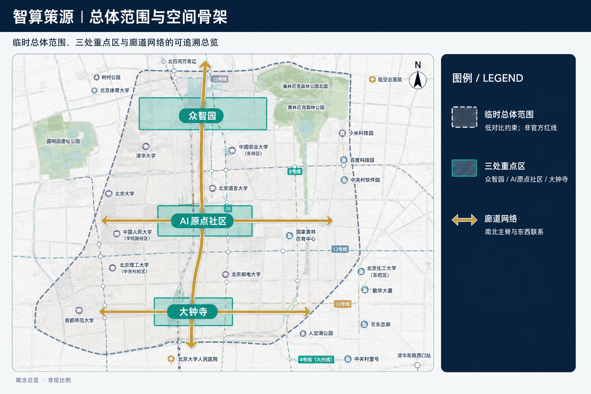
赛事必需图01｜总体设计范围与证据底座总览。
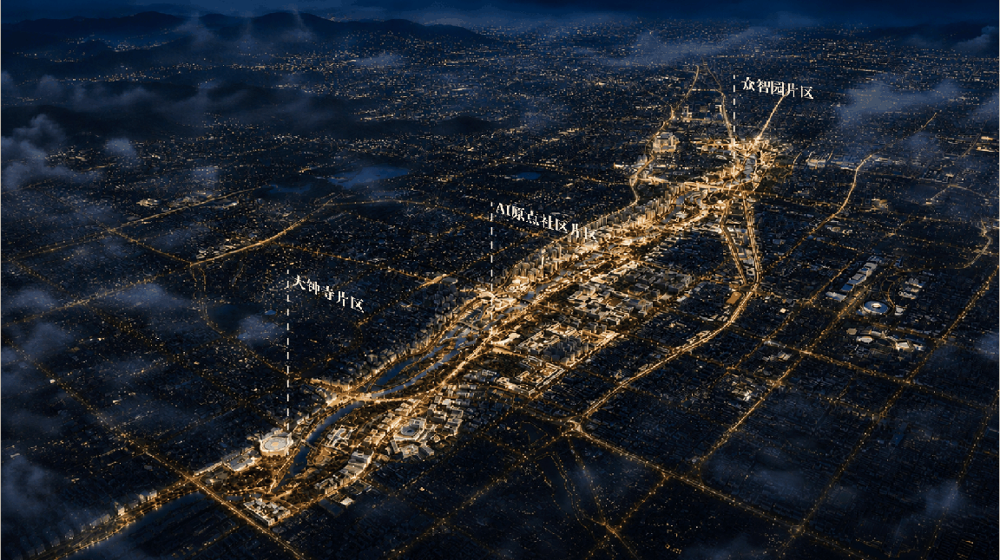
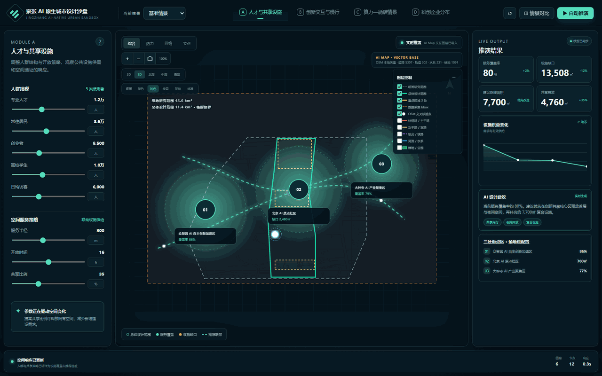
交互沙盘：下方或同页嵌入自动推演演示，点击页面中"点击进入全屏交互沙盘"即可体验完整交互（可拖拽、缩放、切换图层、参数推演）。
第一章 项目理解 · 为什么用 AI 做规划？
1 项目理解 · 百年京张 ▪ AI创新带
面向 AI 时代的京张铁路创新带，以「百年京张 ▪ AI创新带」为旗帜、以「世界级AI策源地」为核心定位，在百年铁路文脉之上重铸一条中国 AI 时代的科创走廊、文化廊道、韧性廊道；以众智园、北京AI原点社区、大钟寺三大重点区为策源支点，形成「三区两翼」的功能与韧性分工。
AI 时代规划的新命题：八个根本变化
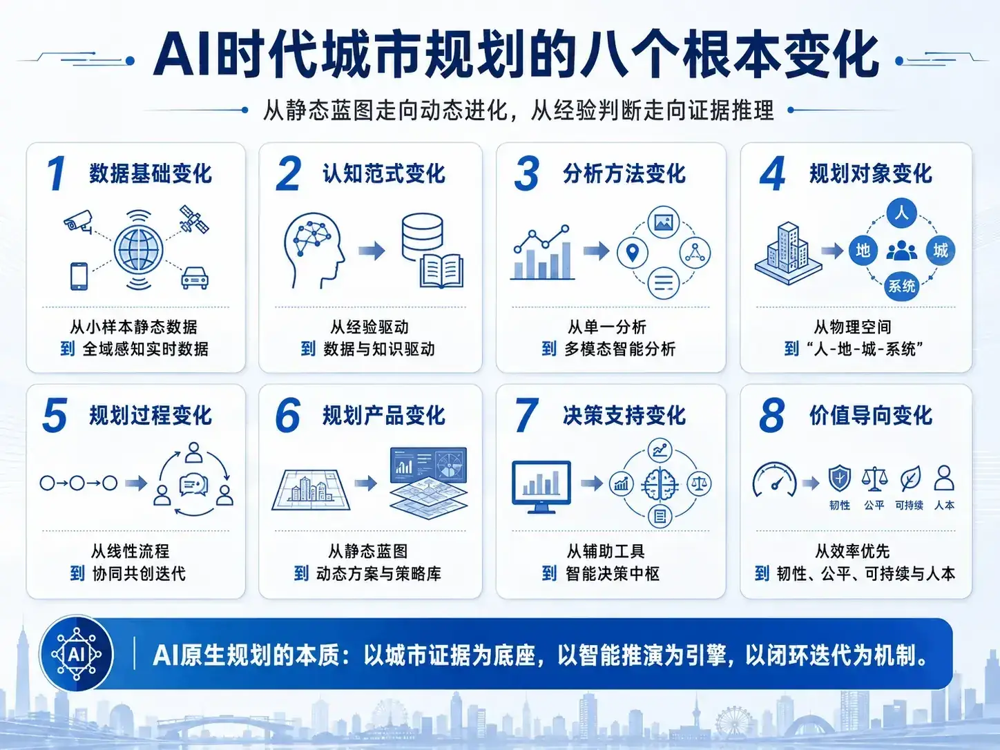
图 1｜AI 时代城市规划的八个根本变化
| 维度 | 传统规划 | AI 时代的转变 |
|---|---|---|
| 数据基础 | 小样本静态数据 | 全域感知实时数据（遥感、物联、信令、交通、能耗、反馈） |
| 认知范式 | 经验驱动 | 数据与知识共同驱动，规划师判断「哪些数据可信、哪些规律适用本地」 |
| 分析方法 | 单一分析 | 多模态智能分析，发现相关、异常与候选解释，再经专业验证 |
| 规划对象 | 物理空间 | 「人—地—城—系统」，关联产权、人口、产业、能耗、运营与社会影响 |
| 规划过程 | 线性流程 | 协同共创迭代，新证据可随时修正判断、优化方案 |
| 规划产品 | 静态蓝图 | 动态方案与策略库，可调用、可组合、可迭代 |
| 决策支持 | 辅助工具 | 智能决策中枢，提示证据缺口、前置条件、规则冲突与情景失效 |
| 价值导向 | 效率优先 | 韧性、公平、可持续与人本并重 |
核心命题三问：怎么做 · 如何呈现 · 如何应用
三个核心命题贯通方法、表达与应用落地。
怎么做规划：AI 原生规划的逻辑路径
感知与数据汇聚 ▶ 证据构建与治理 ▶ 知识图谱与推理 ▶ 方案生成与模拟 ▶ 决策辅助与协同 ▶ 监测评估与迭代
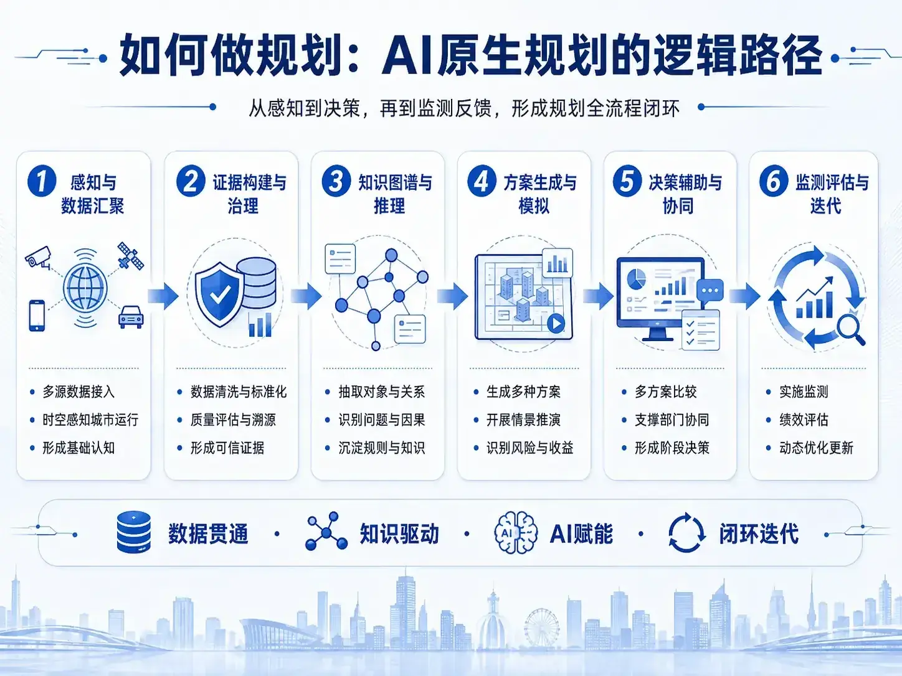
图 3｜如何做规划：AI 原生规划的逻辑路径
如何呈现规划：内容接口式的新型表达
AI 时代的规划呈现不应只是制作一套图册或一个三维模型，而应建立一个统一的规划母体，再根据不同使用者的任务与认知方式，形成六类信息接口：决策接口（结论·证据·风险·行动）、专业技术接口（数据·方法·模型·复核）、空间体验接口（二维/三维/情景/视角）、审批规则接口（指标·条件·豁免）、项目投资接口（清单·时序·资金·责任）、公众与运营接口（变化·进度·反馈·运行）。
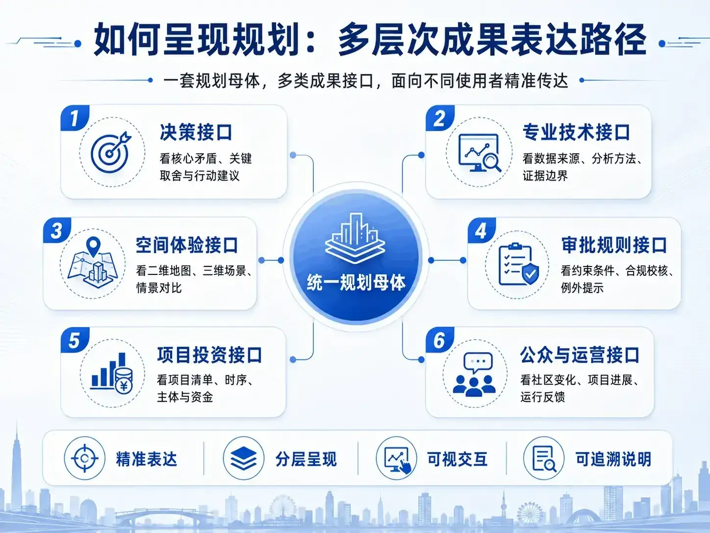
图 4｜如何呈现规划：内容接口式的新型表达方式
如何应用规划：AI 时代的新场景、新应用
AI 驱动的规划应用遵循一条共同路径——问题识别—方案生成—对策推演—场景设计—执行落地—反馈优化：把真实城市问题组织为一套以可信证据为基础、以多方案推演为方法、以空间与运营一体化为抓手、以开放协作和版本迭代为机制的持续规划系统，使京张铁路城市设计从一次性成果转变为能够不断学习、验证和更新的城市行动过程。
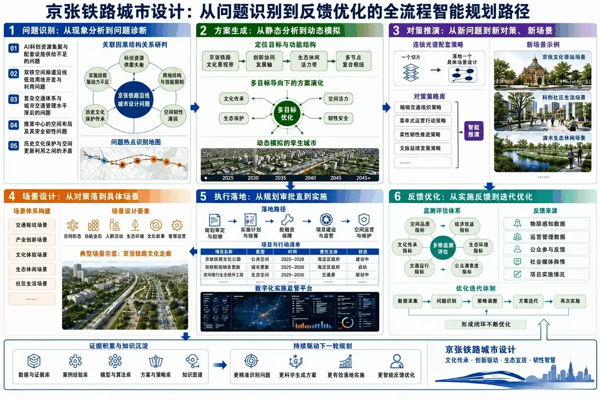
图 5｜如何应用规划：AI 时代下的新场景、新应用
第二章 底数的建立 · 用什么做规划？
底数的建立：从资料库到城市时空数据
构建面向京张铁路创新带的「全要素、多尺度、长周期」数据底座，并将多源数据上升为可计算、可推理、可追溯的知识网络，为问题识别与方案推演提供底数支撑。
城市证据系统不是把所有城市数据集中存储，而是将分散、异构、不同质量和不同权限的数据，经过治理、验证和解释，转化为能够支持规划判断的可信证据。其核心逻辑是：多源数据接入 — 统一资源管理 — 数据治理 — 证据形成 — 规划应用。数据只有明确了来源、时间、空间范围、处理方法、质量水平和适用边界，才能真正进入规划判断。
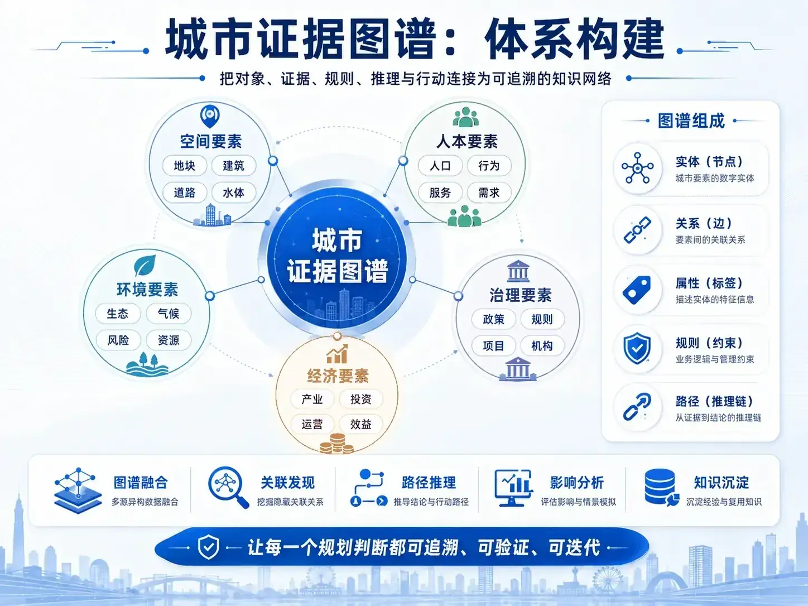
图 2｜从资料库转向城市时空数据，从现象分析转向机制假设
2.1 数据底座
静态空间证据
- 用地、建筑、道路、设施、地形、水系 - 产权、生态敏感区、历史文化资源 - 三维城市形态、天际线、公共空间品质
动态运行证据
- 街区级人口活动与交通流量（优先采用公开统计、现场计数或合法授权的聚合数据；不假定已取得手机信令） - 能耗、水耗、游客停留、设施使用 - 气象与环境监测
制度和项目证据
- 政策文件、审批条件、财政预算、土地供应 - 建设项目、运营权利、合同安排 - 实施主体与资金来源
社会认知证据
- 居民意见、企业诉求、网络讨论、投诉建议 - 地方知识、专家判断 - 利益相关者访谈
2.2 数据图谱
城市证据图谱不是把城市数据画成一张关系网，而是以城市对象为基础，把「数据从哪里来、说明了什么、支持或反驳什么判断、形成了什么决策、最终产生了什么结果」组织成可查询、可验证、可追溯、可更新的时空关系系统。
标的底座
- 空间单元（地块、街区、廊道、节点） - 功能设施（交通、产业、公共服务、算力设施） - 产权主体与治理主体
结构关系
- 空间关系（相邻、包含、可达、可视） - 功能关系（协同、冲突、依赖、替代） - 时序关系（演进、更新、项目先后）
专业主题图谱
- 交通—土地—产业互动图谱 - 历史保护—城市更新权衡图谱 - 科创资源—配套设施匹配图谱 - 算力设施—安全韧性评估图谱
其他关系
- 政策—项目—空间映射关系 - 公众诉求—规划响应关系
证据图谱在「一张图」与 CIM 之上，增加语义关联、证据溯源、规划推理、决策依据和实施反馈，比普通知识图谱多四个关键层面：来源和可信性；支持与反驳关系；推理和决策过程；行动结果及其反馈。
| 系统 | 主要回答的问题 | 典型内容 |
|---|---|---|
| GIS | 在哪里、范围多大、相互距离如何 | 地块、道路、水系、设施、行政区 |
| CIM／数字孪生 | 城市对象是什么状态、如何运行 | 建筑、管线、设备、三维模型、传感器 |
| 数据中台 | 有哪些数据、数据存在哪里 | 数据目录、接口、数据库、数据服务 |
| 城市知识图谱 | 城市对象之间有什么关系 | 建筑属于地块、企业位于园区、道路连接节点 |
| 城市证据图谱 | 为什么形成某个判断，判断是否可信，如何影响决策 | 证据、来源、假设、反证、规则、判断、决策、行动、结果 |
2.3 五项核心能力
图谱融合
- 将不同部门、专业与格式的信息统一关联到同一城市对象，形成跨领域证据体系
关联发现
- 发现空间、人口、经济、环境与治理之间隐藏的联系，识别分散系统中的共同问题
路径推理
- 从证据追踪到判断、方案、决策与项目，亦可反向查询规划依据与前置条件
影响分析
- 当政策、数据或项目变化时，沿图谱关系识别受影响的对象与部门
知识沉淀
- 将调研、判断、争议、方案选择与实施结果持续积累为可复用、可更新的知识资产
三层范围工作框架
方案以“统筹研究范围—总体设计范围—重点区域”三层尺度组织工作，分别承接产业与未来城市研究、京张沿线总体城市设计，以及众智园、北京AI原点社区和大钟寺的详细概念设计。临时约束范围不作为法定红线或审批依据。空间数据 深度 来源
1.3 三区两翼：三大重点区总体分工
依据任务书对「三区两翼」的角色指派，本方案将三大重点区分别定位为策源链条上的三个不同支点，使「策源」从抽象概念落到可分工、可承接、可协同的具体空间：
| 重点区域 | 定位 | 主题 | 在策源链条中的角色 |
|---|---|---|---|
| 众智园 | AI 自主创新加速区 | 开放共赢 · 创新发展 | 全栈自主创新 + 算力与治理话语权，突破关键核心技术 |
| 北京AI 原点社区 | 世界级AI创新生态策源地 | 强化优势 · 年轻图强 | 要素汇聚与标准输出，产出新思想、新企业、新标准 |
| 大钟寺 | AI 产业聚集区 | 要素集聚 · 生态协同 | 智能原生新业态 + 南部低时延响应，产业落地与场景扩散 |
众智园 · 突破 ▶ 原点社区 · 策源 ▶ 大钟寺 · 聚集
三者由京张廊道与轨道网络串联，构成「自主创新突破 → 要素策源汇聚 → 产业生态聚集」的完整链条；两翼（交通、机器人、公共空间节点与外围训练中心）作为支撑与响应，共同托举「世界级AI策源地」的整体定位。此落位是城市设计阶段的场景选择，非正式地块选址，取得官方边界与权属资料后应在各区内部重新比选具体地块。
1.7 功能结构：四廊道空间骨架
在总体定位之下，京张铁路创新带形成「四廊道」功能结构，作为三区两翼的空间骨架（对应大纲 1.2）：
| 功能结构 | 内涵 | 主要落位 |
|---|---|---|
| 科创引擎核 | 高校—院所—企业创新集聚区，创新思想的策源引擎 | 北京AI 原点社区（核心） |
| 双铁复合廊 | 交通—产业—公共空间一体化廊道，串联三区的空间主轴 | 京张廊道（贯穿三区） |
| 韧性算力区 | 安全、低碳、弹性的智算基础设施布局，支撑全栈自主创新 | 众智园（核心）+ 外围训练中心 |
| 文脉生活带 | 铁路遗产活化与社区更新融合带，兑现「文化廊道」属性 | 京张遗址公园沿线 + 大钟寺 |
四廊道并非四条并列的带，而是叠加在同一片空间上的四重属性：科创引擎核提供策源的「密度」，双铁复合廊提供流动的「连通」，韧性算力区提供运行的「保障」，文脉生活带提供认同的「厚度」。四者共同把「百年京张」的历史纵深转化为「AI创新带」的未来图景。
1.8 三区韧性分工与区域协同
「世界级AI策源地」的定位同时要求三区形成明确的韧性分工，使策源能力不因单点冲击而失效（详见 4.4）：
| 重点区域 | 韧性角色 | 主要空间载体 | 与策源地关系 |
|---|---|---|---|
| 众智园 | AI全栈自主创新 + 算力与治理话语权 | 推理与训练中心、芯片测试工坊、模型验证场、安全治理实验室 | 承接算力主中心与标准治理，反向支撑原点策源 |
| 北京AI原点社区 | 世界级创新生态·策源地（要素策源 + 制度韧性） | 开源发布厅、成果转化街、数据要素会客厅、标准评测、人才社区、端侧算力驿站 | 场景核心，六要素汇聚与标准输出 |
| 大钟寺 | 智能原生新业态（场景韧性 + 边缘响应） | 企业服务站、产品发布、轻量边缘节点 | 调用策源与算力服务，承担南部低时延与灾备缓存 |
外围训练中心承担高能耗、长时间的大规模训练；众智园承担全栈推理、芯片测试与安全治理；原点社区承担要素策源、标准制定与可信数据流通；三区与交通、机器人、公共空间节点共同构成「外围训练 — 众智园全栈推理与验证 — 原点要素策源与标准输出 — 三区边缘响应」的完整链条。
1.9 设计边界
本节是一项面向城市设计竞赛的概念定位。三大重点区的具体地块、空间范围、功能配比与建设规模均为设计推演条件，不是已获批准的选址、用地或工程结论；「世界级AI策源地」是规划愿景与评价标准，不构成对任何主体的承建或实施承诺。
正式深化时，应依据届时取得的官方重点区边界、控规条件、地形高程、电力与市政容量、权属及环境影响资料，重新校核三区定位、功能结构与韧性分工。
主要参考依据
1. 《百年京张 AI 创新带面向智能体开放征集任务书》本地清权摘要。 2. 本方案结构大纲「1 项目理解与功能结构」。 3. 本方案 4.4「柔性韧性智算计划」（三区两翼韧性分工）。
统筹研究范围产业与未来城市研究
“智算策源：AI原生规划下的京张二次自主”关注的不是一般产业集聚，而是从技术底座自主进一步走向城市认知、规划推演、空间行动与韧性运营的自主能力，使高校院所、企业、人才、资本、可信数据、测试环境和公共生活共同支撑新思想、新企业、新标准持续产生。百年铁路由此成为串联科创、文化、韧性与生活的未来城市公共界面。来源 深度
1.1 总体定位：世界级AI策源地
竞赛对象是京张铁路沿线空间——科技创新资源集聚、双铁廊道叠加、历史文脉交织的复合型城市区域。据此，本方案的总体定位收敛为一句话：
百年京张 ▪ AI创新带 —— 世界级AI策源地。
以百年京张铁路的历史纵深为底座，以「AI 时代的科创走廊、文化廊道、韧性廊道」为三重属性，将京张铁路创新带建设为中国人工智能时代的世界级策源之地。
图 A｜总体定位：百年京张 ▪ AI创新带 · 世界级AI策源地
这一总体定位在三个层面展开，与「核心命题三问」（1.2）一一对应：
| 定位层面 | 内涵 | 回应的命题 |
|---|---|---|
| 一条廊道（空间载体） | 京张廊道作为「科创 + 文化 + 韧性」三重属性叠加的复合廊道 | 怎么做规划 |
| 一个策源（核心功能） | 「世界级AI策源地」——产出新思想、新企业、新标准，而非仅仅集聚要素 | 规划如何推演 |
| 一套方法（方法论） | 「规划操作系统」——以城市运行反馈为闭环的人机协同规划 | 规划如何产生价值 |
「世界级AI策源地」不是一句口号，而是一个可检验的定位标准：策源地区别于一般 AI 园区之处，不在于要素更密集，而在于自适应能力更强——当技术范式切换、算力供给受冲击、资本进入下行周期、人才阶段性外流时，生态能否自我替代、自我重组、自我再生。这一判断与本方案 4.4「柔性韧性智算」的命题一脉相承：世界级 AI 策源地的核心竞争力，正是它在持续动荡中不断产出新思想、新企业、新标准的能力。
1.2 策源能力：四个可检验维度
本方案将「世界级AI策源地」拆解为四个可检验的设计维度：
- 科学规律的第一发现者：依托高校院所集聚，成为 AI 基础研究的策源高地； - 技术发明的第一创造者：依托众智园全栈自主创新，成为关键核心技术突破的策源引擎； - 创新产业的第一开拓者：依托原点社区要素汇聚，成为新产业、新业态的策源母体； - 创新理念的第一实践者：依托「规划操作系统」方法论，成为 AI 时代规划范式变革的首发场景。
四个维度与「三区两翼」的空间分工相互映射，构成从思想到技术、从产业到理念的完整策源链条。
总体设计范围城市更新与控规深度城市设计
总体设计由五类结构问题进入空间结构、用地分区、公共设施和城市更新策略。容积率、高度、密度、退线等依赖正式控规的条件保持待核；提交用地图层是设计模型，不是法定控规结论。标准 深度 空间数据
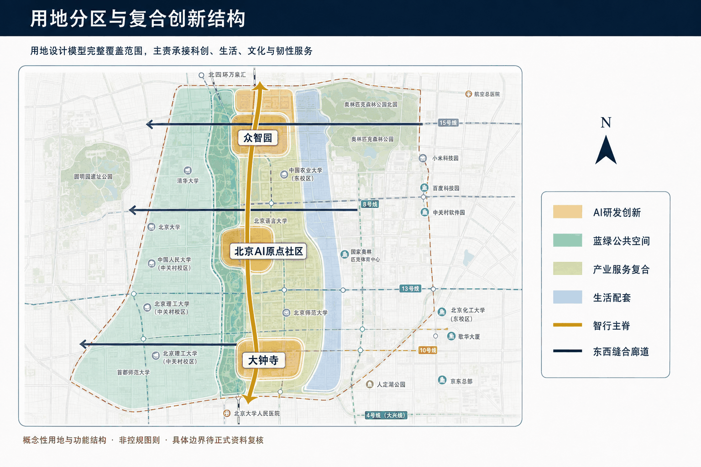
赛事必需图02｜用地分区与总体空间结构。
第三章 问题的识别 · 规划要解决什么？
问题的识别：从现象分析到机制假设
在现有公开资料与设计模型基础上提出「为什么」和「哪些干预可能有效」的待验证解释，而不把共现关系写成已证实因果。本层把现状现象转化为可计算、可监测的诊断指标与候选机制链，为后续试点设计和对策比较提供问题假设。
机制假设 五大核心问题 现象—候选机制—诊断指标 AI 创新带 3.1
方法论边界：从相关性识别到可检验机制假设
本层是整体方案六层递进逻辑中从「问题的识别」切入的关键一步，其方法论转向可概括为一句话：
当前成果只提出候选机制，不声称已经识别因果效应。真实试点应预注册处理组与对照组，明确混杂变量和识别假设，报告误差范围并完成安慰剂、敏感性和稳健性检验；在此之前，模型只用于形成可证伪问题和备选干预。
传统问题识别多停留在「现象」与「相关性」层面，容易将共现关系误判为因果，从而提出治标不治本的对策。本章在方法上做三点转向：
| 维度 | 传统做法（相关性） | 本章做法（机制假设） |
|---|---|---|
| 问题表述 | 「A 与 B 存在相关」 | 「X 可能通过 Z 影响 Y」——提出待验证机制 |
| 干预对象 | 对现象本身做修补 | 提出可在试点中比较的候选杠杆点 |
| 成果形态 | 定性描述 + 孤立指标 | 可计算、可上图、可监测的诊断指标 |
据此，每一个核心问题都按统一的「现象 — 候选机制 — 诊断指标」三段式展开：现象记录「看到了什么」，候选机制提出「可能为何发生」，诊断指标说明「如何量化并持续追踪」。箭头表示待检验关系，不表示已证明的因果效应。
3.2
五大核心问题总览
京张铁路创新带在 AI 时代面临五类既相互独立、又彼此耦合的核心问题。下表为总览，各问题的深化诊断详见下方对应小节。
| # | 核心问题 | 现象 | 候选机制链（待验证） | 诊断指标 |
|---|---|---|---|---|
| 一 | AI 科创资源集聚与配套设施体系不匹配 | 高校、院所、企业高度集聚，但居住、商业、文化、交往空间不足 | 职住分离 → 长距离通勤 → 创新网络断裂 → 人才流失风险 | 岗位—住房平衡度、创新设施密度、通勤时间成本 |
| 二 | 双铁空间廊道沿线低效用地再开发利用 | 铁路廊道两侧大量低效工业、仓储、闲置用地 | 产权复杂 + 安全管控 + 更新动力不足 → 空间割裂与价值沉没 | 沿线用地效率、铁路两侧可达性、更新潜力指数 |
| 三 | 复杂交通体系与城市交通管理水平落后的矛盾 | 地铁、市郊铁路、高铁、城市道路多重叠加，换乘效率低、管理碎片化 | 多主体运营 + 数据未打通 + 预测能力不足 → 拥堵与体验双差 | 换乘时间、拥堵指数、多模式出行分担率 |
| 四 | 推算中心的空间布局及其安全韧性 | 智算中心、大数据中心等新型基础设施快速扩张 | 能耗—土地—安全约束集聚 → 布局风险与韧性不足 | 算力需求密度、能源保障、灾害风险暴露度、网络韧性 |
| 五 | 历史文化保护与空间更新利用之间的矛盾 | 京张铁路遗产价值高，但保护与活化利用难以平衡 | 保护边界刚性 + 活化路径模糊 + 公众参与不足 → 文脉断裂 | 遗产点保护等级、活化利用强度、公众文化认同度 |
问题一
AI 科创资源集聚与配套设施体系不匹配
已完成
现象 — 候选机制 — 诊断指标 的完整深化诊断如下（含科创资源集聚格局、配套设施错配与六类缺口、可计算诊断口径）。
问题识别：AI 科创资源集聚 配套体系仍停留在「保基本」
探索性点位图层显示，高校科研资源与科技企业沿廊道呈集聚趋势，但该图层未经逐项复核，不用于数量或密度结论。现有公共服务仍以居住区「保基本」逻辑为主，难以充分回应创新活动对交流、协作与共享设施的需求。
问题：AI 科创资源集聚，配套设施体系却仍停留在「保基本」
把「人的点位」与「设施的点位」叠在同一张图上，错配一目了然：资源在哪里极速集聚，配套却在哪里仍然缺席。
资源在哪：高校科研与科技企业集聚带
创新带内的科创资源高度集聚，呈现「北端人才源头、南端产业集聚」的空间双极格局 推断：
- 高校科研资源：沿北段形成连续的人才与科研活动界面。 - 科技企业资源：沿中南段形成企业服务与成果转化节点。 - 中间是「走廊」：北端人才与南端产业之间，隔着一条长约数公里的通勤与协作走廊——配套本应沿此展开，却并未跟上。
配套在哪：仍以「保基本」的规范级设施兜底
现有公共服务设施以保基本层为主，按居住区配套的规范值兜底 规范值：解决的是「买菜、就学、就医、基础运动」等基本生活，而非 AI 人才的「创新生活」。结果是——
核心判断
人才密度最高的地方，恰恰是创新配套最薄弱的环节。现状配套解决的是「居住」问题，解决不了「创新」问题——需要一个以 AI 人才为中心、而非仅以居民为中心的新增配套体系。
空间总览：高校与 AI 企业资源集聚 默认展示探索性高校与科技企业点位图层；可在右上角面板切换查看空间分布。点位仅作界面演示，不显示或支持正式统计结论。
公共服务类型与可达性缺口梳理
对照创新需求，现有公共服务设施体系可归结为「一个底座 + 六类缺口」。
| 层次 | 现状特征 | 相对 AI 创新需求的问题 |
|---|---|---|
| 基础生活服务层（类型与可达性待正式普查） | 买菜、就学、就医、基础运动等基本生活支持 | 当前证据仅支撑服务类型框架，不支撑设施总量或人口需求基线 |
| 创新配套（六类） 咖啡社交 / 健身运动 / 图书馆自习 / 会议路演 / 食堂餐饮 / 展示社群 | 零散、自发生长、不成体系；「第三空间」与「创新服务」普遍缺失 推断 | 无法承载 AI 人才高频的「非预期交互」——而创新恰恰依赖碰撞 |
人口口径进一步说明错配的规模：
- 居民与创新人群规模尚缺少与当前设计范围一致、可复现的正式基线，本稿不再给出未经审计的人数。 - 这意味着：新增配套应以真实使用者调研和可达性核验为依据，形成面向创新活动、同时与居民共享的连续服务光谱。
因此，方案的核心不是「补几个点」，而是换一套逻辑——从「保基本、点状补给」转向「连续光谱、四层嵌套」。
问题二
双铁空间廊道沿线低效用地再开发利用问题
已完成
现象 — 候选机制 — 诊断指标 的完整深化诊断如下（含四个子问题与可计算诊断指标）。
双铁空间廊道沿线低效用地再开发利用问题
在京张铁路入地、13 号线改造“上天入地”之后，原本被铁路切割的城市被重新缝合为一条高价值廊道。但廊道两侧大量老旧厂房、交易市场、桥下消极空间、背向公园的大院用地未能同步更新，形成“潜力已释放、现状仍低效”的开发错位。本部分聚焦"双铁空间廊道沿线低效用地再开发利用问题"（整体问题框架中的核心问题之二），按"现象—候选机制—诊断指标"的机制假设诊断逻辑展开。
双铁廊道 低效用地再开发 用地效率 更新潜力指数 AI 创新带 概览
总体判断：潜力释放与现状低效的错位
现象。京张铁路 9 公里沿线两侧存在大量低效用地——老旧厂房、低效楼宇、闲置地块、转型中的商业体，以及桥下、铁路闲置地、临时停车场等消极空间。与此同时，AI 产业需要成片、连续、可承载创新活动的产业用地，二者之间出现明显错配：“地很多但很碎、且权属不清”与“产业要成片用地”之间不匹配。
机制假设。双铁由地面转为地下 / 高架后，物理阻隔消失、廊道两侧土地价值抬升；但产权复杂、安全管控要求高、更新动力不足三重约束叠加，使市场、棚户、老旧工业与桥下空间未能及时更新，最终导致空间割裂与价值沉没。本区段呈现的候选机制链（待验证）即：产权复杂 + 安全管控要求高 + 更新动力不足 → 空间割裂与价值沉没。
本问题即"双铁空间廊道沿线低效用地再开发利用问题"，在整体问题框架中位列核心问题之二：其向上承接沿线用地效率、铁路两侧可达性等基础底数（需以城市时空数据底座为支撑），向下指向存量空间的精细激活与连续配套（对应方案的生成与对策的发现）。问题识别的结果将直接转化为可计算、可监测的诊断指标与数字化底座的构建需求。
问题一
廊道释放与用地更新“时间差”造成错位
双铁入地 / 高架后，铁路对城市的物理切割被解除，廊道两侧土地从“被铁路贬值的边角”转变为“高可达性的稀缺资源”，土地价值显著提升。但原有市场、棚户、老旧工业 / 仓储、桥下消极空间并未同步进入更新轨道——空间阻隔已无、开发潜力已现，而现状品质与功能仍停留在低效状态，形成“开发潜力”与“现状品质”之间的明显时间差与空间错位。
- 9 km：京张铁路沿线廊道长度 - 双铁：入地（高铁）+ 高架（13 号线）同步释放 - T+Δ：廊道价值窗口期 vs 更新落地周期
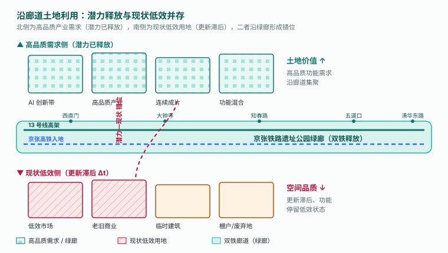
图 1 · 廊道沿线土地利用低效与空间品质低下并存。沿京张铁路遗址公园廊道，低效市场、老旧商业、临时建筑与周边高品质需求形成鲜明反差，土地利用效率与空间品质同步偏低。 问题二
低效用地类型多元且高度碎片化
沿 9 公里廊道，低效用地并非单一类型，而是呈“点—线—面”混杂散布，难以成片整合：
① 交易市场类（非首都功能疏解对象）
天明眼镜批发城、五道口服装市场、四道口购物广场、农贸市场、古玩市场、家具广场、中坤广场、水产批发市场等。建筑风貌陈旧、空间品质低下，多为待疏解对象，腾退节奏与产业承接之间存在空档。
② 消极空间类（面积大、功能缺）
13 号线桥下、铁路闲置地、临时停车场、围墙围合的边角地——面积可观，但缺乏公共功能，长期处于“看得见、用不上”的消极状态。
③ 棚户与废弃地
知春路、北四环西、五道口等节点周边存在棚户区与待更新地块，更新成本高、权属复杂。
- 桥下、铁路闲置地、临时停车与围墙界面：作为低效空间类型纳入后续测绘与分类核验，本方案不引用未经复核的面积或长度数值。
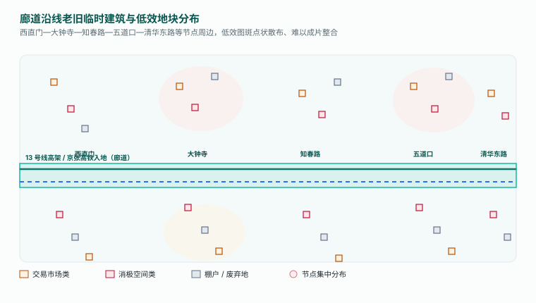
图 2 · 廊道沿线老旧临时建筑与低效地块分布。西直门、大钟寺、知春路、五道口、清华东路等节点周边集中分布老旧临时建筑，更新图斑点状散布、难以成片整合。 问题三
大院围墙与行政边界叠加，更新主体分散
低效用地更新不仅是空间问题，更是治理问题。廊道沿线被两类边界层层分割：
- 围墙边界：现场与图面观察提示部分科研院校以封闭界面面向公园廊道，存在设施共享不足与界面不友好问题；具体范围须经现场核查。 - 行政边界：沿线涉及 7 个街镇行政边界，各自为政，难以形成统一的城市更新与公共空间运营主体，跨街镇的项目协同与利益统筹成本高。
- 院校界面：存在背向公园和封闭现象 - 行政边界：多主体协同 - 围墙：可能阻隔可达性与共享
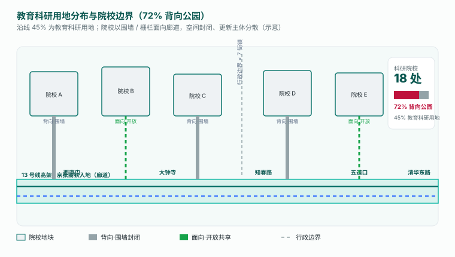
图 3 · 教育科研用地分布与院校边界。图面显示部分院校以围墙、栅栏面向廊道，提示空间开放与更新协同问题；比例和范围须以正式用地数据及现场核查为准。 问题四
公共空间与生态网络缺失
即便廊道被释放为绿带，其“公共性”与“生态性”仍未充分兑现：
- 开放空间被各类界面分隔，部分空间活力与可达性不足； - 绿地呈点状零散分布，未形成连续绿网，生态廊道效应难以发挥； - 成片苗圃 / 公园之间缺少联系与设计协同，生态价值与公共活力未充分释放。
- 空间活力：部分开放空间使用不足 - 界面连续性：需现场核查 - 点状：绿地尚未形成连续网络
诊断指标
诊断指标：从现象识别到可计算、可监测
遵循"从现象分析转向机制假设诊断"的方法，将前述四个问题转化为可量化、可上图、可由数字化底座持续监测的诊断指标。指标既承接城市时空数据底座，也直接对应后续数字化产品的监测对象。
| 问题 | 诊断指标 | 现状 / 阈值（可计算） | 数据来源与监测手段（数字化底座） |
|---|---|---|---|
| 问题一 时间差错位 | 沿线用地效率 | 低效用地占比、单位用地产出强度；廊道释放后土地价值指数↑ 但现状品质未同步 | 国土一张图 + 地价监测 + 遥感影像识别（AI 一张图） |
| 更新潜力指数（时间维） | 各地块“识别→策划→更新→运营”阶段与窗口期流失风险预警 | 更新专项策划库 + 进度看板（营城小程序） | |
| 问题二 类型碎片化 | 沿线用地效率（结构维） | 交易市场类 / 消极空间类 / 棚户废弃地的分类分布与连通性 | 低效用地现状库（分类上图）+ 后续测绘校核 |
| 更新潜力指数（成片维） | 可拼合成片单元数量、碎片化度（图斑连通度） | 空间单元图谱 + 图斑连通性计算 | |
| 问题三 主体分散 | 铁路两侧可达性（共享维） | 院校朝向、跨主体协同关系与围墙阻隔界面 | 院校开放度核查 + 行政边界 + 多主体共治入口 |
| 问题四 公共生态缺失 | 更新潜力指数（品质维） | 开放空间活力与绿地网络连通性 | 开放空间 / 绿地矢量 + 生态网络可视化 |
上述三类核心指标——沿线用地效率、铁路两侧可达性、更新潜力指数——即"双铁空间廊道沿线低效用地再开发利用问题"的诊断核心；本识别将其在本区段进一步细化为可计算的子指标与数据支撑，作为后续"方案生成"与"数字化产品（营城小程序）"的输入。
问题三
复杂交通体系与城市交通管理水平落后的矛盾
已完成
现象 — 候选机制 — 诊断指标 的完整深化诊断如下（含五个子问题与可计算诊断指标）。
复杂交通体系与城市交通管理水平落后的矛盾
京张高铁入地、13 号线上天，叠加城市路网重构、中央生态景观廊带慢行缝合、多个 TOD 枢纽与立体化静态交通，本区已演变为“地下—地面—高架”三层复合的复杂交通体系。但综合交通管理手段仍停留在静态规划与人工经验层面，难以应对多层立体、多主体运营、峰值集散的新格局——交通体系的复杂度与管理水平的滞后形成尖锐矛盾。本部分聚焦"复杂交通体系与城市交通管理水平落后的矛盾"（整体问题框架中的核心问题之三）。
三层复合交通 换乘效率 管理碎片化 拥堵指数 AI 创新带 概览
总体判断：体系已复杂，管理仍滞后
现象。地铁、市郊铁路（京张高铁）、13 号线、城市道路多重叠加，形成地下高铁、地面公园绿廊、高架轨道的“三层复合”体系；沿线 TOD 枢纽、P+R、多元公交、立体静态交通密集。但换乘效率低、节点冲突多、管理碎片化，居民与访客的出行体验并未随硬件升级同步改善。
机制假设。多主体运营（铁路 / 地铁 / 市政 / 高校 / 街镇）+ 数据未打通 + 预测能力不足，导致“硬件复杂化”与“软件粗放化”并存，最终表现为拥堵与体验双差。本区段呈现的候选机制链（待验证）即：多主体运营 + 数据未打通 + 预测能力不足 → 拥堵与体验双差。
本问题即"复杂交通体系与城市交通管理水平落后的矛盾"，在整体问题框架中位列核心问题之三：其向上承接人流、车流、公共交通 OD 等动态运行数据底座，向下指向菜单专选智行策略、铁路廊道与慢行融合等对策。其诊断结果将转化为可计算、可监测的诊断指标，并构成智慧交通平台的核心监测对象。
问题一
地下—地面—高架三层复合，竖向衔接复杂
京张高铁入地与 13 号线改造后，本区形成 7 种典型地上地下空间断面。地下高铁、地面公园、高架轨道之间的人流、车流、管线关系高度耦合，传统以“平面二维”为基础的组织方式已不够用——竖向维度的换乘、疏散、管线避让成为新的复杂性来源。
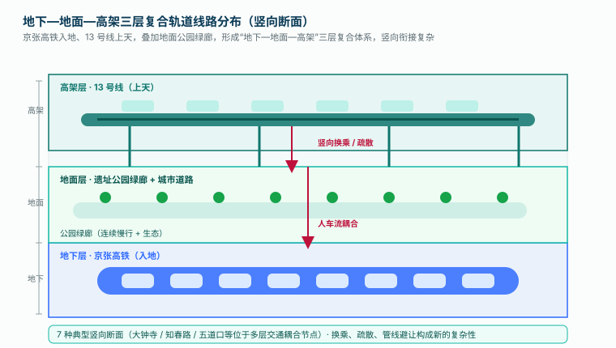
图 1 · 地下—地面—高架三层复合轨道线路分布。京张高铁入地、13 号线高架 / 地面 / 入地段交替，形成 7 种典型竖向断面，大钟寺、知春路、五道口等站点位于多层交通耦合节点。 问题二
东西向联系长期被切割，路网密度仍偏低
铁路、轨道、转河、快速路共同构成东西向交通隔断，部分路径需要绕行。探索性底图判读提示支路连续性与跨廊道联系不足；在缺少版本化道路红线、测绘与可复现计算链的情况下，本方案不采用精确路网密度、断点数量或与规范阈值的定量比较。
- 路网连续性：局部支路衔接不足 - 跨廊道联系：部分路径绕行 - 复核要求：以正式道路数据重算
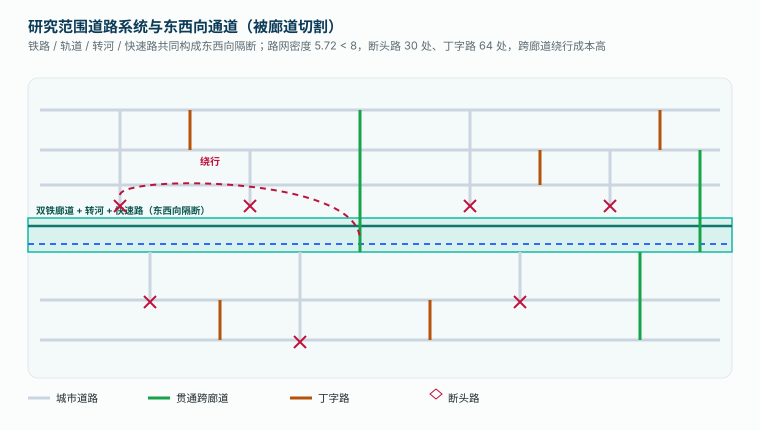
图 2 · 研究范围道路系统与东西向通道。高速公路、快速路、主干路、次干路、支路等级分明，但受铁路 / 轨道 / 转河切割，东西向跨廊道联系不足，断头路与丁字路进一步放大绕行成本。 问题三
站点换乘与接驳效率不高
13号线与京张廊道并行，提交设计研究识别出若干站点—公园及跨廊慢行联系的候选断点。这些判断属于探索性观察，需取得正式路网、站口资料并完成现场调查和可复现路径分析后，才能形成覆盖比例、步行时间或绝对性结论。
- 探索性观察：保留候选接驳与跨廊断点作为专业调查对象；本稿不主张未经审计的覆盖比例、步行阈值或绝对排名。
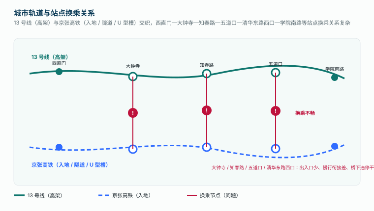
图 3 · 城市轨道与站点换乘关系。京张高铁地面段 / 隧道段 / U 型槽段与 13 号线上地段 / 地下段 / 入地段交织，西直门、大钟寺、知春路、五道口、清华东路西口、学院南路等站点换乘关系复杂。 问题四
多种交通流混行，节点冲突严重
过境交通占比高，T 型路口、斜向双清路、交叉口间距过近导致行人 / 非机动车 / 机动车混行冲突严重，交通秩序混乱。国际交往段成府路高峰常年拥堵，双清路与清华东路 / 荷清路形成交通“痛点”，人、非机、机动车在有限空间内相互干扰。
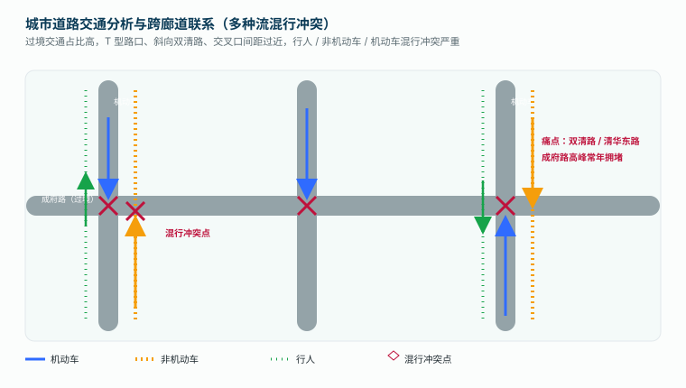
图 4 · 城市道路交通分析与跨廊道联系。城市快速路、主干路与规划未实施道路叠加，过境交通与到发交通在有限走廊内交织，清华东路、成府路、学院南路等东西向通道承担着高强度混行压力。 问题五
交通管理手段粗放：桥下空间失序与慢行体验缺失
① 桥下空间管理粗放
桥下空间被大量违章停车、圈地停车、临时搭建占用，未转化为有序公共空间，反而成为接驳与慢行的干扰源（亦加剧问题三的站点接驳不畅）。
② 慢行系统管理缺失
自行车停放无序、侵占公交候车点；人行道狭窄、破损、阴暗，通行体验差，削弱了绿廊本应提供的连续慢行缝合功能。
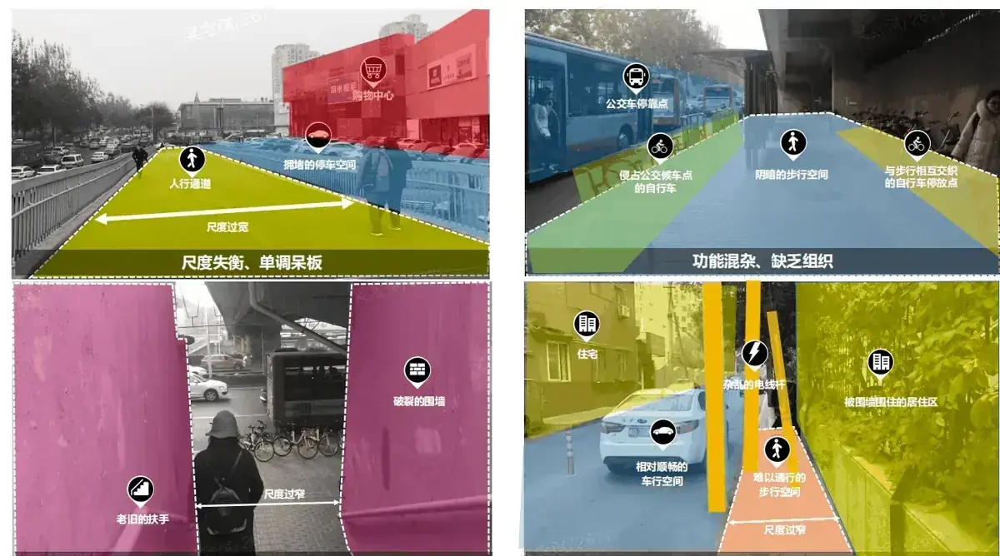
图 5 · 桥下空间与慢行环境管理粗放。桥下与街道空间普遍存在尺度过宽、功能混杂、人行通道被侵占、自行车与公交候车点相互干扰、慢行体验差等问题，管理精细化不足。 诊断指标
诊断指标：从现象识别到可计算、可监测
遵循"从现象分析转向机制假设诊断"的方法，将前述五个问题转化为可量化、可上图、可由数字化底座持续监测的诊断指标，直接对应智慧交通平台的监测对象。
| 问题 | 诊断指标 | 现状 / 阈值（可计算） | 数据来源与监测手段（数字化底座） |
|---|---|---|---|
| 问题一 多层衔接 | 换乘与疏散表现 | 候选竖向衔接类型与多层人车冲突位置；数量待现场和工程核验 | 实测断面 + 授权后建立BIM/IoT模型 |
| 问题二 东西向切割 | 拥堵指数（路网承载） | 路网连续性、跨廊道平均绕行距离与连接缺口 | 正式路网矢量 + 实时交通流 + 绕行路径计算 |
| 问题三 接驳不畅 | 换乘时间 / 多模式出行分担率 | 候选站点—公园及跨廊断点；基线与阈值待可复现路网分析 | 授权公交、轨道、道路与慢行数据 + 路径分析 |
| 问题四 混行冲突 | 拥堵指数（秩序） | 节点混行冲突强度；成府路/双清路等痛点路段高峰拥堵时长 | 多源感知融合（视频/雷达）+ 事件自动检测 |
| 问题五 管理粗放 | 多模式出行分担率（品质） | 桥下违停 / 圈地占用率；慢行道破损率、自行车侵占候车点频次 | 桥下泊位 AI 检测 + 慢行品质评分 + 随手拍闭环 |
上述核心指标——换乘时间、拥堵指数、多模式出行分担率——即"复杂交通体系与城市交通管理水平落后的矛盾"的诊断核心；本识别将其在本区段细化为可计算的子指标与数据支撑，作为后续"方案生成"与"数字化产品（智慧交通平台）"的输入。
问题四
推算中心的空间布局及其安全韧性
已完成
现象 — 候选机制 — 诊断指标 的完整深化诊断如下（含总体判断、四个现象、候选机制链与可计算诊断指标）。
推算中心的空间布局及其安全韧性
当智算集群以“城市级基础设施”的体量进入高密度建成区，选址约束被成本逻辑压倒、韧性设计被“一步到位”简化、运行治理被“重建设轻运行”搁置——布局的“热”与韧性的“冷”构成系统性错位。本节按「现象 — 候选机制 — 诊断指标」三段式展开深化诊断。
3.4.1 总体判断：算力布局之“热”与安全韧性之“冷”
现象。大模型训练与智能体推理催生算力需求的爆发式增长，十万卡级智算集群、智能算力基础设施建设全面提速，算力设施正从“企业机房”升级为决定区域竞争力的“城市级基础设施”。在此背景下，智算中心、推算中心在创新走廊沿线快速扩张、争相落位，呈现明显的“算力上街”倾向——向高密度建成区、高校院所周边、轨道站点附近集聚，以获取就近算力与人才便利。但与此同时，算力设施高能耗、高敏感、高风险的空间属性并未得到同等程度的敬畏：选址安全边界被成本逻辑压缩，抗洪、抗震、防火等空间韧性要求被“先落位再论证”的节奏冲淡，运行阶段的冗余、降级与自愈能力更是长期缺席。
机制假设。算力需求密度持续攀升，叠加能耗、土地、安全三大约束在同一空间尺度上集聚，使“布局”与“韧性”成为一对结构性矛盾：布局追求贴近用户、贴近电网、贴近人才，韧性要求避开灾害、保留冗余、支持重构——二者在寸土寸金的创新走廊内难以同时满足，而当前实践普遍优先布局、妥协韧性，最终表现为布局风险累积与韧性赤字并存。本问题呈现的候选机制链（待验证）即：算力需求爆发 + 选址约束让位成本 + 韧性设计简化 + 运行治理缺失 → 布局风险与韧性不足。
本问题即“推算中心的空间布局及其安全韧性”，在整体问题框架中位列核心问题之四：其向上承接算力需求密度、能源保障、灾害风险暴露度、网络韧性等基础底数（需以城市时空数据底座为支撑），向下指向“AI+柔性韧性智算”的空间抗灾、要素冗余与制度自愈策略（对应方案的生成与对策的发现）。问题识别的结果将直接转化为可计算、可监测的诊断指标与数字化底座的构建需求。 - 十万卡：国产智算集群建设目标（区域级） - 高敏感：算力设施对电力/通信/环境的刚性依赖 - 单一化：集中布局导致的单点失效风险
3.4.2 现象一：需求爆发与选址约束的正面冲突
算力中心不是普通产业建筑，其对选址条件有严格的刚性要求，而高密度建成区的空间现实与之存在系统性冲突：
- 能源约束：电力供给须充足可靠、通信须快速畅通、交通须便捷——但创新走廊核心区电网容量与变电设施增量有限，大规模算力用电与城市生活用电争抢同一电网； - 环境约束：自然环境须清洁、环境温度须有利于节能——但高密度建成区热岛效应显著、粉尘油烟来源复杂，全年自然冷却时长被压缩，PUE 被动抬升； - 危险源避让：须远离粉尘、油烟、有害气体及腐蚀性、易燃易爆物品场所——但建成区内的加油加气站、仓储物流、餐饮油烟等散布其中，安全间距难以逐项满足； - 灾害避让：须远离水灾、地震等自然灾害隐患区域——但廊道沿线临河临水段、地下水位上升区、断裂带影响范围均存在选址压线风险； - 功能兼容：大中型算力中心不宜建在住宅小区和商业区内——但“算力上街”恰恰把算力节点推向高密度居住与商业混合区，噪声、散热、运输与居民生活直接相邻。
图 1 · 选址约束冲突示意。算力设施的刚性选址要求（绿）与高密度建成区的空间现实（红）在能源、环境、灾害、功能四个维度正面冲突，可用安全选址空间被双向挤压。
3.4.3 现象二：集中布局与灾害风险暴露
算力设施天然倾向“集中布局、共享配套”以摊薄成本，但在灾害频发与极端天气常态化的背景下，集中布局正把系统性风险压缩进单点：
- 洪涝风险：临河、临沟、下凹桥区、地下水位上升区等低洼易涝地段若承担算力功能，暴雨与超标准洪水下存在倒灌、浸泡与整体停摆风险；首层关键设备若低于百年一遇洪水位，一次极端降雨即可造成灾难性损失； - 地震风险：算力中心抗震设防类别、结构体系若按普通丙类建筑执行，强震下机柜倾覆、管线断裂、集群瘫痪的概率显著上升； - 环境风险：强振源（轨道交通、大型机械）、强电磁场干扰源（变电站、高压走廊）周边的算力节点，其设备稳定性和数据完整性持续承压； - 单点化风险：算力集群“孤岛式”集中，一旦所在片区发生停电、火灾、内涝，缺乏跨节点接管与异地灾备的集群将面临整体失效，算力中断直接传导至依赖它的城市运行与产业创新。
图 2 · 集中布局单点风险示意。算力组团同处一片区、共享同一电网与路由，灾备节点未实现物理分散，灾害冲击面覆盖即整体失效。
3.4.4 现象三：空间韧性设计缺位
即便选址落地，算力设施自身的空间韧性设计仍普遍存在四重缺位，使“抗灾”与“可重构”停留在纸面：
① 抗洪缺位。关键数据、治理控制与核心算力被置于易受淹的地下空间或低洼首层；建筑入口、坡道、通风口、管线口缺乏防倒灌措施；地下车库坡道与管线入口未分区隔离——极端降雨下雨水倒灌路径直接指向核心设备。
② 抗火缺位。机房区、动力区、储能区未做物理分隔，一处起火可蔓延至全部算力集群；园区环形消防车道、防火分区独立隔离、消防与应急流线保障不足；供电、制冷等关键系统缺少“一处故障不传导”的分舱设计。
③ 可分期缺位。总平面未一次规划、未预留远期扩容用地；机房、配电、制冷主干管网未一次性建成；算力单元未组团化布局，导致“一步到位”的满配建设与业务真实增长节奏脱节，既推高投资风险，也使后期扩容不得不扰动已上线业务。
④ 可重构缺位。土建与硬件深度耦合，机柜密度无法兼容从低功耗服务器到超高密液冷整机柜的演进；供配电、制冷模块不可叠加扩容；管线、桥架、接口未标准化，硬件换代或架构调整需大规模拆改土建；单个机房、单个组团故障无法隔离，故障沿共享系统传导。
图 3 · 空间韧性缺位与理想框架对比。现状四维缺位（红）与“关键层抬升 + 分舱隔离 + 分期生长 + 模块解耦”的理想韧性剖面（绿）之间存在系统性差距。
3.4.5 现象四：要素与制度韧性不足
算力中心的韧性不只取决于机房本身，更取决于要素供给与运行制度。当前在要素与制度两个层面存在明显的“软韧性”短板：
要素韧性短板
- 人力单点依赖：运维能力过度依赖本地少数关键人员，缺乏异地专家支援通道、AB 角轮值与知识库沉淀，关键人员流失即成系统风险； - 厂商锁定风险：算力供给、硬件、软件、调度平台绑定单一供应商，单一芯片、单一云平台、单一调度系统的故障或断供直接传导至整个集群； - 开源供应链风险：基础调度框架、集群管理、监控组件若直接裸用海外开源版本且无国产化适配加固、无内部维护分支，上游停更或漏洞爆发将无从兜底； - 数据容灾缺口：热/温/冷数据未分级多副本存储，算力节点与灾备节点未实现跨风险片区物理分散，训练任务无断点续跑机制，硬件损毁即任务归零； - 算力资源满配硬绑定：通用算力、智能算力、超算算力未池化，无降级运行模式，极端故障下无法保留核心算力、关停非核心业务，本地算力不足时也无跨区域调度通道。
制度韧性短板
- 重建设轻运行：韧性指标（可接受降级比例、RTO/RPO、故障处置流程、混沌演练要求）未嵌入项目可研、设计、验收与运营考核全流程，只看 PUE 与算力峰值； - 标准体系混淆：基础设施等级（机房建设标准）与算力业务等级（智算能力分级）两套体系混淆，接口、硬件、调度协议采用私有封闭标准，为未来新标准与新硬件迭代预留不足； - 治理协同缺失：算力运营方、电网公司、通信运营商、租户、监管部门之间的应急联动职责与响应流程不清，智能体告警信息孤岛化，缺乏统一事件总线与全局可视。
3.4.6 候选机制链：从需求爆发到韧性赤字
将上述现象串联，本问题的机制结构假设呈现清晰的递进链条：
算力需求爆发（大模型训练 / 智能体推理 / 十万卡集群） → 建设潮涌向高密度建成区（就近算力、贴人才、贴用户） → 选址约束让位于成本与节奏（能源 / 灾害 / 功能兼容被压缩） → 集中布局 + 低洼/危险源/强振区暴露 → 空间韧性简化（抗洪抗火缺位 / 满配一步到位 / 不可重构） → 要素与制度韧性缺失（单点依赖 / 重建设轻运行） → 极端事件下整体停摆风险 最终结果：布局风险累积 + 韧性赤字 → 算力供给中断 → 传导至 AI 产业与城市运行
关键杠杆点在于两个可干预环节：选址端的“安全边界前置”（把灾害避让、危险源间距、功能兼容作为不可让步的刚性约束，在落位比选中一票否决）与设计运行端的“韧性指标嵌入”（把冗余、降级、重构、自愈能力写入可研、设计、验收与运营考核）。前者决定风险是否入场，后者决定风险能否被吸收。
3.4.7 诊断指标：可计算、可上图、可监测
遵循“从现象分析转向机制假设诊断”的方法，将前述现象转化为可量化、可上图、可由数字化底座持续监测的诊断指标。指标既承接城市时空数据底座，也直接对应后续数字化产品（柔性韧性智算平台、算力—能源—安全协同调度）的监测对象。
| 诊断维度 | 诊断指标 | 现状 / 阈值（可计算） | 监测手段（数字化底座） |
|---|---|---|---|
| 布局约束 （选址安全） | 选址合规度 | 算力设施与行洪区、蓄滞洪区、地震断裂带、危化品场所、强振/强磁源的间距达标率；A 级设施是否避开住宅与商业区 | 国土空间“一张图”叠加选址合规性自动核验 |
| 算力需求密度 | 单位面积算力部署量（FLOPS/km²）vs 区域电网可用容量；智算节点密度与负荷承载力匹配度 | 算力资源台账 + 电网负荷监测 | |
| 灾害暴露 （空间抗灾） | 洪涝风险暴露度 | 关键设备标高与百年一遇洪水位的高差（≥1.0m 达标率）；下凹桥区、临河低洼段算力节点占比；地下水位距底板距离 | 数字孪生水安全“四预” + 内涝淹没模拟 |
| 结构抗震与防火达标度 | 抗震设防类别达标率（A 级≥乙类）；机/电/储分舱比例；消防车道与防火分区独立率 | 建筑 BIM 台账 + 消防物联网监测 | |
| 能源与网络 （要素冗余） | 能源保障度 | 供电可靠率（目标 99.999%）；双路独立市电 + 柴油发电机 + 储能冗余率；PUE 与绿电占比 | 电力 SCADA + 能效监测平台 |
| 网络韧性 | 多运营商、多物理路由光缆接入率；跨区域算力调度成功率；异地灾备节点物理分散度（非同风险片区） | 网络拓扑监测 + 跨域调度平台 | |
| 空间与运行 （可重构自愈） | 空间可重构度 | 模块化机房占比；预留扩容用地比例（目标 20%–30%）；土建—硬件解耦度；故障隔离单元数 | 资产数字化台账 + 分期建设看板 |
| 制度韧性达标率 | RTO/RPO 达标率；降级运行能力（核心算力保留比例）；混沌演练频次与故障复盘闭环率 | 韧性指标考核平台 + 演练事件库 |
上述四类核心指标——选址合规度、洪涝风险暴露度、能源保障度、空间可重构度——即“推算中心的空间布局及其安全韧性”的诊断核心；本识别将其进一步细化为可计算的子指标与数据支撑，作为后续“方案生成”与“数字化产品（柔性韧性智算平台）”的输入。
问题五
历史文化保护与空间更新利用之间的矛盾
已完成
现象 — 候选机制 — 诊断指标 的完整深化诊断如下（含总体判断、四个现象、候选机制链与可计算诊断指标）。
历史文化保护与空间更新利用之间的矛盾
当一条承载民族自主创新记忆的百年干线铁路，被同时要求“原真性保留”与“高强度更新”，保护的真实性、整体性诉求与更新的功能性、民生性诉求在 9 公里线性廊道上正面相遇。本节按「现象 — 候选机制 — 诊断指标」三段式展开深化诊断。
3.5.1 总体判断：遗产价值之“高”与活化路径之“模糊”
现象。京张铁路作为中国自主修建的第一条干线铁路，其保护意义已超越单体建筑层面，上升到工业遗产整体保护与文脉传承的高度：铁轨、路基、站房、桥梁、隧道、焊接构件等原生工业遗存构成一条极具历史信息原真性与可读性的线性遗产廊道；遗址公园一期建成开放，使其从“沉睡的废弃铁路”转变为市民可感知的公共空间。然而，保护与活化的平衡难题随之凸显——遗产价值被广泛认同，但“保什么、怎么保、改什么、怎么改、谁来用、怎么运营”的路径始终模糊，保护边界刚性化与活化路径空心化并存，廊道两侧空间仍处于“保护未成体系、更新未成气候”的胶着状态。
机制假设。遗产价值认知高 → 保护边界趋向刚性管控；但活化路径模糊（缺乏“以用促保”的中间路径与分级管控细则）→ 更新动力不足、空间继续割裂；叠加公众参与机制缺失 → 文化认同度难以转化为共建共治的行动力，最终表现为文脉断裂。本问题呈现的候选机制链（待验证）即：保护边界刚性 + 活化路径模糊 + 公众参与不足 → 文脉断裂。
本问题即“历史文化保护与空间更新利用之间的矛盾”，在整体问题框架中位列核心问题之五：其向上承接遗产资源底数、廊道空间现状、公众文化需求等基础数据（需以城市时空数据底座为支撑），向下指向“文脉延续发展策略”与“精细激活营城策略”中遗产活化、廊道缝合、文化赋能的系列对策。问题识别的结果将直接转化为可计算、可监测的诊断指标与数字化底座的构建需求。 - 9 km：线性遗产廊道 · 贯通南北的空间骨架 - 首条：自主修建干线铁路的工业遗产价值 - 两极：静态冻结 ↔ 更新性破坏的两极风险
3.5.2 现象一：保护诉求与更新诉求的空间争夺
保护与更新在同一段廊道上提出了相互拉扯的空间要求，且二者都被认为是“不可让步”的：
- 保护端：要求真实性保护——完整保留铁轨、路桥、焊接构件等原生工业遗存，确保历史信息的原真性和可读性；要求整体性保护——保护范围从单体遗迹拓展为线性廊道及沿线历史节点，涵盖路基、车站、厂房、桥梁等全要素；要求活化式保护——将静态遗存转化为公共空间中的活态景观，使历史元素可参与、可体验； - 更新端：要求缝合城市——打破铁路与高架设施对城市空间形成的长期割裂，打通断头路，重构被割裂的城市肌理；要求民生优先——精准回应周边居民、通勤人群、高校师生等多元群体的日常生活需求；要求生态集约——将闲置的“灰色基础设施”转化为绿色公共空间。
表面看二者互补，实则在地争夺同一块廊道用地：保护要求“原样留存”的空间，更新要求“功能植入”的空间，往往是同一段路基、同一处站房、同一条桥下空间。当“保护第一”被理解为“原样冻结”，更新的通道、设施、产业功能便无处安放；当“缝合城市”被优先执行，原生遗存的原真性便面临被切割、被包裹、被遮蔽的风险。
图 1 · 空间争夺示意。保护（绿）要求“原样留存”，更新（红）要求“功能植入”，二者在同一段廊道空间上正面争夺，缺乏分级、分区、分时序的调和框架。
3.5.3 现象二：点状保护与线性廊道的结构性矛盾
京张铁路的遗产属性是“线性”的，但现实中的保护与更新多呈“点状”展开，形成结构与尺度上的错位：
- 遗产点各自为政：站房、桥梁、隧道口、道岔等遗产节点往往单点认定、单点保护，缺乏沿线统一的遗产价值谱系与展示框架，历史叙事被切碎为孤立片段； - 廊道文脉连续性断裂：9 公里线性廊道在不同区段呈现出完全不同的状态——有的段落已建成公园、有的段落仍是封闭围墙、有的段落被临时停车与低效功能占用，文脉在空间上时断时续，无法形成“一带串联、多点激活”的整体格局； - 保护尺度与更新尺度错位：保护以“点”为单元，更新以“地块”为单元，运营以“区段”为单元——三者边界不一致，导致保护规划、城市更新方案与运营管理在空间上难以对齐； - 价值阐释缺位：遗产的价值阐释停留于“保留了什么”，缺乏“为什么重要、如何被体验”的系统表达，工业遗存与当代城市生活之间缺乏可感知的叙事连接。
3.5.4 现象三：静态冻结与更新性破坏的两极风险
在保护与更新的拉锯中，实践常滑向两个极端，而真正需要的“以用促保”中间路径长期缺位：
极端一：静态冻结。将“保护第一”简化为“原样封存”，遗产被围栏保护、停止使用，成为可远观不可近用的“死标本”。其后果是：遗存与日常生活隔绝，文化价值无法被感知，保护变成财政负担；缺乏功能支撑的空间迅速衰败，出现新的安全与环境问题；保护投入难以形成可持续的运营闭环。
极端二：更新性破坏。将“缝合城市”简化为“推倒重来”，以更新的名义拆除、切割、包裹原生遗存，或在不经遗产评估的前提下植入大规模新建功能。其后果是：历史信息的原真性与可读性受损，铁路的记忆载体消失；一旦破坏发生即不可逆，文脉断裂成为既成事实；公众信任受损，后续保护与更新的社会共识更难建立。
两极之间缺乏的，恰恰是“以用促保”的中间路径：通过合理功能植入让遗产在使用中得以延续，通过功能置换而非功能冻结使工业遗迹获得当代生命力——老式候车设施改造为休憩坐凳、工业龙门吊转化为标志性打卡点、废弃车厢改造为文化展示或轻餐饮空间。这一路径的缺失，使保护与更新长期停留在“非此即彼”的对立叙事中。
图 2 · 两极风险示意。静态冻结（左）与更新性破坏（右）是保护—更新拉锯的两种失败出口，居中的“以用促保”路径（虚线框）恰恰缺失。
3.5.5 现象四：多元主体分散与公众参与不足
京张廊道跨越多个街镇、多个产权主体，保护与更新的责任与利益高度分散，而协同机制与公众参与长期缺位：
- 主体分散：铁路产权方、沿线单位、街道社区、商户居民各管一段，缺乏统一的责任边界与协调平台，出现“保护无人牵头、更新各自为政、运营无人负责”的局面； - 利益不对等：保护的责任（限制建设、维护遗存）往往落在局部主体身上，而更新的收益（地价升值、人流导入）由更大范围分享，责权利不对等削弱了保护主体的积极性； - 公众参与不足：居民、师生、在地企业作为遗产的日常使用者，在保护名录认定、更新方案比选、运营内容策划等关键环节中参与不足，文化认同度难以转化为共建共治的行动力； - 缺乏可持续运营：公共空间建成后缺乏常态化的文化内容运营——铁路主题展览、文创市集、历史文化导览等缺失，空间因管理缺位而重新衰败，形成“建成即闲置”的循环。
3.5.6 候选机制链：从保护刚性到文脉断裂
将上述现象串联，本问题的机制结构假设呈现两条相互咬合的路径：
遗产价值认知高（首条自主干线铁路） → 保护边界趋向刚性管控 → 更新空间受限、活化路径模糊（不知能改什么、怎么改） → 更新动力不足 → 廊道继续割裂、遗存孤立化 → 公众参与不足 → 文化认同度下降 → 保护与更新陷入“非此即彼”僵局 最终结果：文脉断裂 —— 历史记忆的连续性、空间肌理的连续性、社会认同的连续性三重断裂
关键杠杆点在于两个可干预环节：保护端的“分级管控细则”（把刚性管控限定在保护核心区，在缓冲协调区预留弹性，实现“刚弹结合、一物一策”）与活化端的“以用促保机制”（以功能植入、文化运营、公众共建让遗产在使用中延续）。前者解决“保得过死”，后者解决“改得过猛”，二者共同把两极风险收敛到中间路径。
3.5.7 诊断指标：可计算、可上图、可监测
遵循“从现象分析转向机制假设诊断”的方法，将前述现象转化为可量化、可上图、可由数字化底座持续监测的诊断指标。指标既承接城市时空数据底座，也直接对应后续数字化产品（文脉数字档案、公众参与平台、文化运营监测）的监测对象。
| 诊断维度 | 诊断指标 | 现状 / 阈值（可计算） | 监测手段（数字化底座） |
|---|---|---|---|
| 遗产保护 （真实性与完整性） | 遗产保护等级与完整度 | 沿线遗产点分级认定覆盖率；铁轨/路基/站房/桥梁等原生遗存完整保留率；保护核心区刚性管控执行率 | 遗产资源“一张图” + 遗产数字档案 + 遥感比对监测 |
| 文脉连续性指数 | 廊道沿线遗产叙事连续段占比（点状 vs 连续）；文脉标识/导览覆盖里程；历史场景复原与展示点密度 | 廊道遗产叙事图谱 + 展示点矢量叠加 | |
| 空间更新 （缝合与活化） | 铁路两侧可达性（缝合度） | 断头路打通率；新增人行/车行通道数量；东西向穿越廊道平均绕行距离；封闭围墙释放长度 | 路网矢量 + 慢行路径计算 + 围墙拆除进度看板 |
| 活化利用强度 | 遗产功能植入率（植入功能/可植入空间）；活化载体数量（博物馆/展陈/文化空间/文创业态）；文化运营常态化频次 | 功能植入台账 + 空间使用热力 + 运营活动日历 | |
| 社会认同 （共建共治） | 公众文化认同度 | 居民/师生/游客对遗产价值认知率；文化参与活动人次与满意度；文创消费转化率 | 公众参与平台问卷 + 活动签到数据 + 消费监测 |
| 多方协同度 | 跨街镇协同单元数；保护—更新—运营责任主体协议覆盖率；公众意见采纳与反馈闭环率 | 共治平台协同台账 + 意见处理流跟踪 |
上述三类核心指标——文脉连续性指数、铁路两侧可达性、公众文化认同度——即“历史文化保护与空间更新利用之间的矛盾”的诊断核心；本识别将其进一步细化为可计算的子指标与数据支撑，作为后续“方案生成”与“数字化产品（文脉数字档案与公众参与平台）”的输入。
AI 城市设计大赛 · 问题识别章节｜本页面为「问题的识别」章节主页面，已完成问题链接至对应子章节文件，待补充问题仅列标题与占位。所有数据与指标须在 sources.json / metrics.json 登记来源后引用。
第四章 对策的发现 · 规划给出什么策略？
对策的发现：从新问题、新手段到新对策、新场景
面向第三章识别的五大核心问题，形成「连续光谱配套、精细激活营城、菜单专选智行、柔性韧性推算、文脉延续发展」五大策略体系。
4.1 连续光谱配套策略 公共服务配套与 AI 基础设施（连续光谱式公共设施网络 S/M/H/L + 算力枢纽与边缘节点）
连续光谱配套策略 S / M / H / L 网络与 AI 基础设施
在问题识别基础上，方案把公共服务设施从「点状补给」重构为覆盖独处、偶遇、共处、交流、协作、展示、社群与城市公共生活的连续光谱，并以 3 座算力枢纽 + 12 个边缘节点补齐 AI 基础设施。
空间总览：连续光谱配套与 AI 基础设施 默认展示探索性高校与科技企业点位图层；可在右上角面板切换配套（S/M/H/L）与基础设施图层。点位仅用于空间模式演示。
连续光谱配套策略：S / M / H / L 四层级网络
把设施从「点状补给」重构为一条覆盖「独处 → 城市公共生活」八种状态的连续光谱，让不同强度的「在场」都有落点。
光谱轴：八种状态，一个都不该缺
人的公共生活是一个连续的强度轴，从最私密的独处，到最公共的城市庆典：
光谱八态
独处 → 偶遇 → 共处 → 交流 → 协作 → 展示 → 社群 → 城市公共生活
配套需求按独处、偶遇、共处、交流、协作、展示、社群和城市公共生活八类活动进行结构化拆解：
| 状态 | 独处 | 偶遇 | 共处 | 交流 | 协作 | 展示 | 社群 | 城市公共生活 |
|---|---|---|---|---|---|---|---|---|
| 人均（㎡） | 0.3 | 0.2 | 0.4 | 0.5 | 0.8 | 0.3 | 0.3 | 0.2 |
新增配套总量须在正式人口、用地与控规条件明确后复算，本方案不预设面积结论。
四层级：S / M / H / L（嵌套 L ⊃ H ⊃ M ⊃ S）
四个层级构成「嵌套放大」的空间骨架——每一层级都是上一层级的功能放大与公共性升级：
| 层级 | 数量 | 面积占比 | 角色与典型 |
|---|---|---|---|
| S 专注与偶遇触点 | 分散布置 | 小型、灵活 | 专注工位 / 偶遇吧台，散落在高校与企业之间 |
| M 创新 / 生活 / 社群 / 综合 / 身体 | 组团布置 | 日常主力 | 创新客厅、生活节点、第三空间、复合节点、运动健康 |
| H 产业旗舰引擎 | 重点区布置 | 产业承载 | 众智园 / 北京AI原点社区 / 大钟寺，承载产业旗舰与中试 |
| L 城市公共目的地 | 廊道节点布置 | 城市公共界面 | 面向公众的展示、交流与体验空间 |
为什么是「光谱」而不是「补齐」
单点补齐只能解决「有没有」，解决不了「能不能发生碰撞」。创新的本质是非预期交互，需要连续、可组合的空间梯度：一个 AI 研究员从「独处思考」走到「偶遇同事」，再到「协作路演」「展示成果」，每个强度都应有对应设施承接。光谱策略让设施与 AI 人才的工作 / 生活节律同频，而非仅仅「够用」。
新增 AI 基础设施：算力枢纽 + 边缘节点
人的设施之外，一座 AI 城市还需要「算力的设施」。本方案新增 3 座算力枢纽 + 12 个边缘节点，构成「数据上行 · 算力下行」的双循环。
为什么：时延 × 规模的双轨需求
- AI 训练要「规模」——交给京津冀十万卡级集群；AI 推理要「时延」——需要本地毫秒级响应。 - 因此策略是「本地不堆卡」 推演值：本地仅约 2000 卡（≈0.6 EFLOPs，约为异地算力的 2%），承担「低时延推理 + 数据上行接口」，训练交给京津冀。 - 算力枢纽不只是机房，是「算力 + 数据」双要素的城市级接口 推断。
算力枢纽：3 座（1 主港 + 2 分港）
| 枢纽 | 层级 | 本地卡数 | 算力 | 面积 | 主机房落位 |
|---|---|---|---|---|---|
| 众智园主港 | 主港 | 待工程核定 | 待工程核定 | 待规划核定 | 改造厂房 / 新建重载楼 |
| 原点社区港 | 分港 | 待工程核定 | 待工程核定 | 待规划核定 | 存量植入 / 新建重载楼 |
| 大钟寺港 | 分港 | 待工程核定 | 待工程核定 | 待规划核定 | 存量植入 / 新建重载楼 |
三大枢纽采用「存量植入 + 轻重分离」 用户决策：每个枢纽 = 1 轻地标（研发楼，可参观的智算圣地）+ 1 重底座（机房，重载楼板 / 液冷）——不做孤岛式数据中心，而是让算力成为可被看见、可被参观的城市要素。
边缘节点：12 个（16–64 卡 / 个）
12 个边缘节点合计约 384 卡（≈0.1 EFLOPs） 推演值，落位在 AI 企业 POI 组团（如众智园核心 12 家、五道口组团等），服务低时延推理与数据采集上行。
双循环：数据上行 · 算力下行
双循环
数据上行：边缘采集 → 脱敏 → 枢纽 → 京津冀训练；算力下行：京津冀 → 枢纽调度 → 边缘推理 → 场景执行。
选址采用建议退距口径（须按现行标准与铁路部门要求复核）：距铁路 A 类 ≥800m / B–C 类 ≥100m，距地铁 A 类 ≥100m / B–C 类 ≥80m，距住宅 ≥100m；大中型机房不进住宅 / 商业区；洪水禁设区域禁设。[assumption:A-COMPUTE-001]
主要参考依据与数据口径
| 类别 | 内容 | 来源 / 口径 |
|---|---|---|
| 高校科研与科技企业点位 | 探索性分布图层，仅用于空间模式演示 | 未逐项复核，不作数量、密度或排名结论 |
| 基础生活服务类型 | 公共服务类型与可达性框架 | 探索性设计框架；设施总量待正式普查 |
| 创新人群规模 | 用于校准连续服务光谱的需求基线 | 待与设计范围一致的正式统计与真实使用者调研 |
| 八类活动空间 | 独处 / 偶遇 / 共处 / 交流 / 协作 / 展示 / 社群 / 城市公共生活 | 具体规模待正式条件复算 |
| S/M/H/L 组合 | 按活动强度、服务半径与实施条件形成情景组合 | 概念框架；不作固定数量或比例结论 |
| 算力枢纽 3 座 | 众智园主港 1000 卡 / 原点社区港 600 卡 / 大钟寺港 400 卡（本地 ≈2000 卡 ≈0.6 EFLOPs ≈ 异地 2%） | 推演值；主机房落位为方案决策 |
| 边缘节点 12 个 | 16–64 卡 / 个，合计 ≈384 卡 ≈0.1 EFLOPs | 数据（POI 聚类）+ 推演值 |
| 选址退距 | 铁路 A ≥800m / B–C ≥100m；地铁 A ≥100m / B–C ≥80m；住宅 ≥100m；洪水禁设 | 建议退距口径（须按现行标准与铁路部门要求复核） |
本报告中的数值分为三类并逐一标注：【规范值】（行业 / 规范标准）、【案例经验值】（国内外案例经验）、【推演值】（由可追溯口径推算）；【数据】 为原始 POI / 统计口径，【推断】 为基于数据的分析判断，【用户决策】 为方案层面的人工决策。所有点位坐标均按 WGS84 直接呈现，与底图一致，未做任何偏移处理。
重点区域详细设计
众智园、北京AI原点社区和大钟寺分别承担全栈创新与验证、青年人才与开源生活、企业成长与成果转化。团队原稿中的定位、组团、公共空间、场景、运营和韧性分工完整保留；三处边界均须由正式资料复核。深度 空间数据
另两处临时范围为同一数据集中的独立要素。空间数据 空间数据
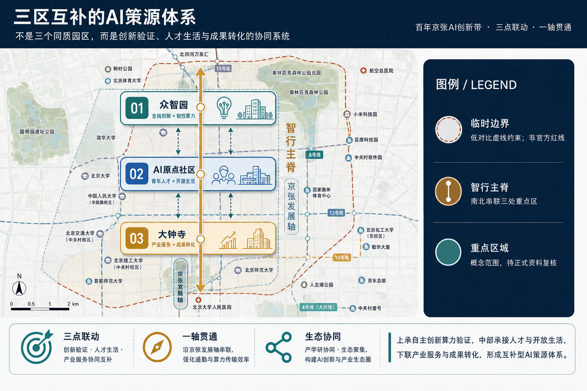
赛事必需图03｜三处重点区域与待核条件。
1.4 众智园AI 自主创新加速区
重点区一
众智园AI 自主创新加速区
【 开放共赢，创新发展 】
图 B｜众智园AI 自主创新加速区
众智园承担策源链条中「技术突破」的一环，定位为AI 自主创新加速区：
- 全栈自主创新：承接 AI 全栈自主创新体系，覆盖推理与训练中心、芯片测试工坊、模型验证场与安全治理实验室，攻坚关键核心技术（对应「技术发明的第一创造者」）； - 算力与治理话语权：作为区域算力主中心与标准治理的承接方，反向支撑原点社区的要素策源； - 开放共赢：以「开放共赢、创新发展」为主题，鼓励开源开放、合作共享，把自主创新置于全球协作的开放格局之中。
1.5 北京AI 原点社区
重点区二
北京AI 原点社区
【 强化优势，年轻图强 】
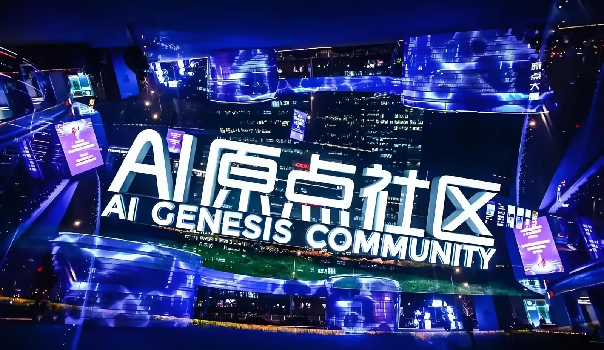
图 C｜北京AI 原点社区
北京AI 原点社区是「世界级AI策源地」的场景核心，承担策源链条中「思想与标准」的一环：
- 要素策源与标准输出：以人才、企业、开源、数据、标准五要素的汇聚与标准输出为核心，承载开源发布厅、成果转化街、数据要素会客厅、标准评测与人才社区； - 强化优势：依托高校院所与青年人才集聚的既成优势，把「人才密度」转化为「策源浓度」； - 年轻图强：以「强化优势、年轻图强」为主题，把年轻人才视为策源的第一资源，让 AI 成为「年轻的事业、年轻人的事业」的落地舞台（详细空间设计见 4.4「AI 原点社区为策源地」）。
1.6 大钟寺AI 产业聚集区
重点区三
大钟寺AI 产业聚集区
【 要素集聚，生态协同 】
图 D｜大钟寺AI 产业聚集区
大钟寺承担策源链条中「产业落地与生态聚集」的一环，定位为AI 产业聚集区：
- 智能原生新业态：承载企业服务站、产品发布与轻量边缘节点，把策源成果转化为可落地、可扩散的产业场景； - 南部低时延响应：调用策源与算力服务，承担南部低时延响应与灾备缓存，补强区域协同的末端响应能力； - 要素集聚、生态协同：以「要素集聚、生态协同」为主题，培育各类主体共生共荣的健康生态，让 AI 赋能千行百业。
4.4.4 策略的空间演绎：三区两翼落位与韧性空间组织
三条核心策略不是停留在原则层面，而是落到“三区两翼”的空间分工与 AI 原点社区的具体空间组织上。本节把策源地的场景落位、总平面、三层韧性、水公园关系、流线、建筑形态、比例与图纸作为三条策略的空间演绎，逐层展开。
场景落位：AI原点社区为策源地，三区两翼韧性分工
依据任务书对“三区两翼”的角色指派，本方案把 AI 原点社区作为“世界级 AI 创新生态·策源地”，承担六要素汇聚与标准输出；众智园承担 AI 全栈自主创新与算力/治理话语权；大钟寺承担智能原生新业态与南部低时延响应。这一分工直接纠正了“把推理中心当作原点主场景”的错位：策源地是“产生思想、企业与标准”的地方，推理与训练中心是服务它的基础设施，不应顶替它的位置。
这一落位只是城市设计阶段的场景选择，不是正式地块选址。取得官方边界、地形、电力、市政、权属和消防资料后，应在 AI 原点社区内部重新比选具体地块。
| 重点区域 | 韧性角色 | 主要空间载体 | 与策源地关系 |
|---|---|---|---|
| 众智园 | AI全栈自主创新 + 算力与治理话语权 | 推理与训练中心、芯片测试工坊、模型验证场、安全治理实验室 | 承接算力主中心与标准治理，反向支撑原点策源 |
| AI原点社区 | 世界级创新生态·策源地（要素策源 + 制度韧性） | 开源发布厅、成果转化街、数据要素会客厅、标准评测、人才社区、端侧算力驿站 | 场景核心，六要素汇聚与标准输出 |
| 大钟寺 | 智能原生新业态（场景韧性 + 边缘响应） | 企业服务站、产品发布、轻量边缘节点 | 调用策源与算力服务，承担南部低时延与灾备缓存 |
外围训练中心承担高能耗、长时间的大规模训练；众智园承担全栈推理、芯片测试与安全治理；AI 原点社区承担要素策源、标准制定与可信数据流通；三区与交通、机器人、公共空间节点共同构成“外围训练—众智园全栈推理与验证—原点要素策源与标准输出—三区边缘响应”的完整链条。
图中道路、轨道、水系和绿地由 AI map/osm-data.js 的本地 OSM 缓存统一投影绘制；总体设计范围及三处重点区沿用 map-three-layers.html 的临时推定坐标，仅用于竞赛阶段空间关系识别。众智园承担全栈创新和算力治理；AI 原点社区承担生态策源和标准输出；大钟寺承担新业态转化和边缘响应。三者由京张廊道串联，并与外围训练资源、城市场景边缘网络构成“三区两翼”韧性协同体系。
总平面设计：一庭、两环、三界面、六组团
AI 原点社区采用 “一庭、两环、三界面、六组团” 的空间结构，对应六要素的空间载体。工作单元尺度、实际用地范围和建设规模须以正式规划条件为准。
一庭：要素共享庭院
建筑围合形成开放的中央共享庭院，作为策源地的公共客厅：
- 地面嵌入实时“生态韧性”信息带，展示人才流动、企业生长、开源活跃度、数据合规流通、标准迭代与算力利用率的聚合健康度； - 设置可预约的成果发布台、开源演示区、场景验证场和小型发布场； - 通过半室外连廊连接开源发布厅、标准评测工坊、数据要素会客厅和企业服务空间； - 设置遮荫、雨水花园、可移动座椅和全天候工作界面； - 夜间只显示经过脱敏的公共运行数据。
两环：公共创新环与安全运维环
公共创新环 面向城市道路、高校和绿地，串联公众展厅、要素服务大厅、开源与共享会议、成果演示、人才服务和屋顶花园。公众和企业可以沿环线完成“了解生态—提出需求—接入要素—观看结果”的全过程。
安全运维环 位于数据与标准安全区外围或后场，独立组织大型设备运输、备件、消防救援、供配电维护和冷却系统检修。运维环不与公共步行流线交叉，并通过绿化、建筑体量和声屏障降低对公共空间及社区的影响。
三界面
1. 城市服务界面：面向主要道路和公共交通，设置入口广场、要素服务大厅、企业服务和展示发布空间； 2. 校园创新界面：面向高校和科研机构，设置开源社区、联合研究室、标准评测工坊和可信数据沙箱； 3. 公园生态界面：面向绿地布置低密度公共功能、雨水花园、休憩平台和能源科普设施，避免设备卸货、排热和高噪声设施直接朝向公园。
六组团
| 组团 | 对应要素 | 核心内容 | 空间特征 |
|---|---|---|---|
| 人才组团 | 人才 | 联合研究室、国际人才社区、青年公寓、夜间协作空间 | 邻近校园界面，混合居住—研发—社交 |
| 企业组团 | 企业 | 孵化、加速、独角兽楼、投融资与法务服务 | 沿街连续界面，可拆分可重组 |
| 开源组团 | 开源 | 开源发布厅、公共代码墙、贡献者空间 | 首层开放，连接庭院与城市入口 |
| 数据组团 | 数据 | 可信数据沙箱、数据要素会客厅、合规审计 | 分级授权，关键数据位于安全标高以上 |
| 标准组团 | 标准 | 评测实验室、安全治理、红队测试、标准制定 | 可参观、可预约、可监管的治理界面 |
| 算力组团 | 算力（底座） | 端侧算力驿站、边缘节点、模型验证工坊、就近轻算中心 | 作为底座型使能要素，与公共服务结合、可扩容可重构 |
六个组团通过共享庭院和连廊组成可分期生长的建筑群。人才、企业、开源组团形成公共活力；数据、标准、算力组团构成受控的治理与支撑核心——其中算力组团作为底座型使能要素，为前五类组团提供就近轻算、边缘缓存与验证能力，是策源地的公共基础设施面：它不占据视觉与功能上的主导体量，但在韧性与能源协同上是承重的关键一环。
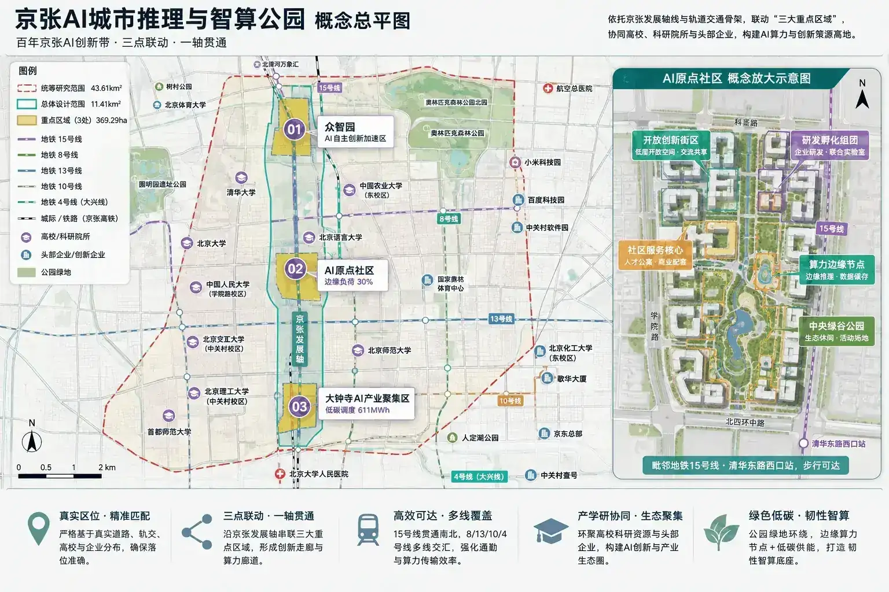
AI原点社区韧性策源地概念总平面（全域落图＋重点区放大）
总平面采用“全域落图＋重点区放大”的双尺度结构：左图以 AI Map 数据底稿表达众智园、AI 原点社区和大钟寺在京张发展轴、道路、轨道、水系和绿地网络中的空间关系；右图通过 AI 辅助生成鸟瞰式概念方案，表现开放创新街区、研发孵化组团、社区服务核心、算力边缘节点和中央绿谷公园。上述右图要素在本框架中分别对应人才/企业/开源组团、企业孵化组团、人才社区与要素服务核心、算力组团（底座型使能要素）、以及要素共享庭院与公园生态界面。生成图用于竞赛场景和空间意向表达，不作为测绘底图、权属核查、正式选址或工程放线依据。
三层韧性的空间落实
要素韧性：冗余与可替代
- 人才：高校—园区—企业间建立流动与互认通道，任何单一高校或企业的人才波动不构成生态断点；设置可灵活转换的联合研究室与短期工作单元； - 企业：孵化—加速—独角兽的梯次与冗余并存，避免对单一龙头企业或单一赛道的过度依赖；空间可拆分、可重组，支撑企业生长与退出； - 开源：代码、模型与社区去中心化分布，不依赖单一托管平台；公共代码墙与贡献者空间可随时重配； - 数据：关键数据分区分级、多副本、可审计；可信沙箱支持跨主体合规协作； - 标准：评测与治理方法开放参与、版本化迭代，避免标准被单一机构垄断； - 算力：作为底座型要素，以“外围训练—众智园全栈推理—原点就近轻算—大钟寺边缘”三级算力网实现冗余供给；原点本地保留就近轻算、边缘缓存与验证工坊，任何一级故障时任务可跨级调度，形成“就近轻算 + 区域重算 + 跨级调度”的可替代供给。
空间韧性：抗灾与可重构
AI 原点社区采用“公共空间在下、协作空间居中、关键数据与标准上置、能源系统上屋面”的复合剖面，避免将关键数据、标准与治理功能放入易受淹地下空间。
- 关键数据沙箱、标准评测与治理控制设置在经防洪、结构和消防复核的地面以上楼层，采用分舱、分区和模块化设计； - 地下空间原则上只布置停车和非关键辅助用房，不布置核心数据、统一治理控制、关键网络节点和唯一供电控制系统； - 建筑入口、坡道、通风口和管线口设置防倒灌；车库坡道与管线入口分区隔离； - 组团采用可分期、可拆分结构，允许在不中断核心功能的前提下局部重构或更新。
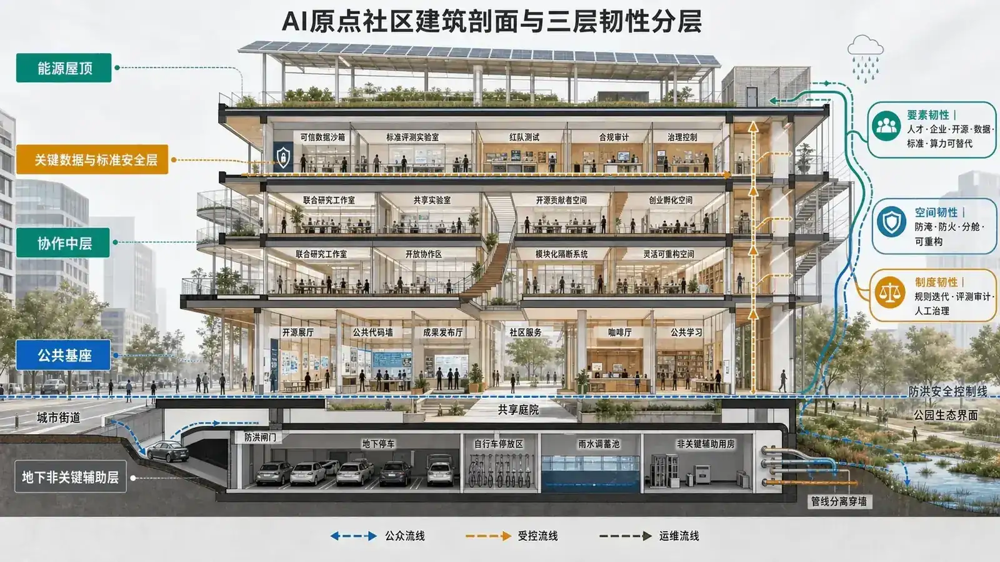
AI原点社区建筑剖面与三层韧性分层 剖面以“公共基座—协作中层—关键数据与标准安全层—能源屋顶”为垂直结构：公共空间连接城市街道、共享庭院与公园生态界面；协作空间支持联合研究、开源贡献和企业孵化的灵活重组；关键数据、标准评测、红队测试与合规审计设置于防洪安全控制线以上；地下仅保留停车、雨水调蓄和非关键辅助功能。要素韧性、空间韧性与制度韧性贯穿建筑全层，并通过公众、受控与运维三套流线分别组织。
制度韧性：自愈与话语权
- 多智能体协作治理：城市智能体辅助识别慢行断点、公共空间热力、设施维护、企业服务需求与活动安全风险，但不替代规划审批、不输出未经授权的个人画像、不声称获得官方实施承诺； - 标准与治理输出：将评测、红队测试、安全分级与合规审计转译为可参观、可预约、可监管的公开界面，使“标准如何被制定、模型如何被治理”成为策源地可感知、可输出的核心能力； - 开源与规则迭代：开源社区治理、数据流通规则与算法备案指引开放参与、版本化、可审计，形成可被其他城市复用的制度产品。
与水系、公园和城市环境的设计关系
水不是冷却捷径，而是安全边界
众智园临近清河和小月河，大钟寺临近转河，AI 原点社区仍需核查城市积水和地下水。策源场景采用“避让优先、关键层抬升、分区防淹、监测联动、跨节点切换”的物理防淹原则，并由场景四的水安全“四预”数字孪生提供动态预报—预警—预演—预案支撑，二者构成“静态设防 + 动态预演”的双层水安全体系：
- 关键数据、标准与治理功能位于经复核的安全标高以上； - 地下空间不承担唯一关键功能； - 建筑入口、坡道、通风口和管线口设置防倒灌； - 冷却水、消防水、雨水和污水分系统管理； - 关键区域设置分区渗漏检测和自动关断； - 雨水花园承担日常调蓄，但不替代关键设施自身防护； - 依托场景四的多智能体“四预”，在暴雨与超标准洪水前提前预演淹没范围并生成预案（能力背书见场景四，不构成实施承诺）。
公园不是机房后场，而是公共创新界面
靠近公园的一侧布置展厅、共享庭院、咖啡、会议和科普步道；设备卸货、备用能源、排热和高噪声设施布置在城市服务后场。建筑首层保持局部通透和可穿行，避免用大尺度围墙切断公共空间。
中央公园带：从景观到生态韧性底盘
高铁入地释放出的中央公园带是 AI 原点社区最具特色的公共空间，也是智慧双碳平台的硬件基础。公园内的每一处设计都同时承担生态功能与数据采集功能：
- 植物配置作为碳汇硬件：优先选用高碳汇、低养护、适应本地气候的乡土树种，采用乔—灌—草复层结构，提高单位面积叶面积指数与固碳效率；通过植被健康监测，动态调整灌溉与修剪策略，避免“为绿而绿”的高碳维护。 - 水体设计作为气候韧性硬件：保留和扩大雨水湿地、生态沟渠与滞留池，承担暴雨调蓄、水质净化、蒸发降温三重功能；湿地植物与微生物群落同时成为碳汇与甲烷排放监测对象，纳入双碳核算。 - 透水铺装与海绵设施作为水碳协同硬件：透水铺装、下沉绿地、生态树池增加雨水下渗，减少地表径流和热岛效应；其渗透速率与基质含水量纳入在线监测，为“小雨不积水、大雨不内涝、水体有韧性”提供数据支撑。 - 慢行网络作为行为减碳硬件：公园内的步行与骑行路径连接校园、企业与公共交通，通过客流统计与出行方式识别，量化“以慢行替代机动车”的减碳贡献。
通过智慧双碳平台，这些“硬件”被连续监测、统一核算、动态优化，使中央公园带从静态景观转化为主动参与城市韧性运营的生态基础设施。
人流、物流、数据流与消防流线
| 流线 | 入口与路径 | 设计要求 |
|---|---|---|
| 公众与企业人流 | 城市入口—要素服务大厅—共享庭院—展厅—公园 | 开放连续、无障碍、不过核心安全区 |
| 科研人员流线 | 校园入口—身份核验—联合研究室/验证工坊—受控数据区 | 分级授权，可预约进入，不与设备物流交叉 |
| 设备与运维物流 | 后场入口—卸货平台—设备电梯—算力与能源组团 | 独立封闭，可供大型设备更换和全天维护 |
| 消防与应急流线 | 城市道路—环形消防通道—救援场地—各防火分区 | 全时畅通，不与停车、活动和临时展陈冲突 |
公共展示数据、科研数据、企业数据、城市敏感数据和治理控制数据分别进入不同网络和安全区域。公众展厅只能调用脱敏、延迟或模拟数据；数据、标准与治理控制网络与公共网络隔离。
建筑形态与城市风貌
AI 原点社区采用低中层、组团式和可分期生长的建筑形态：
- 人才、企业、开源组团沿街形成连续、活跃的城市界面； - 数据、标准组团位于组团内部，以遮阳、穿孔构件和维护廊道组织技术形象； - 建筑高度由周边校园、社区和城市界面共同控制，概念阶段不预设法定高度； - 屋顶能源与光伏设备纳入第五立面设计； - 夜景只表达公共入口、共享庭院和运行状态，不形成大面积媒体立面； - 公共艺术结合京张铁路工业记忆、计算发展史和中关村创新文化。
空间模块与参考比例
以下比例为城市设计阶段的概念优先级参考，用于指导六要素空间的相对关系，而非最终法定指标。具体数值应在取得正式控规条件、产业需求测算和市政容量评估后校正。
| 功能类别 | 参考优先级/比例区间 | 设计意图 |
|---|---|---|
| 人才、企业、开源组团 | 40%—50% | 形成策源地的要素汇聚与公共活力 |
| 数据、标准、治理组团 | 20%—25% | 承载可信数据流通与治理话语权输出 |
| 算力、边缘与验证（底座） | 15%—20% | 就近轻算、边缘缓存、验证工坊与能源协同，作为底座型使能要素 |
| 交通、物流与安全辅助 | 10%—15% | 保障设备运输、消防救援和日常运维 |
将主体空间保留给人才、企业与开源，使“策源地”而非“机房”占据主导；同时将算力从“被压缩的配角”调整为“底座型使能要素”——其在原地块的体量用于就近轻算、边缘缓存与验证工坊，并承担能源—算力—城市安全协同的物理接口。工作单元尺度与最终用地边界需依据官方重点区范围和控规条件确定。
设计图纸与模拟成果
后续成果应形成至少七张设计图，而不只是系统框图：
1. 场景总平面图：表达一庭、两环、三界面和六组团； 2. 首层开放空间图：表达公众、企业、科研和公园之间的联系； 3. 建筑剖面图：表达公共基座、协作中层、关键数据与标准安全层、能源屋顶和防淹关系； 4. 四流线图：表达人流、物流、数据流和消防流线； 5. 一日场景图：表达科研、企业、公众和城市治理如何使用策源地； 6. 冲击切换模拟图：表达人才/企业/算力/供给波动下的要素重组与空间响应； 7. 中央公园带智慧双碳平台图：表达感知节点、碳汇斑块、水体与透水铺装布局及双碳驾驶舱界面。
数字沙盘应允许切换“常态—关注态—限载态—应急态—恢复态”，显示不同状态下开放区域、关闭区域、要素任务位置、供电路径、积水风险和人员疏散变化。
AI 创新生态、人才画像与 AI+ 场景
本章集中呈现公共服务、存量更新、智慧交通、柔性智算和铁路文脉中的AI+场景，并以服务对象、空间载体、数据边界、人工复核、失败退出和运营主体构成完整服务单元。产业测试、人物画像、地标、文化和长期运营均保持概念建议属性。标准 深度
4.2.7 三类 AI+ 场景如何发生
存量资产更新云小程序是上述闭环的轻量化用户界面。以下三类场景把“空间资产识别 → AI 辅助决策 → 精准空间激活 → 智能运营调度 → 反馈优化”转化为可感知的用户体验。
场景一：发现资产——资源广场与资源地图
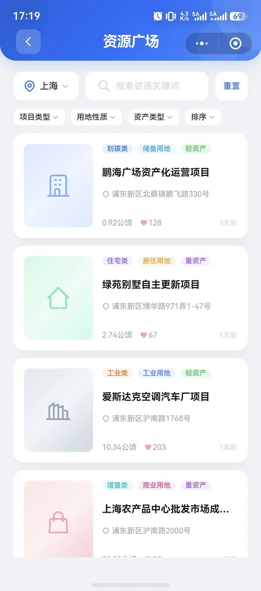
资源广场
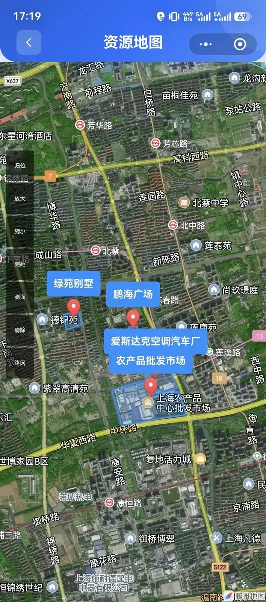
资源地图
服务对象：地方政府、国资平台、空间运营商、创新企业、社群主理人、市民。
空间落位：覆盖京张廊道沿线低效用地、桥下空间、闲置建筑、边角绿地等可盘活资产。
智慧体验： 1. 资源广场浏览：首页进入资源广场，可按“全部/热点资产/轻资产/重资产”筛选，也可按空间类型与运营模式快速定位； 2. 多维标签检索：支持按城市、土地类型、标签、排序方式组合检索，AI 基于资产特征与公开项目画像做非识别性规则匹配，推荐潜在匹配资产（不采集个人历史行为偏好，治理口径见附录E）； 3. 资源地图定位：切换到资源地图，在真实底图上快速查看资产分布、权属边界与周边配套，降低实地踏勘成本； 4. 已成交案例参考：通过“资源专栏”展示历史成交案例，为运营方提供可借鉴的业态与收益模式。
数据与隐私边界：公开空间资产信息经脱敏处理；权属与财务敏感信息仅对认证运营主体开放。
运营主体：国资平台 + 策源地运营方 + 第三方空间运营商。
场景二：申请运营——资产详情与“我来运营”
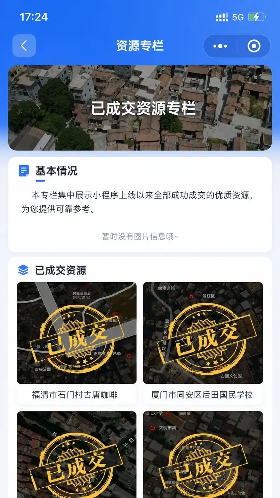
资源专栏
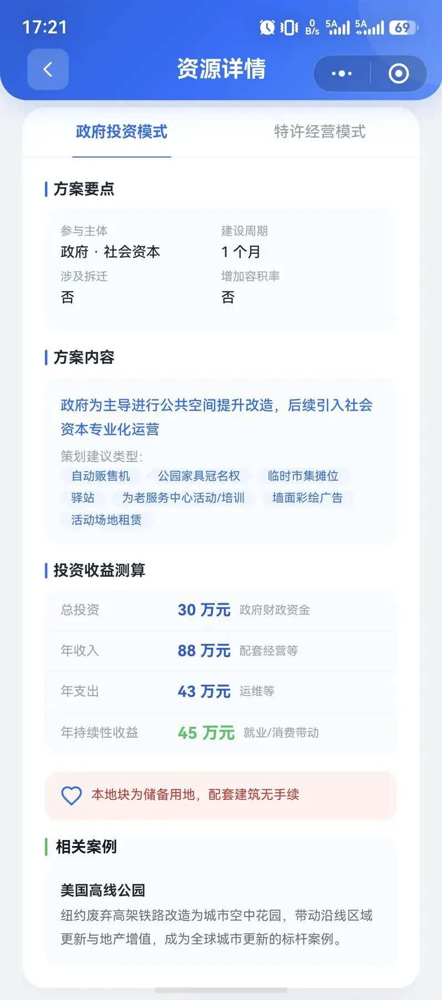
资源详情
服务对象：意向运营商、社群主理人、创新企业、文创团队。
空间落位：京张廊道内任一上线资产。
智慧体验： 1. 资产详情卡：查看空间现状信息、权属主体、用地面积、建筑面积、租售意向、现状照片、经营出让条件、区位及项目概况、地块详情； 2. AI 适配评估：系统根据资产特征与运营方提交的项目计划，自动评估功能混合可行性、分时利用方案与收益测算； 3. 一键申请运营：运营方点击“我来运营（快速申请）”提交意向，平台自动流转至国资平台/产权方审核； 4. 快速咨询与对接：支持“快速咨询”入口，运营方可就政策、产权、改造要求等问题与平台客服或产权方直接沟通。
数据与隐私边界：运营方商业计划与联系方式仅对授权审核人员可见；公开信息不含个人隐私。
运营主体：国资平台 + 产权方 + 策源地运营方。
场景三：双向匹配——项目需求发布、论坛与政策资讯
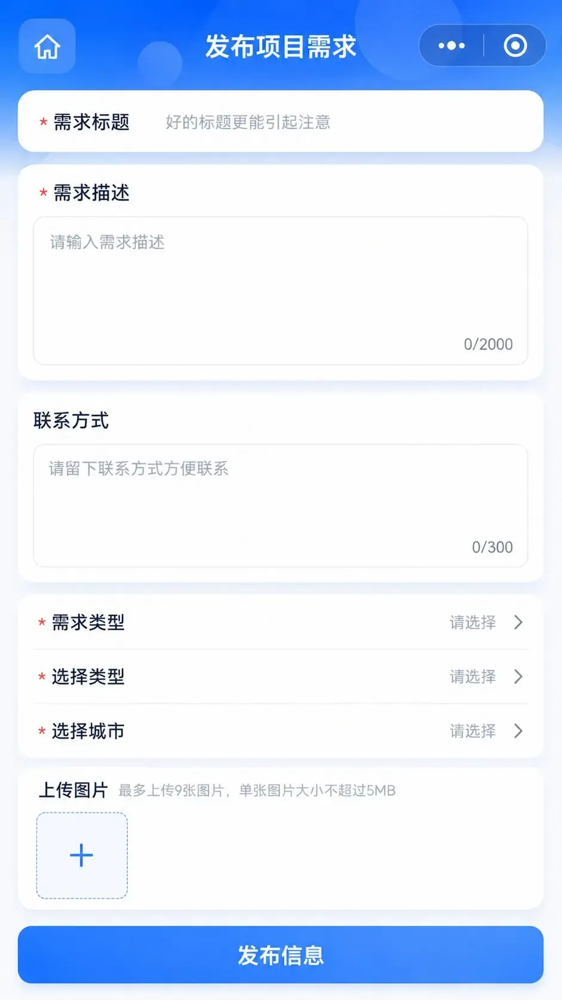
需求发布
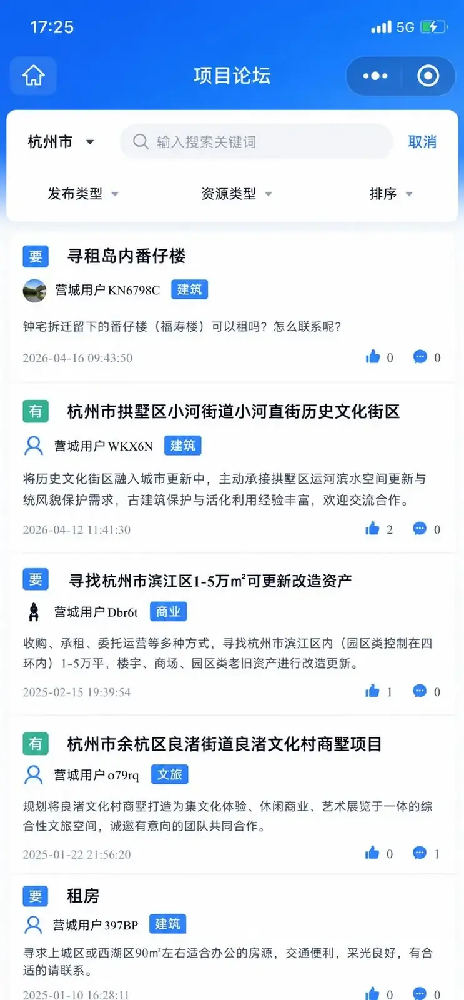
论坛讨论
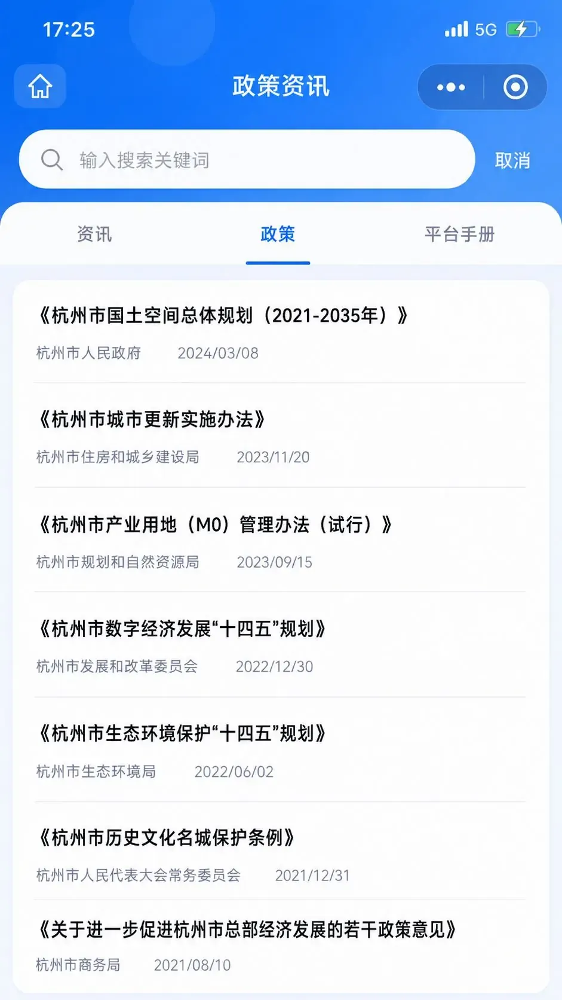
政策咨询
服务对象：周边居民、创新人才、社群主理人、设计师、城市更新实施主体。
空间落位：线上平台 + 针灸式微更新点位 + 社群空间。
智慧体验： 1. 需求发布：用户点击底部“发需求”按钮，填写需求标题、需求描述、联系方式、需求类型、选择类型、选择城市并上传现场照片，发布寻租、寻址、改造、合作等需求； 2. 需求广场匹配：系统把市民/企业的需求与平台已上线资产进行 AI 匹配，也向产权方反向推送潜在运营机会； 3. 论坛讨论：在论坛中围绕具体资产或更新议题展开讨论，居民、设计师、运营商可共建方案、点赞评论，形成透明共治氛围； 4. 政策资讯查询：在政策资讯板块集中展示公园配套服务、存量资产盘活、城市更新等相关政策，降低运营方与市民的信息门槛。
数据与隐私边界：联系方式默认不公开，仅在用户主动、明确、可撤回同意后向指定对象披露；支持随时修改、删除和申诉。论坛内容经自动提示与人工复核后展示。
运营主体：社区居委会 + 城市更新实施主体 + 小程序运营方。
4.3.3 五类 AI+ 交通场景
五个 AI+ 场景把"AI 原生交通"落到可体验、可运营的实处:每个场景对应一个真实交通问题——人才流动、末端配送、公交准时、出行服务、韧性保障——并给出"空间—服务—治理"的完整闭环,服务对象、空间落位、系统架构、数据治理、运营主体与退出机制逐一说清。
五个 AI+ 场景不是彼此孤立的设备,而是由同一套智慧交通管理平台统一运行——先呈现平台原型与七大模块,再逐一展开五个场景。
平台把五类场景的调度与治理收拢到一个入口,遵循"治理先于技术装置"原则:AI 只输出建议,疏散、封路、调度由人确认;数据最小化、脱敏、留痕可追溯。平台不是独立产品,而是城市设计方案的运行支撑层。
4.3.3.1 平台原型
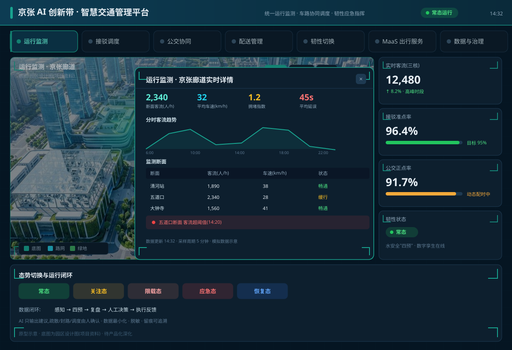
智慧交通管理平台 dashboard 原型:顶部模块切换 + 园区底图 + 运行监测详情弹窗 + KPI + 五态切换(原型示意,待产品化深化)
4.3.3.2 七大功能模块与五场景映射
| 模块 | 对应 | 主要功能 |
|---|---|---|
| 运行监测 | 全域态势 | 客流/路况/水位实时感知,断面指标与告警 |
| 接驳调度 | 场景一 接驳环 | 无人接驳预约、调度、到站预测 |
| 公交协同 | 场景三 精准公交 | 车路协同动态配时、公交优先 |
| 配送管理 | 场景二 无人配送 | 配送订单、航路与停靠点调度 |
| 韧性切换 | 场景五 韧性切换 | 常态→关注→限载→应急→恢复五态切换 |
| MaaS 出行服务 | 场景四 MaaS | 行程规划、换乘推荐、碳积分 |
| 数据与治理 | 跨场景 | 数据分级、脱敏、审计留痕、人工复核 |
以下场景以公共交通协同、慢行接驳、MaaS 与数字孪生作为概念方法，不构成对任何主体承建或实施的承诺。
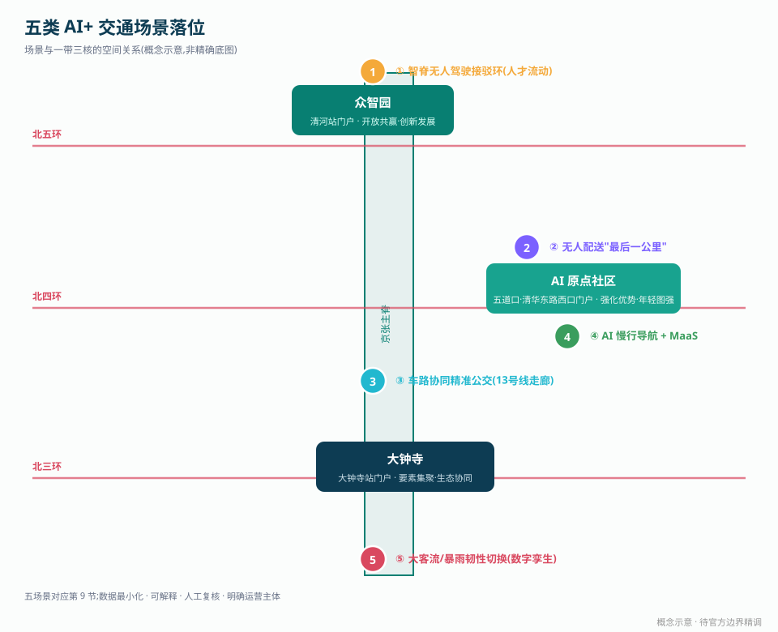
五类 AI+ 交通场景与一带三核的空间关系(概念示意,待官方边界精调)
场景一:智脊公共接驳环(人才流动)
定位与对象:三核之间的骨干接驳,服务通勤者、访客与清河站高铁到发旅客,缩短人才在三核之间的流动时耗。空间落位:清河站—大钟寺站沿线,低速无人接驳(氢能/电动小巴,设计时速 20—40 公里),站点按 300—500 米概念间距设置,与主脊接驳带及三核门户结合。
系统架构(端—边—云)
- 端:车载激光雷达/毫米波雷达/摄像头,路侧 RSU 与全息路口感知; - 边:门户与接驳站点的边缘计算单元,承担低时延避障与停靠决策; - 云:接驳调度平台,预约、客流预测、与轨道时刻表联动; - 数据闭环:感知 → 定位 → 路径规划 → 控制 → 到站反馈 → 调度优化。
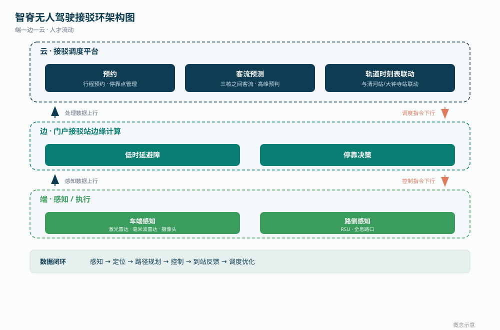
场景一 系统架构:端(车端/路侧感知)— 边(门户边缘算力)— 云(接驳调度) 服务流程:预约/定点停靠 → 车路协同感知 → 三核门户换乘 → 到站信息回传 → 调度优化。
数据与治理:客流为公开聚合、车辆状态为授权、个人行程为受限;仅用脱敏客流与调度数据,不采集个人轨迹;传感器失效时降速 → 靠边停车 → 远程接管;运营线路与停靠点由交通部门确认,全程留痕可追溯。
人工复核与运营:运营主体为策源地运营方与公共交通运营方；调度指令须人工确认，并保留常规公交接驳作为替代方案。
指标与验证:接驳响应时延、三核之间通勤时耗、到站准点率;先在封闭/半开放路段测试,达安全阈值再开放。
实施与退出:成本等级中;试点为清河站—大钟寺站单线;安全不达标即停,退回常规接驳。
差异点(亮点):贴着京张主脊运行、以轨道门户为端，服务三核之间的人才流动与日常通勤。
场景二:无人配送"最后一公里"(算力就近 + 生活)
定位与对象:园区/社区/高校的末端配送,服务园区企业、社区居民与高校师生,把"算力就近 + 生活"落到最后一公里。空间落位:众智园与原点社区设配送停靠点与末端仓储,结合低空无人机起降平台。
系统架构(端—边—云)
- 端:低速地面无人车 + 低空即时配送无人机; - 边:末端仓储的分拨与调度边缘节点; - 云:配送调度平台,订单追踪与航路管理; - 数据闭环:分拨 → 配送 → 交接 → 签收与异常 → 调度复盘。
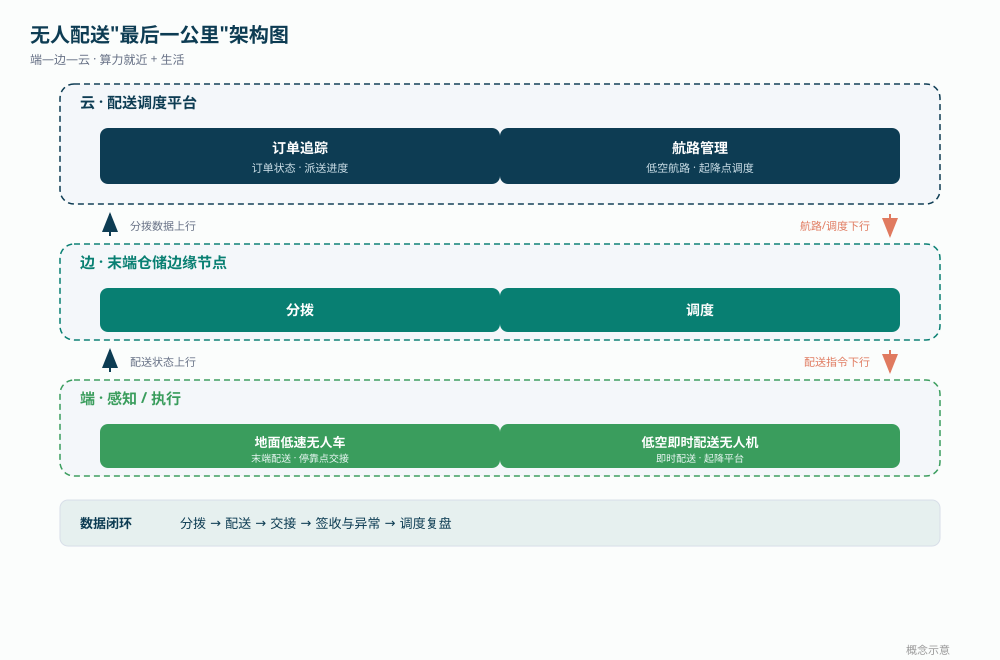
场景二 系统架构:端(无人车/无人机)— 边(末端仓储边缘)— 云(配送调度) 服务流程:分拨 → 地面无人车/无人机配送 → 停靠点交接 → 签收与异常上报 → 调度复盘。
数据与治理:订单与派送状态最小化,收件人信息最小化;禁飞区、航道与起降点经空域与安全管理确认;物流流线与步行分时或分断面,独立于疏散通道。
人工复核与运营:运营主体为策源地运营方 + 物流运营方;配送异常由人工兜底;非数字替代为传统快递 + 自提柜。
指标与验证:配送响应时延、异常兜底率、末端交接准确率。
实施与退出:成本等级轻(复用既有仓储与道路);试点为众智园单园区;安全或投诉不达标即缩范围。
差异点(亮点):复用轨道/道路冗余运力,配送与步行分时分断面,服务 AI 人才的高频小件——把低空配送落到"算力就近 + 生活"的最后一公里。
场景三:车路协同精准公交
定位与对象:13 号线走廊及跨廊道公交的准时化,服务公交乘客,支撑东西缝合。空间落位:沿 13 号线走廊对传统公交做"云—边—车"一体化改造,路口全息感知布点。
系统架构(端—边—云)
- 端(路侧):RSU、毫米波雷达、全息路口、信号采集器; - 边:路口边缘计算,动态信号配时; - 云:公交调度中心,班次密度与路线优化; - 数据闭环:路侧感知 → 动态配时 → 公交优先 → 到站回传 → 调度优化。
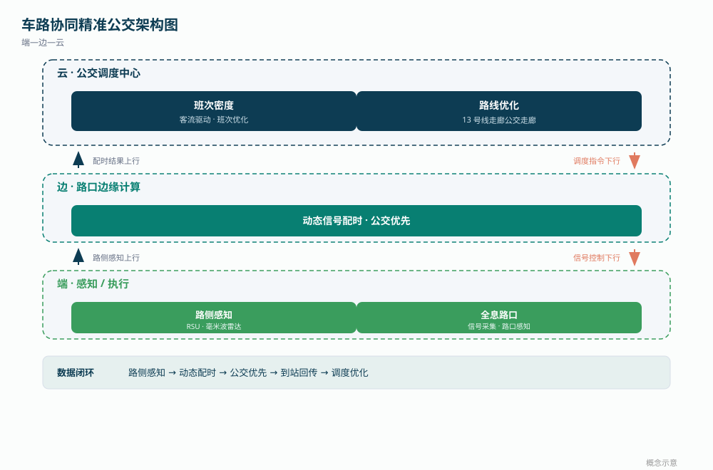
场景三 系统架构:端(路侧感知)— 边(路口边缘算力)— 云(公交调度中心) 服务流程:路侧感知 → 动态配时 → 公交优先 → 到站信息回传 → 调度优化。
数据与治理:仅聚合车辆位置、速度、客流数据,不采集个人身份;信号控制与优先策略由交通管理部门确认,保留人工接管。
人工复核与运营:运营主体为交通运行部门 + 策源地运营方;信号策略人工确认;非数字替代为固定配时 + 人工调度。
指标与验证:公交正点到站率、信号配时自适应率、高峰准点提升幅度。
实施与退出:成本等级中(路侧改造);试点为 13 号线走廊单条公交走廊;效果不达标即回退固定配时。
差异点(亮点):精准公交服务 13 号线走廊的东西缝合——把公交准时化落到跨廊道联系,而非单一枢纽的集散。
场景四:AI 慢行导航与 MaaS 一体化出行
定位与对象:一站式的慢行 + 轨道 + 接驳出行,服务居民、师生、创业者与访客。空间落位:以京张活力带为界面,用低侵入传感与可解释导视识别慢行断点、拥挤节点与无障碍需求。
系统架构(端—边—云)
- 端:低侵入人流传感、可解释导视屏; - 边:活力带边缘节点,慢行断点与拥挤识别; - 云:MaaS 平台,行程规划、换乘推荐、碳积分; - 数据闭环:行程规划 → 换乘推荐 → 慢行导航 → 碳积分反馈 → 断点更新。
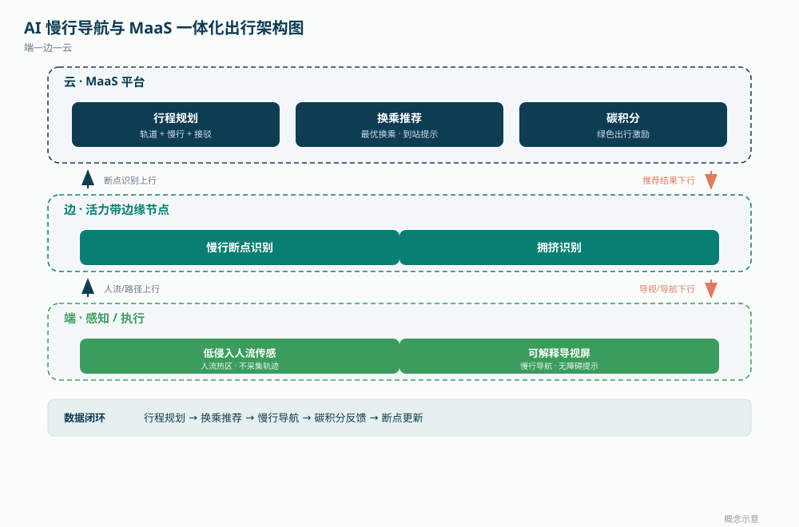
场景四 系统架构:端(人流传感/导视)— 边(活力带边缘)— 云(MaaS 平台) 服务流程:行程规划(轨道 + 慢行 + 接驳 + 共享单车)→ 换乘推荐 → 慢行导航 → 碳积分与出行反馈。
数据与治理:仅聚合人流与路径数据,不做个人画像、不做商业推荐;导视与推荐内容经脱敏与人工审核;无障碍结论由专业复核。
人工复核与运营:运营主体为策源地运营方 + 出行服务平台;导视与推荐脱敏审核;非数字替代为静态标识 + 人工问询。
指标与验证:5/10/15 分钟慢行可达性、慢行断点识别数、换乘推荐采纳率。
实施与退出:成本等级轻;试点为京张主脊单段;隐私或误导向题即下架推荐。
差异点(亮点):MaaS 服务慢行主脊与三核接驳,核心是"识别慢行断点"而非单纯推荐路线。
场景五:大客流与暴雨下的韧性切换
定位与对象:数字孪生支撑的交通应急,服务有权管理人员(交通、应急、水务、园区运营方),公众经脱敏展示感知。空间落位:数字孪生底座对全球 AI 活动周大客流与暴雨内涝做"事前推演—事中调度—事后复盘",与 4.4 节水安全"四预"衔接。
系统架构(端—边—云)
- 端:天空地水工感知网(雨量、水位、客流、路况); - 边:众智园城市推理中心,多智能体"四预"闭环; - 云:城市运行、交通、应急联动平台; - 数据闭环:感知 → 四预 → 复盘 → 人工决策 → 执行反馈。
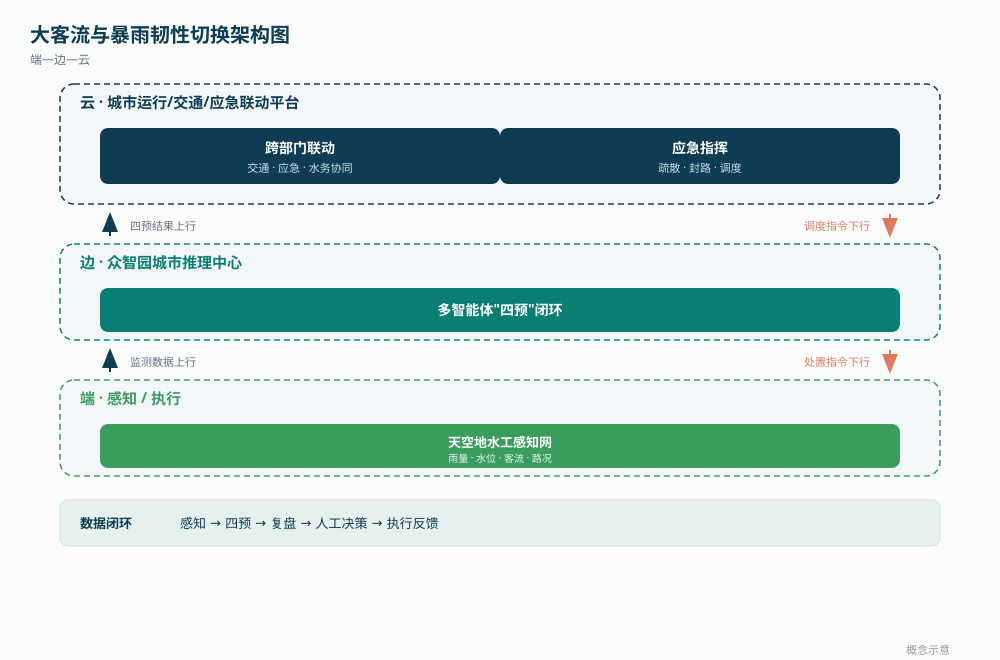
场景五 系统架构:端(天空地水工感知)— 边(城市推理中心"— 四预)— 云(联动平台) 切换逻辑:关注态(客流/水位偏离)→ 限载态(非关键活动降级、接驳加密)→ 应急态(隔离路段、跨节点接管、疏散通道启用)→ 恢复态(检查与分阶段恢复)。
数据与治理:仅处理结构化监测与脱敏指标,不采集个人轨迹;所有疏散、封路、调度决定由人确认,AI 只输出建议。
人工复核与运营:运营主体为城市运行部门 + 众智园城市推理中心 + 数字孪生技术支撑(概念阶段为能力参考);非数字替代为预案 + 人工指挥。
指标与验证:切换时间、预案提前量、跨节点接管成功率(对标数字孪生推演)。
实施与退出:成本等级中(复用四预能力);试点为全球 AI 活动周单场;误报/漏报不达标即调整模型。
差异点(亮点):把韧性切换扩展到暴雨内涝,与京张水系(清河/小月河/转河)的水安全四预合流。
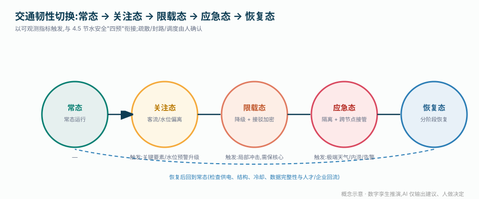
交通韧性切换五态(常态→关注态→限载态→应急态→恢复态,数字孪生推演)
智慧交通与数字孪生水利仅作为方法框架，本方案不引用未经核验的案例成效数据，也不构成对任何主体承建或实施的承诺。
4.4.5 三类 AI+ 场景：三类用户旅程
以下三个场景面向策源地最核心的三类用户——科研团队、初创企业与市民，分别展示要素如何被“一站式”获取、韧性如何被“诊断”、策源地如何被“感知”。
场景一：科研团队“一站式接入策源生态”
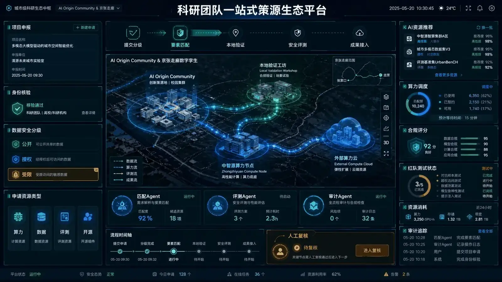
科研团队一站式策源生态平台数字化系统
服务对象：高校与科研机构团队（师生、博士后、独立研究者），从校园创新界面进入。
空间路径：校园创新界面 → 身份核验 → 要素共享庭院（成果提交台）→ 本地验证工坊 → 结果回传。
流程： 1. 提交与分级：团队提交成果摘要、数据安全等级（公开/授权/受限）与所需要素（算力、数据、评测、开源托管）； 2. 要素匹配：系统按“最小要素、就近算力、合规优先”原则给出要素组合建议——小规模验证留在本地验证工坊，大规模训练与集中推理调度至众智园或外围； 3. 安全评测：结果回传本地完成低时延测试，经标准组团评测实验室的红队测试与安全分级后，决定接入企业、开源社区还是城市应用； 4. 留痕与复盘：全程可审计留痕，团队可回看资源消耗与合规结论。
数据与隐私边界：仅处理成果元数据与团队主动提交的安全等级；校园数据与科研成果需授权；不采集个人研究行为轨迹。
人工复核：安全分级与上线结论由安全人员与团队共同确认，系统只给建议。
运营主体：策源地运营方 + 标准评测实验室。
场景二：初创企业“生态韧性门诊”
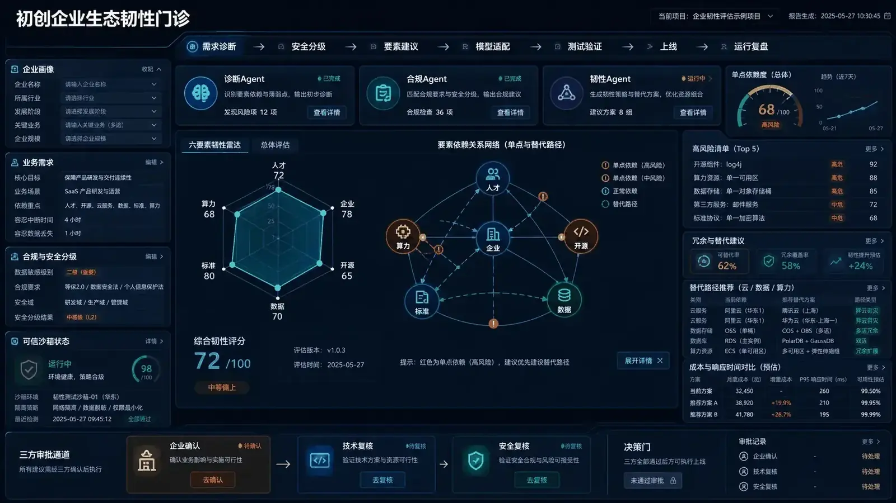
初创企业生态韧性门诊数字化系统
服务对象：初创团队与成长型企业，在要素服务大厅提出业务需求。
流程（七步）：需求诊断 → 安全分级 → 要素建议 → 模型适配 → 测试验证 → 上线 → 运行复盘。
核心特色——单点依赖度评估：门诊同时输出“单点依赖度”报告，提示企业哪些要素过度集中于单一供给方（单一云、单一数据源、单一算力渠道），并给出冗余建立建议，使“韧性”从园区口号落到企业可执行的经营决策。
数据与隐私边界：仅处理企业主动提交的业务与合规信息，数据走可信沙箱，算力走众智园或外围。
人工复核：最终方案由企业、技术人员、安全人员三方共同确认，保留线下窗口兜底。
运营主体：策源地运营方 + 企业服务团队。
场景三：市民进入“可感知的韧性公地”
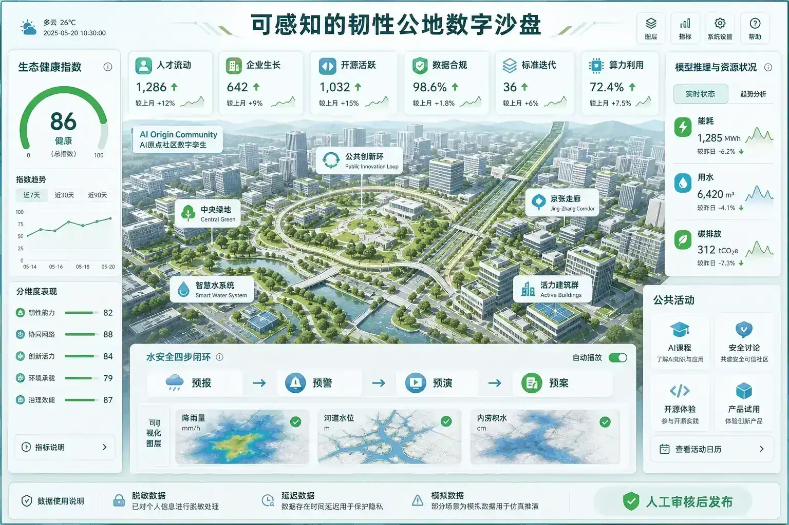
可感知的韧性公地数字沙盘
服务对象：周边居民与公众。
空间路径：公共创新环 → 展厅 → 共享庭院 → 公园生态界面。
可感知内容： 1. 生态健康度信息带：共享庭院地面实时显示脱敏后的聚合指标——人才流动、企业生长、开源活跃度、数据合规流通、标准迭代、算力利用率； 2. 水安全“四预”演示：观察清河/小月河/转河在暴雨场景下的预报—预警—预演—预案脱敏动画，理解城市如何应对内涝； 3. 资源消耗可视化：了解一次模型推理的能耗、水耗与碳排放量级； 4. 参与式活动：青少年 AI 课程、模型安全讨论、开源贡献体验、企业新产品试用。
数据与隐私边界：公众区只使用脱敏、延迟或模拟数据，不进入数据、标准与治理安全区；不采集个人轨迹、不做商业推荐。
人工复核：展示内容经脱敏与人工审核后发布。
运营主体：策源地运营方 + 公众教育合作方。
4.4.6 城市运行深化场景
以下三个场景把策源地韧性从“园内原则”升维到“城市运行”：水安全“四预”演示 AI 原生推理如何支撑极端天气下的空间韧性，韧性切换演示动荡冲击下的分态响应，双碳平台演示生态底盘的可计量运营。
场景四：城市运行实时推理——水安全“四预”
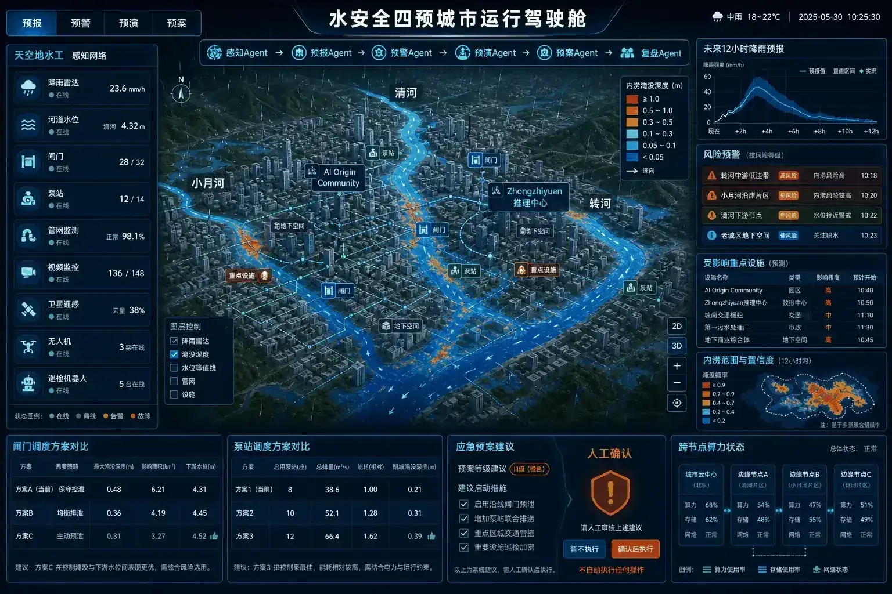
水安全四预城市运行驾驶舱
定位：这是把“韧性策源地”从抽象原则落到城市真实运行的关键场景，以水安全为切入点，展示 AI 原生推理如何支撑极端天气与城市内涝下的空间韧性。它同时依托京张铁路创新带内清河、小月河、转河的真实水系，将城市级水利能力转化为本地可调用、可感知的韧性服务。
服务对象：有权管理人员（城市运行、水务、应急、园区运营方）；公众经脱敏展示感知。
空间落位：推理算力集中在众智园城市推理中心，AI 原点社区与清河/小月河/转河水系通过高速算网按需调用，不在原点社区内集中堆放推理设备。清河、小月河、转河是建成区水系，与宁波甬江“流域 + 城市内涝 + 地下空间 + 生命线”的问题结构同构，具备直接迁移条件。
AI 原生架构（多智能体“四预”闭环）：按竞赛“AI 原生、多智能体协作”要求组织，而非传统水务信息化：
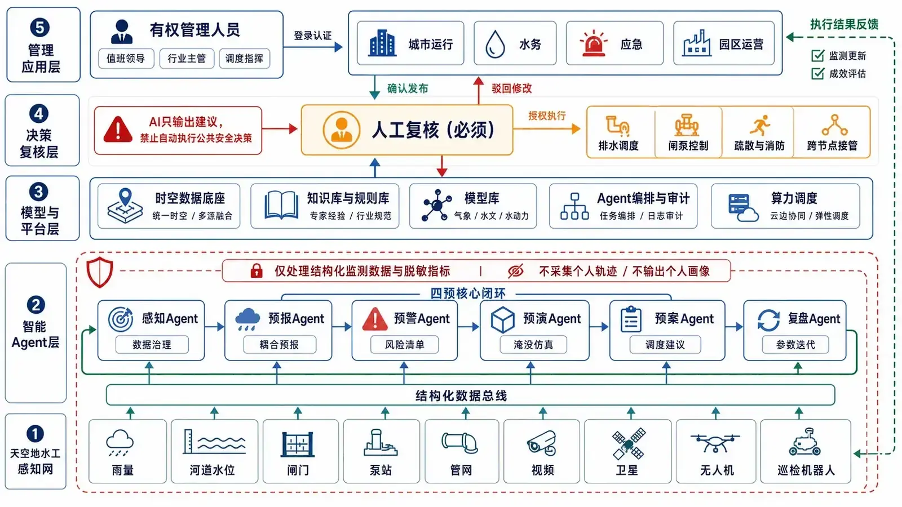
多智能体四预闭环逻辑架构
1. 感知 Agent（监测）：汇集“天空地水工”感知网——雨量、河道水位、闸门、泵站、管网、视频、卫星、无人机与地面巡检机器人，上传结构化信息； 2. 预报 Agent（模型）：气象—水文—水动力耦合，提前预报水位与淹没风险； 3. 预警 Agent（阈值/知识）：阈值触发与专家知识分析，自动生成风险清单并向有权管理人员推送； 4. 预演 Agent（仿真）：二三维耦合洪水淹没模型，推演“某闸门如何调度”“某管段失效会怎样”的后果； 5. 预案 Agent（调度）：联动排水调度、泵站、闸门与跨节点接管建议； 6. 复盘 Agent（迭代）：事后比对预报—实测，迭代模型参数。
人工复核与隐私边界：所有排水、闸门、疏散、消防与公共安全决定必须由人确认，AI 只输出建议；仅处理结构化监测数据与脱敏指标，不采集个人轨迹、不输出个人画像。
运营主体：众智园城市推理中心 + 城市运行管理部门 + 数字化技术支撑（概念阶段为能力参考，具体服务关系待正式论证）。
场景五：动荡与冲击下的韧性切换
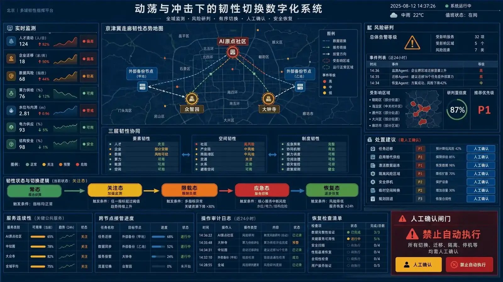
动荡与冲击下的韧性切换数字化系统政务大屏
韧性切换覆盖“要素—空间—制度”三层，以可观测指标触发，并与场景四的水安全“四预”衔接：
- 关注态（触发：关键要素指标偏离常态或水安全预警升级）：提高关键要素监测频率——人才流失、企业迁出、数据风险、算力供给、水位渗漏、供电与结构状态； - 限载态（触发：局部冲击，需保核心）：将非关键创新活动外迁或降级，保障核心研发、可信数据流通与城市公共服务连续； - 应急态（触发：极端天气/内涝/供电或结构告警）：隔离故障分区（物理分区或数据分区）、跨节点接管关键业务（众智园/外围算力接管、异地数据副本启用）、关键功能安全停机； - 恢复态（触发：冲击解除）：检查供电、结构、冷却、数据完整性与人才/企业回流后分阶段恢复。
水安全“四预”的预报—预警—预演—预案正是“关注态→限载态→应急态”切换的决策依据之一。这一过程在展厅以简化、脱敏方式展示，使“策源地的韧性”成为可被公众理解的日常教育。
算力韧性的三态映射：上述切换直接作用于三级算力网——常态下任务按“就近轻算 + 区域重算”自由调度；限载态下原点就近轻算降载、非关键训练/推理外迁至众智园与外围，保障核心研发与城市公共服务连续；应急态下跨级接管关键业务、启用异地数据副本，将算力从“单一机房容灾”升级为“全网可调度容灾”。
场景六：中央公园带智慧双碳平台
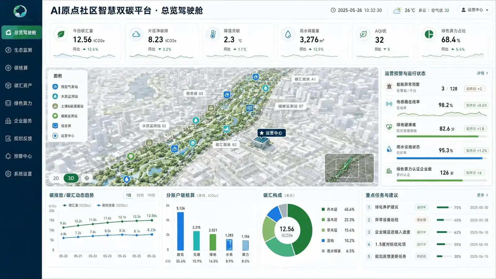
中央公园带智慧双碳平台
定位：高铁入地后在 AI 原点社区中央形成的线性公园带，不应仅被理解为“智算设施的绿化包装”，而应通过智慧双碳平台升维为可感知、可计量、可调控的生态韧性底盘。它既是策源地人才与市民的日常休憩空间，也是城市碳汇、气候调节和环境感知的复合基础设施。
服务对象：周边居民、通勤人群、科研人员、企业访客、城市生态管理部门。
空间落位：
- 感知节点：沿公园带布设微型气象站、负氧离子监测仪、水质在线监测、土壤湿度与碳通量塔、植被健康光谱探头； - 碳汇斑块：在公园节点设置乔—灌—草复层碳汇样地、雨水湿地、透水铺装示范区，作为“可量化的绿色基础设施”； - 展示界面：在公园生态界面和共享庭院设置双碳信息屏，实时显示公园当日碳汇量、降温贡献、雨水调蓄量、空气质量改善效果； - 管理驾驶舱：数据汇入策源地运营中心，与城市水安全“四预”、能源管理、算力调度形成联动。
平台架构（三层）：
1. 感知层：可信生态数据采集
- 能源消耗：建筑、交通、算力、照明、空调的分项能耗； - 碳排放源：人车通行、餐饮、废弃物、制冷剂泄漏等； - 碳吸收渠道：植被覆盖类型、叶面积指数、土壤有机碳、湿地水质与甲烷通量； - 环境质量：温湿度、PM2.5/PM10、负氧离子、噪声、热红外表面温度。
2. 核算层：统一碳核算与 1.5 度对标
- 建立片区级碳排放—碳汇动态平衡模型； - 按建筑、交通、绿地、水系、算力分账户核算； - 对标“1.5 度生活方式示范区”指标，输出达标率、缺口与优化建议。
3. 应用层：三类用户界面
- 公众屏：展示“今天这片公园吸了多少碳、降了多少温、净化了多少空气”，把抽象双碳目标转化为可感知的日常经验； - 管理驾驶舱：为园区运营方提供能耗异常预警、碳汇资产盘点、绿化养护建议； - 规划反馈接口：把公园植被配置、水体面积、透水铺装率等设计参数与碳汇效果关联，反向指导下一期更新与周边地块设计。
与策源地生态的耦合：
- 把智算中心的能耗与碳排放接入平台，探索“绿色算力认证”机制； - 为企业租户提供碳足迹画像和减排建议，使其成为 ESG 报告的数据来源； - 为人才社区营造“低碳生活实验场”，骑行、步行、共享办公等行为数据转化为可视化低碳成就。
数据与隐私边界：只采集区域聚合数据与公共设施运行数据，不追踪个人行为轨迹；企业能耗数据需授权后接入。
人工复核：碳核算方法、对标指标和重大减排建议由第三方核查与规划师共同审定。
运营主体：策源地运营方 + 城市生态环境部门 + 双碳技术服务方。
4.5.7 三类 AI+ 场景如何发生
场景一：游客进入“百年京张数字博物馆”
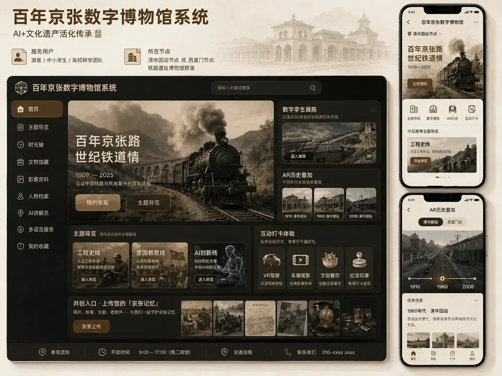
百年京张数字博物馆系统 服务对象：国内外游客、中小学生、高校研学团队。
空间落位：清华园站节点或西直门节点的铁路遗址博物馆群落。
智慧体验： 1. 预约与主题导览：游客选择工程史线、公共教育线或 AI 创新线，系统按客流与遗址承载力分配时段； 2. 数字孪生展陈：室内博物馆通过沉浸式影院、三维模型展示经核验的铁路技术与空间演变；室外 AR 内容仅采用权威档案核验后的历史材料； 3. 互动体验：提供模拟驾驶、车厢影像、文创与纪念印章； 4. 共创入口：公众提交的“京张记忆”经来源核验与内容审核后方可进入数字档案或公共艺术墙。
数据与隐私边界：仅处理预约信息、研学反馈与授权分享的影像；不采集个人生物特征或轨迹。
运营主体：博物馆运营方 + 文保部门 + 教育合作方。
场景二：市民进入“声音博物馆与 AR 历史现场”
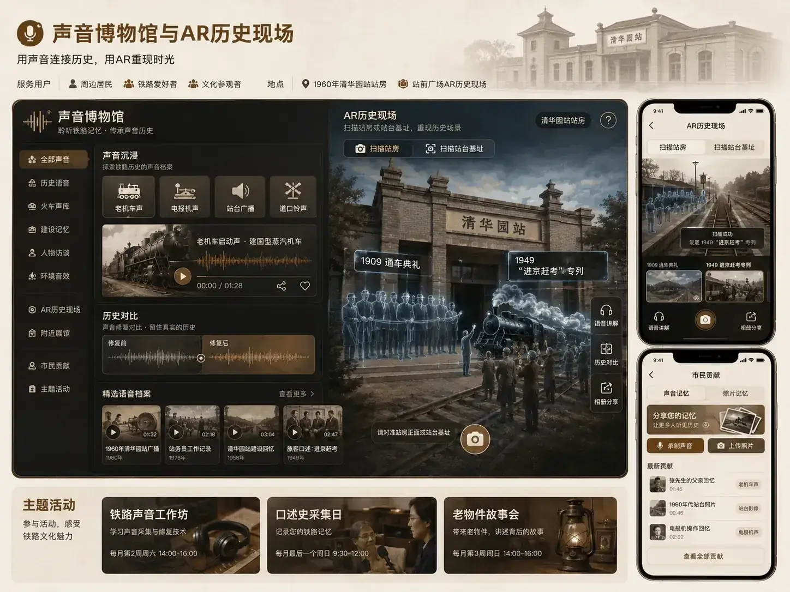
声音博物馆与 AR 历史现场
服务对象：周边居民、铁路爱好者、文化参观者。
空间落位：1960 年清华园站站房改造为声音博物馆，站前广场设置 AR 体验点。
智慧体验： 1. 声音沉浸：在站房内部通过定向音响播放老机车、电报机、站台广播、道口铃声，营造“火车就要开过来了”的临场感； 2. AR 历史现场：用手机扫描站房立面或站台基址，观看 1909 年通车典礼、1949 年“进京赶考”专列抵达等历史影像； 3. 市民贡献：居民可提供自己与京张铁路相关的声音记忆与老照片，经授权后纳入地方声景档案； 4. 主题活动：铁路声音工作坊、口述史采集日、老物件故事会。
数据与隐私边界：口述史与声音采集需签署知情同意书；公共播放内容经脱敏与审核。
运营主体：博物馆运营方 + 社区居委会 + 口述史机构。
场景三：社区共创“京张记忆花园”
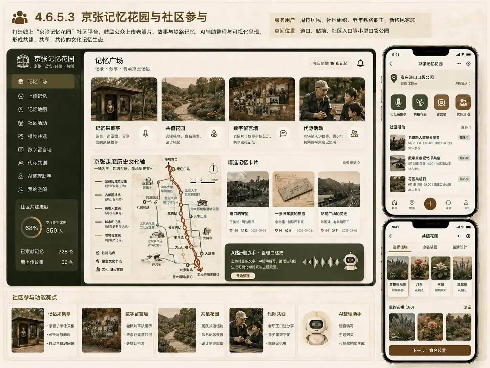
京张记忆花园与社区参与
服务对象：周边居民、社区组织、老年铁路职工、新移民家庭。
空间落位：道口、站前、社区入口等小型口袋公园。
智慧体验： 1. 记忆采集亭：在花园入口设置小型录音/录像亭，居民可讲述自己与京张铁路的故事； 2. 共植花园：居民参与选择植物、命名小品、设计铺装图案，将社区记忆物化到空间中； 3. 数字留言墙：老照片、老故事经审核后在公共屏幕或线上平台展示； 4. 代际活动：老铁路职工向青少年讲述工作经历，青少年用数字工具帮助老人制作家庭记忆册。
数据与隐私边界：口述史与老照片需签署知情同意书；公共播放内容经脱敏与授权；不追踪个人日常行为轨迹。
运营主体：社区居委会 + 博物馆运营方 + 策源地运营方。
用地、建筑规模与拆改留方案
更新遵循“先证据、后判断”：铁路遗产优先保留修缮，结构可用的存量空间优先可逆改造，拆除须在权属、结构、文保、安全和实施主体确认后比选，新建用于补齐服务与韧性缺口。所有规模结论保持概念设计属性。标准 深度 空间数据
4.2 精细激活营城策略 AI+ 存量资产更新云（空间资产识别 · AI 辅助决策 · 精准空间激活 · 智能运营调度 · 反馈优化）
4.2 AI+精细激活存量资产更新云
以京张铁路创新带沿线低效、碎片、闲置空间为经营对象，把“存量资产更新云”理念转化为可匹配的资产运营系统；以“空间资产识别 → AI 辅助决策 → 精准空间激活 → 智能运营调度 → 反馈优化”为闭环，让空间从沉睡资产变为创新现金流与人才黏性载体。
4.2.1 策略定位：把空间存量变为创新运营的流量入口
京张铁路创新带沿线聚集了大量因铁路改线、产业升级、权属复杂而沉淀的低效空间：桥下灰空间、闲置站房、老旧工业院落、边角绿地、夜间空置的办公底商等。这些空间不是城市发展的“负资产”，而是尚未被精准匹配到合适项目与运营主体的“沉睡资产”。
本策略借鉴“存量资产更新云”理念——为空间适配项目、为项目定制空间，把精细激活理解为贯穿 4.1—4.3 的轻量运营系统：它不靠大拆大建，而是通过空间资产识别、AI 辅助决策、精准空间激活、智能运营调度与反馈优化，让低效空间成为低成本、高弹性的创新配套与生活服务入口。换言之，4.3 回答的是“创新带的空间如何靠运营养活自己并持续造血”，而不是“再建多少万平方米的新楼”。
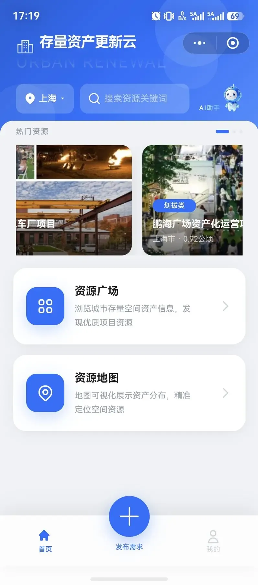
京张空间资产存量资产更新云小程序首页
小程序首页设置“资源广场、资源地图、政策资讯、论坛”四大入口，分别对应资产发现、空间定位、规则查询与社群共治，是京张廊道低效空间从“沉睡资产”走向“动态运营”的轻量界面。
4.2.2 空间资产识别：从沉睡资产到可运营数据
空间资产识别是存量资产更新云闭环的起点。只有把低效空间的“家底”数字化、结构化，才能为后续的 AI 决策、匹配与运营提供可靠输入。
四类低效空间
京张廊道沿线可盘活的空间可归纳为四类，每类具有不同的激活潜力与约束条件：
| 空间类型 | 典型对象 | 核心问题 | 激活潜力 |
|---|---|---|---|
| 桥下灰空间 | 铁路/道路桥下、高架下空间 | 权属复杂、可达性差、环境品质低 | 交通节点配套、社区活动、创新服务 |
| 闲置站房/工业院落 | 老站房、焊轨厂、仓库、工业院落 | 建筑老化、功能过时、产权分散 | 博物馆、联合办公、文创市集、研学 |
| 办公底商/街角裙楼 | 夜间空置的办公楼底商、街角裙房 | 时段性空置、业态单一 | 24 小时服务街、社交消费、社群活动 |
| 边角绿地/口袋公园 | 街角绿地、废弃边角地、小型公园 | 设施不足、使用率低、维护缺位 | 社区花园、弹性活动场、宠物友好空间 |
空间资产数据库字段
建立京张廊道低效空间资产数据库，为每宗资产生成一张可查询、可对比、可追踪的数字身份证：
- 基础信息：资产编号、名称、坐标位置、行政区划、所属街道、用地面积、建筑面积、容积率、建筑层数； - 权属与法务：产权主体、土地性质、用地权证状态、租赁/使用状态、规划限制条件、消防与结构安全等级； - 现状评估：当前功能、空置率、物理状况、环境质量、可达性、周边交通拥堵度、市政容量余量； - 配套设施：距轨道交通站点距离、公交站点覆盖、停车条件、公共 Wi-Fi、充电桩、无障碍设施； - 经济与运营：租售意向、历史租金/收益、预估改造成本、运营收益测算、重/轻资产分类； - 标签与画像：空间类型标签、适宜业态标签、目标人群标签、活化难度标签、政策适配标签； - 多媒体与文档：现状照片、航拍视频、点云模型、测绘图纸、产权证明文件扫描件； - 动态状态：上线状态、匹配状态、运营状态、绩效评分、投诉与反馈记录。
AI 空间活力评价指标
综合静态禀赋与动态运行数据，构建空间活力评价模型，为针灸点筛选与优先级排序提供量化依据：
| 指标维度 | 具体指标 | 数据来源 |
|---|---|---|
| 区位价值 | 距轨道站点距离、公交覆盖率、路网可达性、经公开或授权统计形成的街区级职住密度 | OSM、公开交通数据；授权统计仅在完成数据保护影响评估后条件式接入 |
| 人群需求 | 周边人口密度、创新人才占比、年龄结构、设施缺口指数 | 人口普查、POI、调研问卷 |
| 现状活力 | 街区级分时客流等级、停留强度与公开场所使用观察 | 现场计数、公开统计或经合法授权且达到聚合阈值的数据；不直接接入手机信令、Wi-Fi 探针或个人社交账号数据 |
| 空间质量 | 绿化覆盖率、照明条件、无障碍水平、环境质量 | 街景图像识别、IoT 传感器 |
| 运营潜力 | 产权清晰度、改造弹性、政策支持力度、市场租金预期 | 权属数据库、政策文件、市场可比案例 |
| 干预成本 | 改造工程量、市政接入难度、审批周期、拆迁风险 | 现场踏勘、规划条件、专家评估 |
模型仅在数据合法来源、最小必要字段、聚合阈值、保存期限和访问角色完成审批后试算 0—100 的空间活力指数，并给出三类辅助建议；不得用于个人信用评分、身份判断或自动作出资源分配决定，排序结果须经人工复核并支持解释、纠错和申诉。
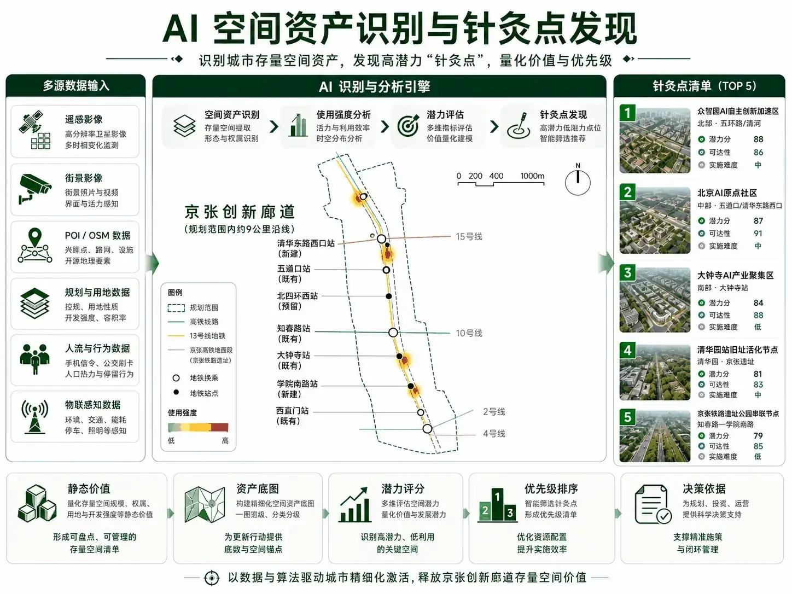
AI 空间资产识别与针灸点发现
图 1：AI 空间资产识别与针灸点发现——融合资产数据库、活力评价模型与 GIS 空间分析，自动识别京张廊道沿线高潜力针灸点位，并生成优先级排序与初步业态建议。
资源广场与资源地图是资产识别结果的可视化入口：资源广场支持按空间类型、重/轻资产、标签组合筛选；资源地图在真实底图上展示资产分布、权属边界与周边配套，降低实地踏勘成本。
4.2.3 AI 辅助决策：针灸点识别、方案生成与主体匹配
在资产数据化的基础上，AI 承担“诊断—匹配—生成”的辅助决策角色，把模糊的空间问题转化为可实施的项目清单。
针灸点识别逻辑
AI 针灸点识别遵循“数据融合 → 候选筛选 → 综合评分 → 优先级排序 → 现场校核”五步流程：
1. 条件式数据融合：优先整合公开资产、POI、规划条件、现场计数和去标识化投诉统计；不假定已取得手机信令或个人社交数据，任何新增数据源须完成合法性、最小必要性与数据保护影响评估； 2. 候选筛选：设定硬性门槛——产权相对清晰或具备协调可能、不存在重大结构安全隐患、具备基本可达性； 3. 综合评分：基于活力评价指标，计算每个点位的综合得分，并识别短板（如设施缺口大但人流高）； 4. 优先级排序：结合实施难度、示范效应、投资规模与 stakeholder 支持度，生成年度针灸项目库； 5. 现场校核：对高优先级点位开展快速踏勘与社区访谈，修正 AI 判断中的“数据盲区”。
空间数字画像
为每宗资产生成一张动态“空间数字画像”，作为匹配与运营决策的统一语言：
- 基础画像：位置、规模、权属、现状功能、约束条件； - 活力画像：人流时序、人群构成、活动类型、高峰低谷； - 需求画像：周边 5/10 分钟步行圈内的人口、产业、设施缺口； - 机会画像：适宜业态、潜在运营主体、预期收益区间、可叠加的 4.3/4.4/4.5 策略； - 风险画像：结构隐患、产权纠纷、政策限制、邻避风险、市政瓶颈。
空间—项目—运营主体匹配机制
建立三方双向匹配模型，把“空间找项目”与“项目找空间”统一到一个算法框架中：
- 空间侧输入：数字画像、约束条件、业主意向、收益预期、可接受运营方式（出租/联营/分成/公益）； - 项目侧输入：商业计划、目标客群、投资规模、运营经验、社会效益、分时利用需求； - 运营主体侧输入：主体类型、经授权提交的项目经验和能力标签；不建立个人信用评分，不使用与项目无关的历史行为或地理偏好； - 匹配算法：基于多目标优化（空间兼容性、预期收益、社会价值、风险可控、运营可持续性）生成推荐排序； - 决策闭环：推荐结果进入“资源详情—我来运营”申请通道，产权方在线审核，平台持续跟踪履约绩效并反馈至模型。
微更新方案生成流程
针对筛选出的针灸点，AI 辅助生成“轻、快、省”的微更新方案：
1. 问题诊断：识别点位短板（缺座椅、缺照明、缺绿化、缺功能、缺无障碍）； 2. 用户画像：分析周边主要人群（通勤者、居民、学生、游客）的时空分布与需求； 3. 工具箱匹配：从标准化工具箱（铺装、家具、亭体、绿化、照明、数字设施）中组合适配模块； 4. 场景包装：叠加在地化功能（咖啡书吧、社区厨房、共享会议室、快递驿站、骑行服务站、宠物友好设施）； 5. 成本估算：基于模块单价与工程量输出 rough budget 区间； 6. 方案输出：生成平面图示意、物料清单、实施时序、运营模式建议与效果预期； 7. 公众反馈：在线上平台公示方案，居民点赞、评论、投票，AI 汇总意见并辅助优化。
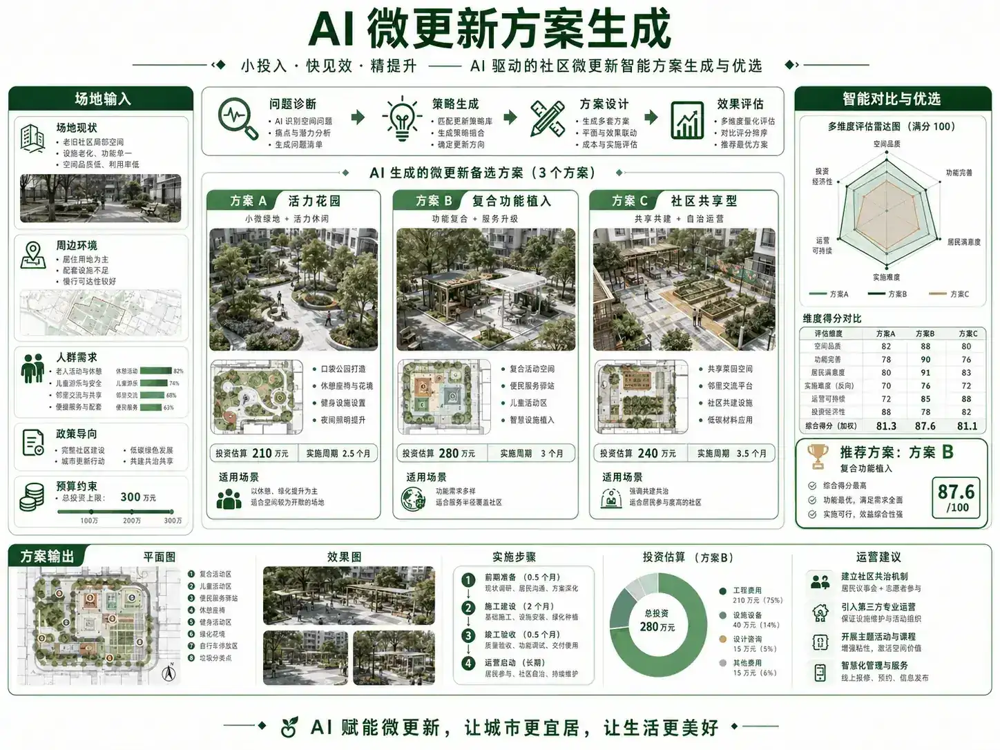
AI 微更新方案生成 图 2：AI 微更新方案生成——基于点位诊断、用户画像与标准化工具箱，AI 自动生成多套微更新方案，供社区、设计师与运营商选择、投票与迭代。
资产详情页是 AI 辅助决策的落地界面：点击资源卡片即可查看空间现状信息、权属主体、现状照片、经营出让条件、区位及项目概况、地块详情，以及 AI 生成的适配业态与收益测算。
4.2.4 精准空间激活：微更新工具箱、创新盒子与社群嵌入
AI 决策最终要落到具体的空间改造与功能嵌入中。本阶段强调“小切口、快见效、可累积”，用低成本针灸式介入激活沉睡资产。
标准化微更新工具箱
建立可复制、低成本的更新“菜单”，根据点位短板快速组合：
- 地面与界面：透水铺装翻新、铁路枕轨肌理铺装、可移动平台、模块化坐凳、垂直绿化墙； - 设施与服务：可移动家具、模块化亭体、公共 Wi-Fi、充电桩、智慧灯杆、快递柜、直饮水； - 生态与景观：花箱、雨水花园、遮阳棚、宠物友好设施、骑行停车架； - 数字与交互：信息屏、二维码导览、NFC 标签、环境监测传感器、人流计数器。
在地化场景植入
根据点位周边人群特征，嵌入差异化功能，避免“千点一面”：
- 通勤节点：咖啡书吧、快速早餐、临时办公、骑行服务站； - 居住社区：社区厨房、共享会议室、快递驿站、托幼等候空间、宠物友好角； - 高校周边：开源客厅、联合讨论室、即兴路演角、24 小时自习舱； - 文旅节点：铁路主题展示、文创零售、轻餐饮、AR 打卡点。
创新盒子与社群空间网络
在创新带内按 5—10 分钟步行尺度布局“创新盒子”“联合讨论室”“开源客厅”等小型社群空间：
- 功能定位：支持偶遇式交流、即兴路演、跨界合作与小型活动； - 空间形态：可模块化拼装、可移动、可分时复用，具体尺度由场地和运营条件确定； - 服务嵌入：在社群空间周边集成短租公寓、共享厨房、洗衣健身、托幼、宠物照护等生活配套，减少创新人才的生活摩擦； - 企业—社区共享界面：鼓励企业向社区开放会议室、展厅、绿地与停车资源，换取公共服务积分或品牌曝光，形成互惠机制。
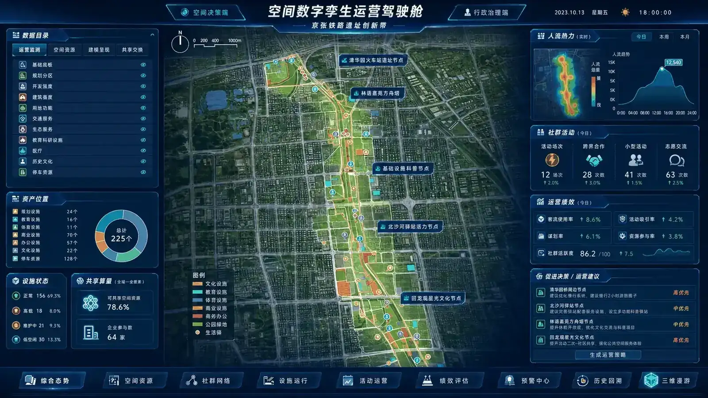
空间数字孪生运营驾驶舱 图 3：空间数字孪生运营驾驶舱——将资产位置、人流热力、设施状态、运营绩效与社群活动汇总到一个可视化界面，支持管理者实时掌握空间运行态势并快速决策。
4.2.5 智能运营调度：分时利用与动态匹配
同一空间在不同时间段服务不同人群，是存量资产更新云策略提升资产效率的核心。AI 运营调度把时间、空间、用户、活动四类变量统一优化。
四类空间分时利用策略
| 空间类型 | 混合/分时策略 | 典型时段分配 | 承载功能 |
|---|---|---|---|
| 桥下灰空间 | 白天创新配套 + 夜间社区活动 | 9:00—18:00 共享办公/展示；18:00—22:00 社区健身/市集 | 创客驿站、桥下剧场、周末集市 |
| 闲置站房/工业院落 | 工作日产业服务 + 周末文化消费 | 工作日企业路演、联合办公；周末展览、研学、文创市集 | 企业客厅、研学课堂、快闪展厅 |
| 办公底商/街角裙楼 | 白天生活服务 + 夜间社交消费 | 白天咖啡、便利店、轻餐；夜间小酒馆、脱口秀、社群活动 | 24 小时创新服务街 |
| 边角绿地/口袋公园 | 日常休闲 + 节庆活动 | 平日散步、午休；周末/节假日主题市集、露天电影 | 社区花园、弹性活动场 |
AI 分时运营调度机制
- 时段粒度：以 1 小时或 30 分钟为单元，建立全年可预约日历； - 用户分层：区分居民日常、企业服务、社群活动、商业运营、维护保洁等类型，设置不同优先级与定价规则； - 动态定价：高峰时段市场价、平峰时段会员价、公益时段低偿或免费； - 冲突消解：当多个主体申请同一时段时，按“安全维护 > 已签约长租 > 公益活动 > 商业活动 > 临时申请”优先级自动裁决； - 智能预约：用户在线查看实时可用时段，一键预约、支付、获取门禁/通行码； - 交接管理：明确不同时段的设施交接、清洁、安保责任，降低多方共用交易成本。
功能混合准入与协议模板
- 准入清单：制定鼓励类、限制类、禁止类功能目录，在确保安全与合规的前提下允许商业、文化、创新服务适度混合； - 协议模板：明确使用主体、时段、收费标准、设施交接、安全管理、保险与违约责任，形成标准化分时运营协议； - 轻资产撮合：引入专业运营商、社群主理人、高校创业团队等多元主体，通过短租、联营、收益分成等模式降低政府与产权方负担。
AI 分时运营调度 图 4：AI 分时运营调度——基于预约数据、人流预测与优先级规则，自动生成时段分配方案，实现同一空间的高效安全分时复用。
4.2.6 反馈优化：社群运营 Agent 与共治平台
存量资产更新云闭环的最后一环是持续收集使用反馈，让社群自我组织成为空间运营的持续动力。
社群运营 Agent
部署一个智能社群运营 Agent，作为居民、运营方与管理者之间的“连接器”：
- 需求感知：自动分析论坛帖子、需求发布、投票数据与活动反馈，识别高频需求（如“需要夜间健身场地”“希望增加托幼等候区”）； - 空间匹配：根据需求类型、人群规模与时段偏好，自动推荐合适的针灸点或社群空间，并生成活动方案草稿； - 资源撮合：为活动匹配潜在主理人、志愿者、合作商家与政策支持； - 智能提醒：向目标人群推送活动通知，向运营方提醒设施维护与交接事项； - 反馈学习：活动结束后自动收集满意度、参与人数、能耗与安全事件，更新空间画像与运营策略； - 积分激励：记录居民参与共创、志愿服务与活动组织的贡献，兑换公共空间使用权或文创权益。
需求发布与论坛共治
- 需求发布：用户填写需求标题、描述、类型、位置与现场照片，发布寻租、寻址、改造、合作等需求； - AI 匹配：系统自动将市民/企业需求与平台已上线资产进行匹配，并向产权方反向推送潜在运营机会； - 论坛讨论：围绕具体资产或更新议题展开讨论，居民、设计师、运营商共建方案、点赞评论，形成透明共治氛围； - 政策资讯：集中展示存量资产盘活、城市更新、公园配套服务等相关政策，降低信息门槛。
绩效反馈与模型迭代
- 运营绩效看板：实时展示各资产使用率、收益、满意度、能耗与安全事件； - 问题闭环：对投诉、故障、违规使用等事件建立工单流转，追踪处理结果； - 模型迭代：将运营数据回流至资产数据库与匹配算法，持续优化针灸点识别、方案生成与主体匹配效果。
AI 创新生活服务网络 图 5：AI 创新生活服务网络——通过社群运营 Agent、需求发布、论坛共治与积分激励，把居民和创新人才的需求实时转化为空间运营与微更新提案，形成自我生长的服务网络。
需求发布与论坛是反馈优化的人机协同入口：居民一键发需求，AI 自动匹配空间与潜在运营方；论坛中围绕具体资产展开共建讨论，形成透明共治氛围。
4.2.8 与第三章问题识别的对应
| 第三章核心问题 | 本策略的回应方式 |
|---|---|
| AI 科创资源集聚与配套设施体系不匹配 | 以微更新针灸点、创新盒子、生活服务嵌入补齐人才日常交往与生活服务短板 |
| 双铁空间廊道沿线的低效用地再开发利用问题 | 把铁路廊道沿线低效空间通过存量资产更新云平台重新匹配项目与运营主体，提升资产价值 |
| 复杂交通体系与城市交通管理水平落后的矛盾 | 在桥站周边植入换乘等候、骑行服务、临时办公等微空间，提升换乘体验与慢行连续性 |
| 历史文化保护与空间更新利用之间的矛盾 | 针灸式介入对遗产周边空间低扰动，功能混合让历史空间承载当代生活服务 |
4.2.9 智慧手段总图谱
| 城市设计层 | 智慧手段 | 输出 |
|---|---|---|
| 资产识别 | 空间资产普查 + 权属与规划条件数据库 + 重/轻资产分类 + 潜力评级模型 | 京张廊道低效空间资产地图与资产详情卡 |
| 资产发现 | 资源广场分类检索、资源地图定位、热点与已成交案例推荐 | 匹配用户需求的空间资产清单 |
| 项目匹配 | AI 空间—项目匹配引擎、收益测算、经营出让条件审核 | 适配运营方案与分时利用协议 |
| 运营申请 | “我来运营”快速申请、在线审核、快速咨询对接 | 运营意向与产权方的闭环对接 |
| 双向匹配 | 项目需求发布、论坛讨论、政策资讯查询 | 供需双方的动态撮合与共治 |
| 微更新管理 | 需求众包、热度排序、方案公示、实施跟踪 | 年度针灸式更新项目库与实施清单 |
| 空间运营 | 预约共享平台、人流监测、能耗与安全预警 | 低效空间的高效安全分时运营 |
| 社群治理 | 社群画像、活动匹配、共创记录、积分激励 | 自我组织的创新社群网络 |
AI 存量资产更新云智慧闭环总图谱
图 6：AI 存量资产更新云智慧闭环总图谱——从空间资产识别、AI 辅助决策、精准空间激活、智能运营调度到反馈优化，形成“数据—算法—空间—运营—共治”持续迭代的城市空间资产经营闭环。
4.2.10 与其他对策的接口
- 与 4.1 连续光谱配套策略：创新盒子与社群空间是创新服务光谱的末端触点，为孵化、加速、成果转化节点提供灵活的线下延伸； - 与 4.3 菜单专选智行策略：针灸式微更新点位与桥下空间可作为慢行网络驿站、骑行服务站与换乘等候空间； - 与 4.4 柔性韧性推算策略：低效空间的分时利用可与韧性公地、开源步道叠合，提升城市冗余与应急响应能力； - 与 4.5 文脉延续发展策略：工业遗存改造空间可纳入存量资产更新云平台统一运营，让历史空间同时承载文化叙事与创新生活服务。
4.2.11 评价指标
- 低效空间资产普查覆盖率与资产详情卡完整率； - 资源广场上线资产数与重/轻资产分类准确率； - 针灸式微更新点位数量与实施率； - 功能混合与分时利用项目数； - 存量资产更新云平台注册运营主体数、匹配成功率与“我来运营”申请转化率； - 项目需求发布数与供需双向匹配成交数； - 论坛活跃用户量与居民/人才参与度； - 创新盒子/社群空间使用时长与复用率； - 生活服务设施覆盖率与 5 分钟可达率； - 低效空间盘活后的资产收益率或租金提升率； - 公众对周边空间满意度调查得分； - 微更新项目从需求提交到落地实施的平均周期。
4.2.12 设计边界
本策略是面向城市设计竞赛的概念策略，而非独立的落地实施方案。低效空间的具体权属、规划条件、消防与市政容量、运营成本与收益模型均需以正式资料与试点测算为依据。正式深化前应补充：沿线低效用地清单、产权主体与 lease 状态、控规条件、结构安全评估、市政容量核算、运营成本测算及公众参与记录。
主要参考依据
1. 《百年京张 AI 创新带面向智能体开放征集任务书》本地清权摘要。 2. 14《存量资产更新云：城市空间资产经营小程序》PPT（2024.10）：提出“为空间适配项目、为项目定制空间”的存量资产更新云理念，以及资产勘探、资产包装、信息分发三阶段运营模式。 3. 中国城市规划设计研究院：《京张铁路遗址公园贯通概念方案征集【中规院】》，2020 年 3 月。 4. 中国建筑设计研究院有限公司：《京张铁路遗址公园贯通概念方案征集【中建院】文本》，2020 年。 5. AI map/map-three-layers.html 与 AI map/osm-data.js：临时范围及 OSM 道路、轨道、水系和绿地背景数据，仅用于设计研究和空间关系识别。
交通、轨道、市政与公共服务设施
京张遗址公园形成南北慢行主脊，轨道承担区域骨干，公交、接驳与定制服务构成出行菜单；主算力枢纽、边缘节点和应用场景与能源、水安全、消防、通信和公共设施协同设计。工程线位与容量须由专业资料复核。深度 空间数据 深度
赛事必需图04｜交通、市政、智算与蓝绿系统。
4.3 菜单专选智行策略 对应「复杂交通体系与管理落后」的对策（交通·轨道·慢行，含慢行缝合与桥下空间活化，兼回应「双铁低效用地」）
交通·轨道·慢行 — 让「智脊」成为流动主脊
把京张铁路遗址公园从"东西割裂的铁路屏障"转化为"南北贯通的公共智脊"。依据"一带三核、多点共创"与"蓝绿慢行复合环"的空间结构,给出可复核的路网、轨道、慢行、停车与对外交通方案:以慢行与蓝绿为主脊、以轨道为骨干、以 AI 原生移动为能力,让流动系统服务人才流动、算力就近供给与场景试验。
4.3.1 交通命题与战略
4.3.1.1 命题:智脊首先是流动系统
本方案承接"百年京张 · AI 创新带"的总体定位——世界级 AI 策源地,交通正是这一策源地的流动系统:是人才流动的血管、算力就近供给的毛细、场景试验的运行底盘。京张遗址公园之所以能成为"智脊",不在于它是一条绿色廊道,而在于它同时承担纵向传导(南北贯通)与横向缝合(东西连通)两种流动功能。〔来源〕 〔标准〕
交通系统遵循"治理先于技术装置"原则:AI 原生交通不是堆设备、炫技术,而是把开放贡献、真实测试、公共安全与长期运营组织为流动规则,每个场景具备数据最小化、可解释、人工复核与明确运营主体;柔性韧性作为流动系统的稳健性要求,体现在应急场景与指标体系之中。
4.3.1.2 交通发展战略
| 策略 | 内涵 | 落点 |
|---|---|---|
| 慢行优先 | 京张廊道及周边以步行、骑行为主导,机动交通让位于慢行 | 一带主脊、复合环 |
| 公交优先 | 轨道 + 常规公交 + 接驳构成骨干,保障正点与优先通行 | 轨道门户、公交走廊 |
| TOD 一体化 | 站点周边组织"站—慢行—产业"一体化(概念,不预设强度) | 清河站、大钟寺站、五道口、清华东路西口 |
| 需求管理 | 以停车供给、分时共享、无人接驳引导绿色出行 | 停车分区、P+R、MaaS |
据此划定两类交通分区:慢行优先区(京张遗址公园及三核公共空间,机动车限速、路权让行)与公交优先区(轨道门户 500 米范围内,公交优先、接驳加密)。分区边界为概念建议,待正式控规与交通组织复核。
4.3.2 交通骨架与空间结构
4.3.2.1 路网现状
本带道路呈"环线 + 纵轴"骨架。三道环路(北三/四/五环)与京藏高速承担快速交通,中关村大街、学院路等承担南北向主干交通,知春路、成府路、清华东路承担东西向联系。京张廊道本身原为铁路,地面转化为遗址公园后,道路微循环与支路网在廊道两侧普遍不足,断头路多,是慢行与地块可达性的主要短板。
4.3.2.2 轨道现状
| 轨道 | 与本带关系 | 关键节点 |
|---|---|---|
| 13 号线 | 大致沿老京张线位,最贴脊 | 西直门—大钟寺—知春路—五道口—上地—清河 |
| 4 号线 | 西侧南北线,服务高校与中关村 | 中关村—北大东门—人民大学—西直门 |
| 10 号线 | 环线,东西向转换 | 知春路—西土城 |
| 京张高铁 | 北部门户枢纽 | 清河站 |
| 16 / 12 / 15 / 昌平线 | 补充线网,线位待核 | 清华东路西口等(待核实) |
线位与站点为概念判断,精确线位、站口、换乘与客流须以 OSM / 官方数据核校。
4.3.2.3 公交、慢行、停车与对外交通现状
- 公交:常规公交沿主要道路运行,与轨道站点换乘衔接不足,缺乏接驳与定制公交组织; - 慢行:京张主脊连续性强,但东西向过街点少、围墙多,慢行网络"有脊无网"; - 停车:现状以地块配建为主,缺乏 P+R 与分时共享组织,静态与动态交通联动不足; - 对外交通:清河站为高铁门户,但"站—城"一体化接驳与区域货运组织有待加强。
4.3.2.4 现状诊断
1. 三重切割:北三/四/五环三次横向切断,慢行连续性依赖少数节点; 2. 站点脱节:站点与产业空间被道路、围墙隔离,"最后一公里"接驳弱; 3. 东西缝合不足:过街点少、围墙多,高校侧与园区/社区侧联系弱; 4. 有脊无网:慢行主脊强,但支路网、微循环与慢行网络密度不足; 5. 可达性不均:5/10/15 分钟可达性、慢行断点、公服覆盖缺口由时空分析与数字沙盘「模块 B·创新交互与慢行」推导,对应 geometry/roads.geojson、geometry/public_space.geojson 校核。
4.3.2.5 路网体系与断面
4.3.2.5.1 路网等级结构
| 等级 | 功能 | 本带道路(概念) | 处理原则 |
|---|---|---|---|
| 快速路 | 长距离机动交通,全封闭 | 北三/四/五环、京藏高速 | 与京张廊道相交处优先保障慢行连续跨越 |
| 主干路 | 片区间交通 | 中关村大街、学院路、知春路 | 公交优先,人车分流,优化交叉口 |
| 次干路 | 片区内交通,分流主干路 | 西土城路、成府路、大钟寺东路、荷清路 | 组织微循环,衔接慢行与公交 |
| 支路 | 地块出入,慢行与微循环 | 园区/社区内部道路(待补) | 加密支路网,打通断头路 |
核心动作是加密支路网、打通断头路,提高支路网密度,支撑慢行可达性与公交接驳。路网等级、红线宽度均为概念判断,待正式控规确认。
4.3.2.5.2 道路断面与交通组织
- 城市道路断面:主干/次干路采用"机动车道 + 非机动车道 + 人行道 + 绿化带"的完整断面,非机动车道连续、不与机动车混行(概念建议); - 主脊断面:京张廊道采用"蓝绿在上、慢行居中、接驳在侧"的复合断面(见本节 4.3.2.8); - 交叉口:大钟寺、五道口、跨环路等关键交叉口,提出人车分离、慢行过街、信号配时优化的概念组织,不预设渠化与工程形式; - 微循环:以支路网与园区内部路组织单向/低速微循环,减少穿越性交通进入慢行核心区。
4.3.2.6 公共交通体系
4.3.2.6.1 三级公交层级
| 层级 | 载体 | 功能 |
|---|---|---|
| 骨干层 | 轨道(13/4/10/京张高铁等) | 三核之间及对外的高容量快速联系 |
| 常规层 | 常规公交 + 精准公交 | 沿主干/次干路覆盖,车路协同优先、正点到站 |
| 接驳层 | 接驳公交、定制公交 | 轨道门户"最后一公里"、三核微循环 |
4.3.2.6.2 场站与枢纽
- 清河站:高铁 + 轨道 + 公交 + 接驳的综合门户,承担对外到发与换乘; - 大钟寺站:轨道换乘 + 公交枢纽 + 四象限步行连通,承担南部集散; - 五道口、清华东路西口:轨道 + 公交 + 慢行接驳点,承担高校侧集散。
站点周边"站—慢行—产业"一体化开发强度为概念建议,不预设容积率与建筑高度,待正式控规条件。
4.3.2.7 慢行系统
4.3.2.7.1 步行系统分级
- 城市级:京张主脊(南北贯通三核,串联清河站与西直门); - 片区级:东西缝合连接(跨环路、跨廊道、站点四象限); - 社区级:微循环支路与公共空间,服务日常出行。
4.3.2.7.2 自行车系统与无障碍
- 主骨架:京张主脊骑行道(与步行分断面或分时); - 次骨架:缝合线与复合环骑行道; - 微循环:园区/社区内部自行车道,衔接共享单车停放; - 无障碍设计目标（待专业核验）:拟在主脊、门户、过街与主要公共空间形成连续无障碍路径，坡道、盲道和接驳点须经专项设计审查、现场测量及残障人士与老年人真实用户测试后方可确认达标。
连续路径检查表：
| 环节 | 设计目标 | 实施前核验与非数字兜底 |
|---|---|---|
| 主脊与支路 | 连续净宽、平整防滑、无悬空障碍，休息点可达 | 实测净宽、纵横坡、路面与障碍物；不满足时提供可识别绕行和人工引导 |
| 门户与建筑入口 | 无台阶入口或合规坡道/升降设施，与公共交通接驳 | 核验高差、门宽、候梯空间和设备可用性；故障时开放线下服务入口 |
| 过街与换乘 | 缘石坡道、盲道、声光提示和安全等待空间连续 | 专业复核信号配时与触觉/听觉提示；紧急情况下由现场人员组织通行 |
| 主要公共空间 | 无障碍卫生间、座椅、饮水与服务台可达 | 竣工前由专业人员和真实用户联合测试，问题进入整改与申诉闭环 |
| 信息与参与 | 图片替代文本、视频字幕/文字稿、易读文本、键盘操作和多感官提示 | 提供电话、纸质材料、现场预约/导览/交通咨询和公众意见登记，不以智能手机作为唯一入口 |
所有无障碍结论均为设计目标而非建成状态；运营期设置现场人工服务、问题登记、申诉纠错与紧急非数字兜底，并在方案深化、施工图审查、验收和运营复查各阶段持续核验。标准
4.3.2.7.3 慢行网络指标(几何可复算)
慢行系统的核心可复算指标包括:慢行网络密度(慢行道长度 / 用地面积)、慢行覆盖率(慢行道缓冲覆盖面积 / 用地面积)、慢行断点数量与5/10/15 分钟慢行可达性。公式与计算口径见第 4.3.5 节;具体数值待官方边界与道路数据补齐后复算。
4.3.2.8 一带·三核·多点·复合环
4.3.2.8.1 一带(南北主脊)
京张遗址公园作为主脊,按三核分为三段,每段绑定一个轨道门户:
| 段 | 区间 | 绑定门户 | 主导活动 |
|---|---|---|---|
| 北段 | 清河站—众智园—北四环 | 清河站门户 | 高铁到发接驳、园区通勤、清河滨水 |
| 中段 | 北四环—原点社区—知春路 | 五道口·清华东路西口门户 | 近校慢行、开源交往、小月河滨水 |
| 南段 | 知春路—大钟寺—西直门 | 大钟寺站门户 | 轨道集散、智能经济、转河滨水 |
主脊断面为"蓝绿在上、慢行居中、接驳在侧"(步行/骑行/蓝绿/接驳),断面宽度与路权随段调整。主脊"可重构路权"是韧性切换的空间前提:大型活动或应急时,骑行道可临时转为步行疏散或应急通行。
4.3.2.8.2 三核门户与东西缝合
三核各自成为"轨道—慢行—产业"门户,并分别承接官方定位——众智园(开放共赢·创新发展)、原点社区(强化优势·年轻图强)、大钟寺(要素集聚·生态协同)——交通门户是这些定位的流动支撑;缝合以过街连续性、站点一体化、围墙开放三个轻量动作优先,不预设桥隧工程:
| 缝合节点 | 类型 | 主要动作 | 依赖条件 |
|---|---|---|---|
| 北五环跨廊道 | 环路跨越 | 慢行连续上跨/下穿(概念建议) | 道路红线、交通组织复核 |
| 北四环跨廊道 | 环路跨越 | 骑行与步行连续、无障碍 | 道路红线、桥下空间 |
| 大钟寺站四象限 | 站点一体化 | 路口四象限步行连通、站—城入口 | 轨道站点、交叉口、市政管线 |
| 五道口节点 | 站点 + 历史记忆 | 京张铁路记忆节点 + 东西慢行缝合 | 站点、公共空间、文保条件 |
节点具体形式(上跨、下穿、地下连通)均为概念建议,不构成工程可行性结论。
4.3.2.8.3 复合环
复合环是"一带三核多点"在交通上的闭合形态:依托水系(清河—小月河—转河)与高校、园区、社区公共空间,形成若干慢行回路,衔接主脊与三核。工作日承载通勤与近校慢行,周末承载蓝绿休闲、AI 体验与活动路线;环上慢行断点、交互热点、东西缝合节点与首层开放建议由时空分析与数字沙盘「模块 B」推导。
4.3.2.9 静态交通与停车
4.3.2.9.1 停车分区
- 核心严控区(京张主脊与三核公共空间):以公交与慢行为主导,停车供给从严,鼓励共享; - 外围适度区(园区与社区外围):配建为主,结合 P+R 与分时共享。
4.3.2.9.2 停车组织
- P+R / 停车换乘:清河站、大钟寺站设 P+R(概念建议),引导对外车流换乘轨道; - 非机动车停放:门户与公共空间设集中停放与换乘锁架,衔接共享单车,不占人行主道; - 分时共享:以"全域智能停车"为方法参考,把静态停车与动态交通通过数据联动(概念建议)。
停车配建规模、泊位布局与收费均须以正式控规与交通条件为依据,本方案不给出确定数值。
4.3.2.10 对外交通与货运物流
4.3.2.10.1 对外交通
清河站是本带的高铁门户,承接京张高铁及区域到发;区域联系依托京张高铁、环线快速路与轨道网络,形成"高铁到发—轨道接驳—慢行入脊"的对外换乘链。对外交通组织为概念建议,待铁路、轨道与道路条件确认。
4.3.2.10.2 货运与物流交通
- 货运通道:货运走外围快速路与专用通道,避免穿越慢行核心区(概念建议); - 无人配送物流:分拨—地面无人车/无人机配送—末端停靠点交接,物流流线与步行分时或分断面,独立于疏散通道; - 低空物流:无人机航路与起降点须经空域与安全管理确认,不预设航线。
4.3.4 新型基础设施与车路协同
新型基础设施服务"就近轻算 + 区域重算"的柔性供给,不追求设备堆砌:
- 路侧单元与全息感知:边缘计算单元、RSU、毫米波雷达、智慧多功能杆,按需布设于门户与关键路口; - 端侧算力与边缘节点:与端侧算力驿站结合,承担低时延接驳调度、慢行断点识别与配送协同; - 换电与无人配送停靠:门户与园区设换电/充电、无人配送停靠与末端仓储; - 数字孪生底座:以"云上孪生"支撑大客流与应急推演,复用 4.4 节水安全"四预"能力。
设备布点、算力配置与能源条件均为概念建议,须以电力、通信、市政与安全条件为依据深化。
4.3.5 指标 · 实施 · 边界
4.3.5.1 需求预测与承载力(方法框架)
交通需求预测采用四阶段法(出行生成—分布—方式划分—分配),高峰小时需求与路网/轨道/慢行承载力评估,须以官方人口、就业、出行率与道路/轨道资料为依据;本方案不编造流量与承载力数值,仅给出方法框架,待数据补齐后由专业团队测算。
4.3.5.2 指标体系(三级)
| 类别 | 指标 | 来源 / 口径 |
|---|---|---|
| 几何可复算 | 道路网密度、慢行网络密度、慢行覆盖率、轨道站点 500m 覆盖率、5/10/15 分钟可达性 | 由 roads.geojson、public_space.geojson 与站点坐标复算 |
| 待官方/实测 | 高峰交通量、路网饱和度、轨道客运量、停车需求 | 官方交通调查与控规条件 |
| 绩效校准 | 接驳准点率、无人配送兜底率、韧性切换时间、脱敏审核完整率 | 运营数据持续校准 |
几何可复算指标的口径:道路网密度 = 道路总长度 / 用地面积(km/km²);慢行覆盖率 = 慢行道缓冲覆盖面积 / 用地面积;轨道站点覆盖率 = 站点 500 米缓冲覆盖面积 / 用地面积;可达性按 5/10/15 分钟慢行等时圈覆盖比例计。总体三项视觉指标(site_area_sqm、green_ratio、public_space_ratio)由总体指标层统一核算。
近期交通实施项目
| 编号 | 项目 | 类型 | 主要依赖 |
|---|---|---|---|
| JT-01 | 京张主脊慢行断点缝合 | 慢行/公共空间 | 道路红线、桥下空间、交通组织 |
| JT-02 | 大钟寺站四象限步行连通 | 轨道一体化/慢行 | 轨道站点、交叉口、市政管线 |
| JT-03 | 清河站站城接驳提升 | 对外交通/接驳 | 铁路、轨道、公交场站 |
| JT-04 | 支路网加密与微循环 | 路网/慢行 | 权属、控规、现状围墙 |
| JT-05 | AI 接驳与车路协同试点 | 新基建/场景 | 能源、算力、安全、运营主体 |
近期以可逆试点与治理协议先行(慢行断点、站城接驳、支路微循环),中期协同公共空间与建筑更新,长期扩展经验证的 AI 交通服务。
设计边界
本方案是一项面向城市设计竞赛的概念方案。路网等级、断面、公交层级、慢行分级、停车分区、对外交通组织、五类 AI+ 场景与新型基础设施布点均为设计推演条件,不是已获批准的选址、红线、规模或工程结论。
正式深化前必须补充:官方设计范围与重点区边界、道路红线、轨道线位与站口、桥隧与工程条件、交通量与出行率、市政管线、消防、低空空域与无人机航路、权属及环境影响等资料。资料补齐后,应重新生成交通现状图、路网与断面、慢行网络、缝合节点、复合环、场景落位与韧性切换模拟,并复算可达性与路网/慢行指标。
主要参考依据
1. 《百年京张 AI 创新带面向智能体开放征集任务书》本地清权摘要。 2. 国家标准:GB/T 51328《城市综合交通体系规划标准》、CJJ 37《城市道路工程设计规范》、GB 50647《城市道路交通设施设计规范》。 3. AI map/map-three-layers.html 与 AI map/osm-data.js:临时范围及 OSM 道路、轨道、水系和绿地背景数据,仅用于设计研究和空间关系识别。
4.4 柔性韧性推算策略 世界级 AI 策源地的自适应能力（1底座+5策源 · 三级算力网 · 能源—算力—城市安全协同 · 面向技术演进的留白）
4.4 柔性韧性推算策略
作为第四章对策体系中的韧性策略切片，4.4 把柔性韧性定义为“世界级AI策源地的自适应能力”，以“三区两翼”（众智园、AI原点社区、大钟寺）为空间口径、以“1底座（算力）+5策源（人才、企业、开源、数据、标准）”重构六要素，围绕“算力设施弹性布局与冗余设计、能源—算力—城市安全协同、面向未来技术演进的留白与兼容”三条核心策略展开，并配套三类AI+场景与城市运行深化场景，让策源地具备要素冗余、空间抗灾、制度自愈三层韧性。
4.4.1 策略定位：柔性韧性是世界级AI策源地的本质定义
本策略不把“韧性”理解成某一栋机房抗不抗灾，也不以“建设多少张卡、多少条冗余线路”作为目标，而是提出一个更根本的判断：一座世界级 AI 策源地的核心竞争力，正是它在技术范式、供应链、人才与资本周期持续动荡中，仍能不断产出新思想、新企业、新标准的能力。
这一定义把“柔性韧性”与“世界级AI策源地”从两件并列的事，收敛为同一件事：策源地区别于一般 AI 园区之处，不在于要素更密集，而在于自适应能力（adaptive capacity）更强——当模型范式从 CNN 切换到 Transformer 再切换到下一范式、当算力供给受外部冲击、当资本进入下行周期、当人才阶段性外流时，生态能否自我替代、自我重组、自我再生。
换言之，4.4 回答的是“一座世界级 AI 策源地如何在技术范式、供应链、人才与资本周期的持续动荡中，仍能不断自我替代、自我重组、自我再生”，而不是“要建多少张卡、多少条冗余线路、多少平方米的机房”。 它把柔性韧性从“机房级的防灾抗灾”提升为“策源地级的自适应能力”，以算力为底座、以人才/企业/开源/数据/标准为策源，通过三条核心策略把这一定义落到空间与机制上。
据此，AI 原点社区的韧性由“1底座 + 5策源”的要素结构与三层韧性共同构成：
- 六要素（1底座 + 5策源）：算力是底座型使能要素，是人才、企业、开源、数据、标准五个策源要素得以运转的第一性基础设施；策源要素是世界级创新生态的产出主体，底座要素是它们的公共支撑； - 三层韧性：
1. 要素韧性（冗余与可替代）：任一要素受冲击时，存在可替代来源或冗余供给，不出现单点失效； 2. 空间韧性（抗灾与可重构）：物理空间能抗洪、抗火、可分期、可重构，关键功能不被置于易受淹或被孤立的位置； 3. 制度韧性（自愈与话语权）：标准、规则、开源治理与多智能体协作机制可迭代、可审计，并持续向全球输出话语权。
在这一框架下，算力被确立为“底座型使能要素”——它不是抢占视觉与功能主导体的“机房公园”，而是不抢戏的承重墙：地基不占据主角位置，但承托着整个策源地。大规模训练与集中推理仍由外围能源和市政条件适宜的训练中心、以及承担“AI全栈自主创新体系”的众智园承担；AI 原点社区以“外围训练—众智园全栈推理—原点就近轻算—大钟寺边缘”三级算力网组织弹性布局，通过高速算网按需获得区域算力服务，并在本地保留就近轻算、边缘缓存与验证工坊，而不是在高密度建成区内把自身做成一个“机房公园”。〔来源〕 〔标准〕
核心场景：一座“可自我再生的策源地”——人才在开源发布厅与联合研究中流动，企业在要素共享庭院中生长与重组，标准在评测与安全治理实验室中产生并走向全球，数据在可信沙箱中合规流通，算力作为公共服务被按需调用，市民在韧性公地中感知这一切的健康与切换。
京张语境：铁路廊道作为韧性骨架
京张铁路创新带为本策略提供了不可替代的线性空间骨架与历史叙事锚点。它不仅是连接海淀北部、中心城区与外围区域的交通廊道，更可被重新理解为一条串联创新要素、承载城市韧性、延续工业记忆的复合廊道。
- 空间骨架：众智园（北五环/清河）、AI 原点社区（北四环以北的高校—轨交密集区）、大钟寺（北三环/转河）沿京张廊道由北向南梯度分布，形成“外围训练—众智园全栈推理与验证—原点要素策源与标准输出—三区边缘响应”的完整韧性链条。铁路廊道及其沿线的低效用地、站前空间、桥下空间成为这一链条的物理载体。 - 要素通道：京张铁路廊道与地铁、市郊铁路共同构成人才、物资、数据和应急响应的多模态通道。在极端事件下，廊道可作为城市生命线保障创新要素的跨区域流动与备份。 - 水安全边界：清河、小月河、转河等水系与铁路廊道交织，既构成空间安全边界，也为水安全“四预”数字孪生提供真实的城市级应用场景。 - 历史记忆活化：京张铁路的工业遗产（轨道、桥梁、站房记忆）转化为“开源步道”“韧性公地”和公共艺术界面，使历史空间承载未来创新，避免更新中的文脉断裂。
4.4.2 与前面问题识别章节的对应
本策略并非孤立地讨论算力韧性，而是对前面章节“问题的识别”作出明确回应，使“柔性韧性推算策略”成为整个方案中可验证、可落地的对策节点。其中，算力作为底座型要素的三级算力网布局，直接回应第三章 3.4“推算中心的空间布局及其安全韧性问题”的诊断（算力需求密度、能源保障、灾害风险暴露度、网络韧性）。
| 第三章核心问题 | 本策略的回应方式 | 关键空间/智慧载体 |
|---|---|---|
| AI科创资源集聚与配套设施体系不匹配 | 通过人才、企业、开源组团与要素共享庭院，形成六要素汇聚的配套生态；通过“一站式接入策源生态”平台缩短要素获取时间 | 人才/企业/开源组团、要素服务大厅、联合研究室 |
| 双铁空间廊道沿线的低效用地再开发利用问题 | 将铁路廊道及沿线低效空间转化为“韧性公地—开源步道—创新服务带”，使廊道从空间割裂带变为要素连接带 | 京张廊道、桥下空间、站前空间、公共创新环 |
| 复杂交通体系与城市交通管理水平落后的矛盾 | 公共创新环与安全运维环分流，智慧出行与多模式换乘支撑人才跨节点通勤；数据流分级隔离保障城市运行安全 | 两环流线、慢行系统、数据安全区 |
| 推算中心的空间布局及其安全韧性问题 | 将算力确立为“底座型要素”，以“外围训练—众智园全栈推理—原点就近轻算—大钟寺边缘”三级算力网组织弹性布局；原点社区保留就近轻算与验证工坊，通过“就近轻算 + 区域重算 + 跨级调度”实现可替代供给 | 三级算力网、端侧算力驿站、边缘节点、模型验证工坊 |
| 历史文化保护与空间更新利用之间的矛盾 | 京张铁路工业记忆融入公共艺术、空间界面和“开源步道”，历史空间转化为未来创新公共界面 | 公共艺术、韧性公地、开源步道 |
4.4.3 三条核心策略
本策略把“世界级 AI 策源地的自适应能力”落到三条可执行的核心策略上，分别对应算力底座的弹性布局、能源—算力—城市安全的系统协同、以及面向未来技术演进的留白兼容，构成“要素韧性—空间韧性—制度韧性”的落地主干。
核心策略一：算力底座的弹性布局与冗余设计（三级算力网）
三级算力网 AI 算力基础设施概念总平图
算力作为底座型要素，其组织方式采用“外围训练—众智园全栈推理—原点就近轻算—大钟寺边缘”三级算力网，使算力基础设施既不被高密度建成区排斥，又能真正承担起策源地的使能底座：
| 层级 | 节点 | 算力角色 | 弹性与冗余设计 |
|---|---|---|---|
| L0 外围训练中心 | 能源与市政适宜的外围园区 | 大模型预训练、长时高能耗任务 | 高能耗任务外置，不与高密度建成区争地、争水、争电 |
| L1 众智园 | 北五环/清河 | 全栈推理、芯片测试、模型验证、安全治理（算力主中心） | 承接重算与治理话语权，反向支撑原点策源 |
| L2 AI 原点社区 | 北四环以北高校—轨交密集区 | 就近轻算、边缘缓存、验证工坊 | 低时延场景验证，任务可上调 L1/L0 |
| L3 大钟寺 | 北三环/转河 | 轻量边缘节点、南部低时延响应、灾备缓存 | 南部时延敏感场景，兼作异地备份 |
三级之间通过高速算网互联，任何一级在故障、内涝、供电受限或需求突增时，任务可跨级调度：原点就近轻算的任务可上调至众智园或外围，众智园受冲击时可把低时延验证下沉至原点与大钟寺的边缘节点。这一“就近轻算 + 区域重算 + 跨级调度”的组织，使算力基础设施本身成为冗余而非单点，构成策源地的弹性底座。
核心策略二：能源—算力—城市安全的协同规划
能源—算力—城市安全的协同规划
算力作为底座型要素，其能源供给、用能效率与余热利用不是“次要议题”，而是策源地韧性的第一性约束。本策略将能源、算力与城市安全作为一体协同规划：
- 供能韧性：算力组团采用“绿电为主 + 储能调节 + 双回路供电 + 应急柴油发电机”的多源供电，关键推理与治理控制不依赖单一电源；电力预留满足未来算力密度提升； - 用能效率：就近轻算中心采用液冷/高密度冷却，对标 PUE≤1.25；优先利用免费冷却与自然冷源，降低能耗与城市热岛； - 余热回收（正式协同设计）：算力余热作为可控热源，优先服务建筑生活热水与冬季采暖，并与周边稳定热用户（社区、公共建筑）协同，纳入智慧双碳平台的能耗—碳排分账户核算，使“余热”从被动排放转为可计量的低碳资源； - 算力—电网协同：算力负荷参与削峰填谷与需求响应，在电网高峰或极端天气下作为可中断负荷主动降载，换取城市公共服务用电安全； - 城市安全协同：算力组团与场景四水安全“四预”联动，在暴雨预警时提前把关键任务调度至不受淹的众智园/外围，本地就近轻算进入限载/应急态，避免算力基础设施成为内涝、消防或供电事故的脆弱点。
上述协同作为概念方案，具体电容量、PUE、余热规模与接入方式须在取得正式电力与市政资料后专项论证；共享大厅可展示回收热量去向与能耗实测，但不把尚未实施的余热利用写成确定承诺。
核心策略三：面向未来技术演进的留白与兼容
面向未来技术演进的留白与兼容
算力范式迭代极快，本策略为底座预留“可升级、可替换、不锁死”的物理与制度空间：
- 异构兼容：供配电、机柜与网络预留 GPU / 国产 ASIC / FPGA / 未来新架构的接口，避免绑定单一芯片路线； - 冷却兼容：就近轻算中心预留风冷—液冷切换能力，冷却系统按可扩展设计； - 电力与网络预留：按未来算力密度预留电容量与光缆管廊，光互连、存算一体等方向留出物理空间； - 模块化预制：算力组团采用模块化预制机房，可分期扩容、可整体更换； - 制度留白：算力调度规则、能耗配额与治理机制版本化迭代，避免过早固化而锁死技术演进。
4.4.7 智慧手段总图谱：从“技术叠加”到“空间反馈”
本策略中的“智慧”不是在城市设计完成后叠加一层信息化系统，而是从问题诊断、方案生成到运营治理全程嵌入城市设计的共同生产工具。它服务于一个核心目标：让城市空间能够感知自身运行状态，并基于数据反馈不断自我校准。
智慧手段总图谱
智慧手段与城市设计层的映射
| 城市设计层 | 智慧手段 | 解决的问题 | 对应空间/系统 |
|---|---|---|---|
| 要素配置 | AI 要素匹配引擎、单点依赖度评估 | 资源错配、要素供给单点失效 | 要素服务大厅、生态韧性门诊 |
| 空间布局 | 数字孪生 + 多情景模拟 + 洪水/火灾压力测试 | 抗灾与可重构、分期生长 | 六组团、共享庭院、安全运维环 |
| 制度治理 | 多智能体协作治理、开源规则迭代、算法备案指引 | 标准话语权、制度自愈 | 标准组团、评测实验室、可信数据沙箱 |
| 城市运行 | 水安全“四预”多智能体闭环（感知—预报—预警—预演—预案—复盘） | 极端天气/内涝/生命线故障响应 | 众智园城市推理中心、清河/小月河/转河水系网络 |
| 公众参与 | 韧性公地数字沙盘、生态健康度信息带 | 可感知、可教育、可参与 | 共享庭院、公园生态界面、展厅 |
智慧系统对空间设计的反馈闭环
智慧系统不仅服务于运营，其运行数据也反向校正空间设计：
- 人才流动热力 → 调整联合研究室、公共服务设施和青年公寓的布局与规模； - 企业生长数据 → 决定孵化空间扩展/收缩、租赁策略更新和配套服务升级； - 开源活跃度 → 调整开源发布厅、贡献者空间和代码墙的容量配置； - 数据合规流通日志 → 优化可信沙箱的分区策略、审计流程和容量规划； - 算力利用率与任务响应时延 → 动态调整本地边缘节点与外部调度比例； - 水安全预演结果 → 校核地下空间用途、建筑入口标高、疏散路径和应急物资储备点； - 公共空间热力与慢行断点 → 优化公共创新环路径、座椅遮荫和夜间界面。
人机协同工作流
AI 不替代人的判断，而是将人的专业经验与机器的大规模计算能力结合，形成“AI 生成—人做选择—系统执行—数据反馈—再优化”的闭环：
- 规划阶段：AI 基于多源数据生成多情景方案 → 规划师评估公共价值与空间品质 → 公众参与反馈 → AI 吸收反馈并优化方案； - 运营阶段：智能体持续监测人才、企业、数据、算力、水安全等关键指标 → 异常时推送预警与预案建议 → 运营方/安全人员确认 → 系统执行并全程留痕； - 治理阶段：AI 辅助完成模型评测、红队测试、安全分级 → 安全人员复核 → 标准与规则公开透明发布 → 复盘数据迭代治理方法。
原则：所有涉及公共安全、个人隐私、规划审批和资源调度的最终决定必须由人确认；AI 只输出建议、推演与备选方案，不声称获得官方实施承诺。
与“规划操作系统”的映射
本策略的智慧手段是大纲 1.3“规划操作系统”在韧性维度的实例化：
- 公共价值方向：以“世界级 AI 策源地的自适应能力”为价值方向，而非机房体量或算力规模； - 底数和空间模型底座：AI Map 数据底稿、三级算力网与三层韧性剖面构成可计算的空间模型底座； - 人机共同判断：安全分级、红队测试、韧性切换均“AI 建议 + 人确认”，不替代规划审批与公共安全决定； - 规则和项目执行载体：标准评测、算法备案指引、开源治理规则作为可迭代的执行载体； - 城市运行反馈闭环：水安全“四预”、双碳核算、算力调度数据反向校正空间设计，形成闭环。
4.4.8 与其他对策的接口：连续光谱中的韧性节点
本策略不是孤立存在的“算力韧性岛”，而是第四章“对策的发现”中与其他策略相互咬合的关键节点。
- 与 4.1 连续光谱配套策略：AI 原点社区是京张铁路创新带“创新服务光谱”上的策源极，通过铁路廊道与沿线孵化节点、企业加速节点、成果转化节点形成连续配套带，避免单点过度集聚。 - 与 4.2 精细激活营城策略：原点社区的“生态韧性门诊”和“人才组团”为周边低效用地与老旧建筑的微更新提供诊断工具、人才支撑和场景验证平台。 - 与 4.3 菜单专选智行策略：双铁廊道与智慧出行系统共同支撑人才在众智园、原点社区、大钟寺之间的跨节点通勤；公共创新环与安全运维环组织内部慢行，实现“快到达、慢交流”。 - 与 4.5 文脉延续发展策略：京张铁路工业遗产转化为“开源步道”“韧性公地”和公共艺术载体，历史空间的线性特征与未来创新的网络化特征相互叠加。
通过以上接口，4.4 柔性韧性推算策略将“智慧手段”从单一技术场景扩展为贯穿城市设计、运营治理和公众参与的整体方法论，呼应第四章“用智慧城市里智慧的手段去解决城市问题”的总体思想。
四界面出口：从场景到应用
本策略最终落到第五章的四个应用界面：
- 规划审批：韧性剖面、防淹标高、三级算力网布局作为可审查、可比选的方案要素； - 投资决策：算力底座的冗余度、能源保障与单点依赖度评估，支撑更新项目优先级排序与效益—风险判断； - 城市运营：水安全“四预”、双碳平台、算力—能源协同调度进入城市运行监测与应急响应； - 公众生活：韧性公地数字沙盘、生态健康度信息带、双碳公众屏，把策源地的韧性转化为可感知的日常经验。
4.4.9 评价指标
- 人才跨高校/跨企业流动率与回流率； - 企业出生、生长与安全退出周期，及单点依赖度； - 开源社区活跃度与代码/模型的托管冗余度； - 可信数据合规流通次数与审计完整率； - 标准、评测与治理方法的版本迭代次数与外部采纳度； - 科研团队与企业获得要素服务的时间； - 本地轻算验证任务响应时延； - 首层开放界面和公共空间使用时长； - 要素冗余替代成功率与跨节点接管成功率； - 关键数据与治理功能洪涝风险暴露度； - 水安全“四预”的内涝预警提前量； - 水位与淹没范围预报误差； - 风险清单生成完整度与时效； - 淹没预演覆盖范围与更新频率； - 火灾早期探测、故障隔离和应急切换时间； - 公共服务在故障状态下的连续可用率； - 公共展示数据脱敏和人工审核完整率； - 中央公园带单位面积年碳汇量（吨 CO₂/公顷·年）； - 公园带对周边区域的热岛缓解贡献（地表温度下降幅度）； - 雨水湿地与透水铺装的年雨水调蓄量及径流系数； - 负氧离子、PM2.5、噪声等环境指标的实时达标率； - 慢行出行分担率及由此产生的行为减碳量； - 智算中心与园区能耗的在线监测覆盖率； - 双碳平台碳核算结果与第三方核查的误差率； - 1.5 度生活方式示范区指标达成率。
与第三章 3.4 诊断指标的回扣：本策略的评价指标并非另起炉灶，而是直接回应第三章 3.4 对“推算中心空间布局及其安全韧性问题”的诊断——
- 算力需求密度：对应“本地轻算验证任务响应时延”“要素冗余替代成功率”，由三级算力网的分层供给承接； - 能源保障：对应“双回路覆盖率、储能备电时长、应急柴发可用性、PUE 达标率”等能源—算力协同指标； - 灾害风险暴露度：对应“关键数据与治理功能洪涝风险暴露度”，由关键层抬升与分区防淹落实； - 网络韧性：对应“跨节点接管成功率”“任一节点故障下的任务跨级调度成功率”，由高速算网互联与三态切换落实。
4.4.10 设计边界
本策略是一项面向城市设计竞赛的概念方案。AI 原点社区的具体地块、工作单元、六组团空间结构和比例均为设计推演条件，不是已获批准的选址、用地、规模或工程结论。
正式深化前必须补充官方重点区边界、控规条件、地形高程、设计内涝水位、电力和通信容量、市政管线、消防条件、现状建筑、权属、环境影响及设备技术方案。资料补齐后，应重新生成总平面、建筑规模、能耗水耗、图纸和模拟指标。
主要参考依据
1. 《百年京张 AI 创新带面向智能体开放征集任务书》本地清权摘要。 2. 北京市经济和信息化局、北京市通信管理局：《北京市算力基础设施建设实施方案（2024—2027 年）》。 [https://jxj.beijing.gov.cn/zwgk/2024zcwj/202406/t20240621_3723031.html](https://jxj.beijing.gov.cn/zwgk/2024zcwj/202406/t20240621_3723031.html) 3. 国家发展改革委等部门：《数据中心绿色低碳发展专项行动计划》。 [https://www.ndrc.gov.cn/xwdt/tzgg/202407/t20240723_1391895_ext.html](https://www.ndrc.gov.cn/xwdt/tzgg/202407/t20240723_1391895_ext.html) 4. AI map/map-three-layers.html 与 AI map/osm-data.js：临时范围及 OSM 道路、轨道、水系和绿地背景数据，仅用于设计研究和空间关系识别。
蓝绿空间、公共空间与城市风貌
旧京张铁路、清河、小月河和沿线开放空间构成文脉—生态—公共生活网络，通过历史纪念、创新共享和公园生态三带延续铁路记忆。绿地与公共空间比例来自提交的设计模型，正式边界发布后须统一复算。标准 深度 空间数据
4.5 文脉延续发展策略 京张铁路工业遗产活化（文化根系 · 文化演绎 · 文化再生；线性公园与文化步道 · 遗存改造 · 数字化再现）
4.5 AI+文脉延续场景
以京张铁路工业遗产为精神底盘，把文脉延续重新定义为世界级AI策源地的文化根系工程，围绕“文化根系—文化演绎—文化再生”三层策略，构建可感知、可参与、可迭代的历史叙事系统；让铁路记忆从空间割裂带转化为创新凝聚力。
4.5 文脉延续发展策略
4.5.1 策略定位：文脉是创新带的软操作系统
京张铁路是中华民族自主设计建造的第一条国有干线铁路，其“自力更生、敢为人先、精益求精”的精神与 AI 时代的原始创新诉求高度同构。京张铁路创新带的 9 公里线性廊道，既是工业遗产的实物档案，也是中关村由“铁路时代”迈向“智能时代”的空间见证。
本策略不另起一个独立的“文化城市场景”，而是把文脉延续理解为贯穿 4.1—4.4 的软操作系统：它不为自身争夺主导空间，而是通过提供历史叙事、场所认同与公众参与机制，增强创新带的归属感、可识别性与全球传播力。换言之，4.5 回答的是“这条创新带凭什么让人记住并愿意留下”，而不是“要建一个多大的文化园区”。
4.5.2 空间结构：一轴、三带、五幕、多节点
以京张铁路旧线为空间骨架，形成南北贯通的文化叙事主轴，并沿轴向两侧展开三类功能带、五段主题幕与多个可进入节点，使 9 公里廊道成为连续的文化体验系统。
一轴：京张铁路文化主轴
以铁路旧线为地面线索，通过保留/复原轨道肌理、地面标识、砾石带、钢轨收边步行园路等方式“暗示旧线”，串联西直门、五道口、清华园、知春路、清河等关键节点，维持文化轴线的连续性。
三带
- 历史纪念带：沿旧线布局博物馆群落、站房遗址、信号机、道口记忆、纪念广场，强调真实性、可读性与教育性； - 创新共享带：面向高校、企业与社区，设置开源步道、轨道剧场、文创花园、研学课堂、企业发布空间，使文化空间成为创新活动的发生器； - 公园生态带：面向绿地与水系，布置雨水花园、湿地、生态林带，让文化叙事与海绵城市、生物多样性协同。
五幕
| 幕次 | 主题 | 空间落位 | 核心意向 |
|---|---|---|---|
| 第一幕：西直门启程 | 京张起点·老城门户 | 西直门老站房、焊轨厂 | 工业遗存 + 老城更新 |
| 第二幕：五道口记忆 | 道口文化·国际交往 | 五道口平交道口记忆、13 号线高架 | 道口广场 + 立体花园 |
| 第三幕：清华园对话 | 百年老站·科教对话 | 清华园站（1910/1960 年） | 博物馆群落 + 场景复原 |
| 第四幕：知春路转型 | 铁路改线·城市更新 | 1960 年改线遗迹、旧线花园 | 旧线花园 + 创新街区 |
| 第五幕：清河新生 | 高铁时代·未来生态 | 清河站、京张高铁地上/入地段 | 湿地 + 智慧生态 |
多节点
在五幕之间嵌入声音博物馆、轨道剧场、文创花园、研学课堂、铁路主题亲子乐园、AR 历史体验点等可进入节点，通过主轴与慢行网络串联，形成“大叙事 + 小惊喜”的空间节奏。
4.5.3 三层文脉的空间落实
将文脉延续从抽象概念转化为可操作的“保护—演绎—再生”三层结构，分别对应遗产本底、叙事体验与当代功能。
- 文化根系：识别与静态保护 对站房、轨道、桥梁、道口、信号机、工业构筑物等遗产要素实行分级保护：一级保护对象原址保留、修缮加固；二级保护对象可适应性再利用但保留可识别性；三级保护对象通过地面标识、局部复原、数字档案等方式展示。同步建立结构安全、沉降、风化、人流承载等监测档案，数据汇入京张文化数字平台。
- 文化演绎：叙事与场景重现 通过时间层叠（如清华园站“三站同屏”）、声音叙事（声音博物馆）、符号转译（人字形线路、苏州码子、枕轨肌理抽象为铺装/家具/标识）、AR/VR 历史重现与夜间光影装置，让历史信息以当代语言被理解、被感受。
- 文化再生：活化与参与式更新 让历史空间承载开源对话、企业路演、社区活动、研学教育、文创孵化等当代功能。关键载体包括：以清华园站为核心的博物馆群落、连接高校与社区的开源步道、保留工业桁架的轨道剧场、面向中小学生的研学课堂，以及由居民参与设计的社区记忆花园。
4.5.4 核心策略一：铁路遗产线性公园与文化步道
以京张铁路旧线为空间骨架，构建一条南北贯通、层级清晰、叙事连续的线性文化公园与慢行步道系统。步道不仅是遗产保护的载体，更是日常通勤、创新交往与社区活动的发生带。
空间骨架的三种表达模式
根据铁路旧线现存条件与周边城市功能，采取差异化的空间表达策略，避免“一刀切”的复制：
- 原线保留段：在清华园站、五道口道口等关键区段原址保留轨道、木质/混凝土枕轨与道砟，形成可步入、可触摸的铁路记忆带；轨道两侧设置防护绿地与休憩长椅，控制高峰时段人流密度； - 象征提示段：在高铁入地、道路交叉或建筑占压区段，通过地面铜嵌标识、钢轨收边园路、砾石带、枕轨肌理铺装等方式“暗示旧线”，维持文化轴线的视觉连续性； - 垂直延续段：在 13 号线高架桥下、京张高铁入地段等无法地面表达的区域，利用桥墩立面铁路符号喷绘、声景装置、光影投影与垂直绿化，将轴线记忆向空中与夜间延伸。
文化步道分级体系
| 步道等级 | 宽度 | 功能定位 | 典型断面 |
|---|---|---|---|
| 主步道 | 4—6 m | 南北贯通慢行廊道，支持步行、跑步、无障碍通行与小型活动 | 中央 2 m 透水铺装 + 两侧 1 m 砾石/枕轨带 + 行道树 |
| 次步道 | 2—3 m | 连接主步道与周边社区、高校、创新节点 | 透水砖 + 铁路主题地面标识 + 低位照明 |
| 探索径 | 1.2—1.8 m | 进入特定遗址、桥下空间或生态节点 | 木质栈道/碎石小径 + 信息柱 + 触感引导 |
叙事信息载体系统
沿步道设置多尺度、多感官的叙事载体，使步行本身成为历史阅读过程：
- 信息柱与解说牌：在关键历史事件点位（如 1909 年通车典礼、1912 年孙中山视察、1949 年“进京赶考”专列抵达）设置耐候钢信息柱，承载文字、二维码、老照片与工程图纸； - 地面标识系统：将人字形线路、苏州码子、站名字体、枕轨肌理抽象为铺装图案与盲道纹理，兼顾文化表达与无障碍引导； - 声音装置：在道口记忆点、站前广场布置定向音响，播放老机车轰鸣、电报机敲击、站台广播等历史声景； - 公共艺术介入：邀请艺术家以钢轨、枕木、转辙机、信号灯为素材创作装置，形成“大叙事 + 小惊喜”的空间节奏。
智慧步道叙事系统
在信息柱、道岔节点与遗址入口布设 NFC/蓝牙信标与二维码，构建可迭代的数字叙事网络：
- 触发式讲解：游客扫码或贴近信标即可触发多语言语音讲解、老照片对比、AR 地面标识与三维构件拆解； - 主题导览线：提供“工程史线”“爱国教育线”“AI 创新线”等主题路线，系统根据实时客流与遗址承载力推荐时段与路径； - 热力驱动的内容优化：后台基于匿名步行热度数据持续优化叙事节点密度、讲解时长与活动布点，避免高峰拥堵并动态丰富故事线； - 无障碍服务：为视障用户提供语音导航与触感标识，为听障用户提供手语视频与文字导览。
活动策划与日常运营
- 日常功能：通勤慢行、健身跑步、亲子散步、午间休憩； - 周末功能：铁路主题市集、研学课堂、企业快闪发布、社区文化节； - 节庆功能：百年京张灯光秀、铁路音乐节、文化遗产日主题活动。
这一策略直接回应第三章“历史文化保护与空间更新利用之间的矛盾”——铁路廊道从“城市割裂带”转化为“文化凝聚力带”。
4.5.5 核心策略二：工业遗存改造为创新文化空间
对沿线工业遗产与铁路构筑物采取“最小干预、可逆更新、功能激活”原则，使其成为创新活动的发生器和社区生活的触媒。改造目标不是“博物馆化”，而是让历史空间承载开源对话、企业路演、社区活动、研学教育等当代功能，形成“旧工业—新智造”的对话界面。
改造原则与空间策略
- 最小干预：优先保留原有结构、立面、屋面与工业肌理，新增设施以临时、可拆卸、可逆的方式植入； - 功能复合：单一遗存空间不再绑定单一功能，而是预留展览、演出、市集、会议、教育等多种使用可能； - 新旧对话：新增材料（玻璃、轻质钢、穿孔铝板）与旧有材料（红砖、混凝土、钢桁架）在色彩、质感与构造上形成可识别对比； - 安全优先：改造前完成结构安全、消防、市政容量与无障碍评估，建立动态监测档案。
遗存类型与再利用方向
| 遗存类型 | 空间特征 | 再利用方向 | 承载功能 |
|---|---|---|---|
| 站房遗址（西直门老站房、清华园站 1960 年站房等） | 砖木结构、坡屋顶、大开间 | 修缮后植入展陈、声音体验、社区议事 | 铁路遗址博物馆分馆、声音博物馆、茶话会空间 |
| 工业桁架/龙门吊（焊轨厂等） | 大跨度钢结构、高耸体量 | 保留结构，置入轻量设施与临时装置 | 轨道剧场、桁架秀场、周末集市、时尚发布 |
| 轨道与道口设施 | 线性设施、记忆性强 | 局部复原，结合公共艺术与儿童活动 | 铁路主题亲子乐园、道口记忆花园、信号机见证点 |
| 旧线用地与桥下空间 | 狭长、灰空间、权属复杂 | 景观化与分时利用 | 旧线花园、桥下公园、临时展陈与快闪活动 |
功能植入与场景策划
- 创新发布场景：在桁架秀场、轨道剧场举办企业新品发布、开源项目路演、科研成果转化对接会，让工业遗存成为“硬科技”的展示窗口； - 社区生活场景：在站房遗址中设置社区厨房、共享会议室、老年活动中心、青少年创客教室，让遗产空间回归日常； - 文化消费场景：植入铁路主题书店、文创零售、精品咖啡、快闪展厅，形成低密度、高辨识度的文化消费带； - 研学教育场景：联合中小学、高校与博物馆，开发铁路工程、工业遗产、AI 创新等主题研学课程。
智慧运营与分时共享
对可开放的遗存空间部署轻量级人流监测、环境传感与能耗计量，结合预约共享平台实现展览、市集、路演、社区议事的分时复用：
- 时段分配：工作日白天以产业服务、研学教育为主，傍晚与周末以文化消费、社区活动为主； - 预约与动态定价：根据空间规模、设施配置与时段热度设置差异化预约规则，公益时段免费或低价，商业时段按市场价收费； - 安全预警：实时监测人流密度、结构振动、温湿度与消防设备状态，超阈值自动预警并联动现场管理人员。
可切换的数字展陈界面
在站房、桁架秀场等内部预留模块化数字屏、投影接口与可移动展墙，使空间内容能随活动主题快速切换：
- 历史档案模式：展示老照片、工程图纸、 oral history； - 企业成果模式：展示入驻企业、高校团队的前沿技术与产品； - 社区故事模式：展示居民投稿的记忆照片、创意内容与活动影像； - 艺术临展模式：支持艺术家、策展人快速布展与撤展。
4.5.6 核心策略三：历史场景数字化再现与公众参与
用智慧手段降低历史理解的门槛，让公众从“旁观者”变为“共创者”。通过数字孪生、AR/VR 场景重现、口述史采集与公众参与平台，构建一个可持续迭代、持续生长的京张文化知识图谱。
京张文化数字孪生平台
对遗产建（构）筑物进行三维激光扫描与倾斜摄影，建立 BIM/CIM 级数字档案，形成可查询、可对比、可更新的京张文化数字孪生：
- 数据层：整合历史地图、老照片、工程图纸、结构监测数据、口述史音视频、文创产品信息等多源数据； - 模型层：构建遗产本体三维模型、历史场景复原模型与周边环境模型；所有历史断面须在权威史料核验后发布； - 知识图谱层：以人物、事件、地点、技术、物件为节点，构建京张铁路知识图谱，支持语义检索与关联推荐； - 开放接口层：向博物馆、教育平台、文创开发者、城市治理系统开放标准 API，促进二次开发与跨界应用。
AR/VR 历史场景重现
在清华园站、五道口、西直门、知春路等关键节点设置 AR/VR 体验点，让历史事件以沉浸式方式被感知：
- 核心场景清单： - 1909 年京张铁路通车典礼与“人字形”线路通车瞬间； - 1912 年孙中山视察京张铁路； - 1949 年“进京赶考”专列抵达清华园站； - 1960 年铁路改线与清华园站迁移； - 经权威史料核验后确定的铁路设施演变节点； - 触发方式：手机扫描站房立面、站台基址或特定公共艺术，即可叠加历史影像与三维复原；在博物馆内通过 VR 头显进入沉浸式车厢与工地场景； - 内容生产管线：AI 历史叙事引擎基于档案资料生成脚本、分镜与多语言解说，结合人工校审确保史实准确性； - 代际互动：青少年可通过 AR 工具为老人讲述的历史场景添加数字注释，形成家庭记忆册。
声音与口述史档案
收集老机车声、电报机声、站台广播、道口铃声及居民口述史，形成声音档案与社区记忆库：
- 采集流程：在社区、博物馆、学校设立固定采集点，定期举办“声音采集日”与“老物件故事会”； - 声景设计：将采集的声音按空间点位与历史时段编辑为定向声景，在声音博物馆与步道节点中播放； - 隐私与授权：口述史采集需签署知情同意书，明确使用范围与公开权限；公共播放内容经脱敏与审核。
公众参与与共创机制
开放老照片、老故事、创意内容的采集通道，让居民深度参与记忆花园、公共艺术与活动策划：
- 记忆采集亭：在花园、站前广场设置小型录音/录像亭，居民可自助讲述自己与京张铁路的故事； - 共植与共设计：居民参与记忆花园的植物选择、小品命名、铺装图案设计，将社区记忆物化到空间中； - 方案公示与投票：在小程序/网站上公示遗址改造、公共艺术、活动策划方案，居民可点赞、评论、投票； - 数字留言墙：老照片、老故事经审核后在公共屏幕或线上平台展示，支持按时间、地点、主题检索； - 代际活动：老铁路职工向青少年讲述工作经历，青少年用数字工具帮助老人制作家庭记忆册，形成口述史传承闭环。
京张 IP 与文创运营
基于历史符号（人字形线路、苏州码子、站牌、枕轨肌理）开发文创产品与数字藏品，建立可持续的运营机制：
- IP 体系：构建“京张铁路”主品牌与子品牌（京张记忆、京张智造、京张少年等），统一视觉识别与授权规范； - 产品开发：文具、服饰、盲盒、数字藏品、AR 明信片、铁路主题餐饮等； - 收益反哺：文创收益按一定比例反哺社区更新、遗产维护与公众教育活动，形成“文化价值—经济收益—保护投入”的良性循环。
4.5.8 与第三章问题识别的对应
| 第三章核心问题 | 本策略的回应方式 |
|---|---|
| 历史文化保护与空间更新利用之间的矛盾 | 以“线性公园 + 遗存改造 + 数字再现”替代单一博物馆模式，使保护对象同时成为慢行、创新、社区活动场所 |
| 双铁空间廊道沿线的低效用地再开发利用问题 | 将铁路旧线及沿线低效空间转化为文化步道与公共活动带，提升廊道两侧空间价值 |
| AI 科创资源集聚与配套设施体系不匹配 | 文化步道与工业遗存空间作为低成本、高认同感的创新配套，增强人才归属感 |
| 复杂交通体系与城市交通管理水平落后的矛盾 | 铁路旧线转化为慢行廊道，与智慧出行系统互补，分流短距离通勤与休闲出行 |
4.5.9 智慧手段总图谱
智慧手段总图谱
| 城市设计层 | 智慧手段 | 输出 |
|---|---|---|
| 遗产识别 | 三维激光扫描 + BIM/CIM 数字档案 + 结构健康监测 | 可查询、可对比的京张文化数字孪生 |
| 叙事设计 | AI 历史叙事引擎、多语言生成、AR/VR 场景重建 | 节点级历史场景体验、多语言导览 |
| 空间运营 | 人流监测、预约系统、活动匹配 | 博物馆与剧场的高效安全运营 |
| 公众参与 | 社区记忆采集平台、口述史众包、数字留言墙 | 社区记忆库、居民共创内容 |
| 文化治理 | 京张 IP 管理与文创授权链 | 可持续运营的文创产品与收益反哺机制 |
技术图谱
技术图谱：4.5 的智慧文脉体系可概括为“感知—平台—应用—治理”四层闭环。底层以三维激光扫描、IoT 传感与结构健康监测完成遗产本底数字化，形成京张文化数字孪生的数据底座；平台层依托 BIM/CIM、AI 叙事引擎与多语言生成能力，将静态档案转化为可交互、可演化的知识图谱；应用层面向游客、市民、居民三类主体，分别输出数字博物馆、AR/VR 历史现场、声音博物馆与社区记忆花园等场景；治理层则通过人流监测、预约共享、IP 授权与收益反哺机制，保障文化遗产的可持续运营与公众参与的长效性。四层之间以数据接口贯通，使历史保护、空间运营与社区共创形成动态反馈。
4.5.10 与其他对策的接口
- 与 4.1 连续光谱配套策略：文化步道与线性公园是创新服务光谱的公共界面，为沿线孵化、加速、成果转化节点提供可识别的文化锚点； - 与 4.2 精细激活营城策略：工业遗存改造与社区记忆花园为微更新提供低成本、高情感浓度的空间抓手； - 与 4.3 菜单专选智行策略：铁路旧线转化的慢行廊道与智慧出行系统互补，承担短距离通勤与休闲功能； - 与 4.4 柔性韧性推算策略：4.4 中的“韧性公地”“开源步道”可叠加 4.5 的文化叙事，使韧性空间同时承载历史记忆与创新活动。
4.5.11 评价指标
- 铁路旧线慢行廊道贯通率； - 工业遗存改造利用率与活化项目数； - 遗产要素数字化档案覆盖率； - 博物馆年参观人次与研学团队数； - AR/VR 体验点与声音档案数量； - 社区记忆采集条目数与居民参与度； - 京张文创产品数与收益反哺社区比例； - 公众对“京张文脉”认知度与认同感调查得分； - 国际访客多语言导览使用率。
4.5.12 设计边界
本策略是面向城市设计竞赛的概念策略，而非独立的落地实施方案。铁路旧线的具体线位、遗存保护等级、改造方式、数字化内容均需以正式文保评估、权属核查、社区参与和控规条件为依据。正式深化前应补充：官方重点区边界、文保范围、历史建筑测绘、结构安全评估、公众参与记录及市政条件。
主要参考依据
1. 《百年京张 AI 创新带面向智能体开放征集任务书》本地清权摘要。 2. 中国城市规划设计研究院：《京张铁路遗址公园贯通概念方案征集【中规院】》，2020 年 3 月。 3. 中国建筑设计研究院有限公司：《京张铁路遗址公园贯通概念方案征集【中建院】文本》，2020 年。 4. AI map/map-three-layers.html 与 AI map/osm-data.js：临时范围及 OSM 道路、轨道、水系和绿地背景数据，仅用于设计研究和空间关系识别。
更新项目清单、实施政策与分期计划
实施层以规划审批、投资决策、城市运营和公众生活为价值出口。近期优先可逆试点，中期依据评估和公众反馈扩展，远期在控规、权属、设施容量与投资机制明确后深化。概念分期不代表政府承诺、审批或投资决定。深度 深度 空间数据
第五章 应用的落地 · 规划如何产生价值？
5 应用的落地：从成果到场景
把规划成果转化为规划审批、投资决策、城市运营、公众生活四类可应用、可运营的界面与机制。四模块不是孤立软件，而是构成「审批签发规则—决策转化项目—运营保障运行—公众回流体验—数据回流底数」的规划操作系统闭环；公开平台实践仅作为方法参照，不作为本方案的实施承诺。
5.0 总述：规划操作系统执行层的四个价值出口
本层回答六层递进逻辑的最后一问——规划如何产生价值。规划成果不是交付终点，而是送入四个可应用、可运营、可迭代的界面：
| 模块 | 界面 | 破解的核心矛盾 | 主要服务对象 | 真实承接锚点 | | 5.1 规划审批 | AI 辅助的规划合规治理界面 | 动态、可推演的成果如何被法定流程稳定接住 | 规自部门、设计单位、评审专家 | 北京「多规合一」协同平台、国土空间规划「一张图」实施监督信息系统 | | 5.2 投资决策 | 城市更新经营决策界面 | 低效用地更新动力不足、账算不清 | 实施主体、发改财政、社会资本 | 公开数据要素服务实践 | | 5.3 城市运营 | 韧性城市运行监测与调度界面 | 复杂交通、算力能源、极端事件下的运行安全 | 城运中心、运营商、街道社区 | 公开城市运行平台实践 | | 5.4 公众生活 | 居民游客城市体验界面 | 遗产活化、公众参与、规划感知 | 居民、游客、开发者、学生 | 铁路遗产公共空间实践 |
规划审批 5.1 签发空间规则 ▶ 投资决策 5.2 ▼ 转化为项目时序 公众生活 5.4 ◀ 回流人的诉求与感知 城市运营 5.3
关键机制：5.4 公众生活回流的社会认知数据、5.3 城市运营回流的动态运行数据，不是终点，而是重新汇入数据底座，成为下一轮问题识别与方案推演的新输入——这才构成「以城市运行反馈为闭环」的规划操作系统（1.3）。
原则：所有涉及规划审批、投资决策、公共安全与个人隐私的最终决定必须由人确认；AI 只输出建议、推演与备选方案，不声称获得官方实施承诺。本四模块均定位为「概念建议 / 参考方案 / 可供专业团队深化研究」。
5.1 规划审批 —— AI 辅助的规划合规治理
5.1.1 场景命题：动态的规划成果，如何被法定的流程接住
传统规划审批的核心矛盾，是成果形态与审查能力的不匹配：方案从静态图纸走向动态孪生、多情景推演，而审查仍依赖人工逐项核对条文，既慢又难覆盖全部空间规则，公众更难以理解「方案为什么被批准、卡在何处」。
本模块提出更根本的判断：规划审批不应是规划成果的终点闸口，而应是动态规划能力进入法定体系的制度化接口。它不取代法定审查，而是把「人机协同决策」（5.3.3）产生的多情景方案，转化为可审查、可比选、可追溯、可留痕的审查决策支持——让规划师把精力从「翻条文」转向「判价值」。
5.1.2 京张语境：创新带更新为何更需要合规治理
- 权属复杂：铁路沿线更新涉及多主体权属与授权关系，需要透明、留痕的合规流程； - 多规叠加：市、区两级国土空间规划叠加轨道、文保（清华园站房等铁路遗产）、水务（清河、小月河、转河）、交通等专项约束，人工核对极易遗漏交叉规则； - 公众关注度高：铁路遗产保护与城市更新张力大，公众对透明化诉求强（对接 5.4）； - 竞赛语境：本方案大量使用 provisional 边界，合规审查天然承担「区分官方约束与临时推定、防止临时几何被误当法定红线」的守门角色。
5.1.3 场景落位：对接北京国土空间规划法定体系
- 数据层：对接国土空间规划「一张图」实施监督信息系统（全市三级三类规划成果汇交、质检、入库全过程在线协同）； - 平台层：对接「多规合一」协同平台（2018 年全面推行，市规划国土发〔2018〕381 号），落实《北京市城乡规划条例》第三十、三十一条确立的「多审合一、多证合一、多测整合、多验合一」与「规划综合实施方案」制度； - 增强层：叠加 AI 合规预审、方案比选、动态监测预警三组能力，形成「法定平台承接规则、AI 能力辅助判断」的分工，不改变任何审批权属与法律效力。
5.1.4 与第三章问题识别的对应
| 第三章核心问题 | 本模块的回应方式 | 关键载体 | | 双铁廊道沿线低效用地再开发 | 为低效用地更新方案的合规预审提供「规则对照 + 待补证清单」 | 合规预审引擎、偏离标注地图 | | 复杂交通与城市管理矛盾 | 将轨道安全区、慢行断点、站城一体化要求纳入合规检查项 | 交通—土地互动图谱 | | 历史文化保护与更新利用矛盾 | 把文保边界设为刚性预检项，触碰自动提示保护依据 | 历史保护—更新权衡图谱 | | AI 科创资源集聚与配套不匹配 | 把创新设施、人才住房配套要求纳入「规划综合实施方案」要件提示 | 科创资源—配套设施匹配图谱 |
5.1.5 核心功能设计
① AI 合规预审（规则对照引擎）
方案包（geometry + metrics + 合规矩阵）上传后逐地块输出「合规 / 偏离 / 待补证」三类结论。偏离项标注在地图上，同步给出偏离的政策条文出处 + 拟补证路径。关键设计：偏离 ≠ 否决——系统不做出结论，只给出「违反哪条规则、依据在哪、怎么补」，避免 AI 黑箱一票否决。
② 方案比选与影响快速评估
多方案在数字孪生上并行运行影响评估，输出可比指标卡与五维雷达（经济 / 社会 / 生态 / 韧性 / 文化，对应 5.2 多目标）。用快速代理模型评估交通可达、日照通风、绿地服务、职住平衡、遗产干扰，把评审从印象分拉回证据分。
③ 审批流程可视化与透明化
要件清单、办理进度、意见留痕、版本 diff、历时全流程可追溯；申报方与公众可查「方案在哪一环节、卡在什么要件、历次修改变化了什么」（公示端与 5.4 共用入口）。
④ 动态监测评估预警
对接北京市国土空间规划「动态监测评估预警机制」，把 5.3 的动态推演用于规划实施后监测，对突破刚性管控要求的风险及时预警，使审批从「一次性的闸口」变为「全生命周期的照看」。
5.1.6 智慧手段与技术路线
| 智慧手段 | 解决的问题 | 技术要点 | | 规则数字化 | 条文不可计算 | 政策条文 → 结构化规则 → 空间算子（重叠、邻近、可达） | | AI 合规预审 | 人工核对慢、易漏 | 规则引擎 + 空间拓扑 + 图神经网络语义匹配 | | 方案比选评估 | 多案难公平对比 | 多目标优化解集 + 代理模型 + 五维雷达 | | 流程透明化 | 审批黑箱感知 | 版本管理、留痕链、面向公众的可读公示卡 | | 动态监测预警 | 实施期风险滞后 | 约束性指标阈值 + 时空预警推送 |
5.1.7 场景卡：三个典型用户时刻
场景一：设计单位提交前的「合规自检」
服务对象：编制单位 / 设计团队。空间路径：数字孪生平台 → 方案包上传 → 合规预审 → 自检报告回传。流程：1) 上传方案包（geometry + metrics + 合规矩阵）；2) 在「一张图」底图上三色标注（红违规 / 黄偏离 / 绿合规）；3) 输出偏离项的政策出处 + 需补材料清单 + 修改建议；4) 修改后复检，达标才提交正式审查。数据与隐私边界：仅处理方案包结构化数据；非公开规划数据走既有审批与保密流程。人工复核：预审为辅助结论，正式审查结论由审批人员签发。运营主体：规自部门 + 规划院技术团队。
场景二：评审会上的「多案比选」
服务对象：评审专家、审议机构。流程：1) 三候选方案并排；2) 五维雷达 + 影响指标卡；3) 专家在有证据的对标上投票。数据与隐私边界：方案数据属编制单位提交内容，脱敏后展示。人工复核：比选结论辅助评审，最终推荐意见由评审委员会形成。运营主体：评审组织方。
场景三：公众公示期的「看得懂、可反馈」
服务对象：沿线居民与公众（联动 5.4）。流程：1) 方案公示；2) 三分钟可读公示卡（这片要建什么、改什么、对你有何影响）；3) 一键「支持 / 有异议 / 补充建议」；4) 意见结构化进入审批意见流。数据与隐私边界：公众只见脱敏公示内容；反馈意见明确用途声明。人工复核：意见归类后由审批人员复核采纳。运营主体：规自部门 + 街道。
5.1.8 评价指标
合规预审自动化覆盖率 · 偏离检出率 / 误报率 · 方案比选周期压缩率 · 意见闭环周期 · 审批透明度指数 · 动态监测预警提前量。
5.1.9 设计边界
不替代法定审查与行政决定，AI 结论必须可解释、可复核、全程留痕；非公开规划数据按保密流程管理；涉及控规、容积率、建筑高度等管控指标以官方控规或任务书附件为准，provisional 边界不得冒充法定红线。
5.1.10 参考依据
《北京市城乡规划条例》（第 30、31 条）· 市规划国土发〔2018〕381 号《关于全面推行「多规合一」协同平台工作机制的通知》· 京发〔2020〕7 号《关于建立国土空间规划体系并监督实施的实施意见》· DB11/T 2389—2025《国土空间规划成果数据汇交技术规范》· 京张铁路遗址公园用地授权与建设实践。
5.2 投资决策 —— 城市更新经营决策
5.2.1 场景命题：更新动力的来源是「账能算清」
问题 2 诊断出低效用地再开发的候选机制链：产权复杂 + 安全管控 + 更新动力不足 → 空间割裂与价值沉没。「更新动力不足」的根源，往往是「账算不清」——投资效益、社会效益、风险敞口无法在一个界面里综合呈现。本模块提出：城市更新的竞争力，正从「地价红利」转向「运营收益 + 数据资产」的双重兑现。
5.2.2 京张语境：铁路沿线更新有真实的「账本」可接
- 低效用地存量真实：双铁廊道沿线存在大量低效工业、仓储、闲置用地，产权多元； - 公开案例参照：铁路沿线公共空间更新实践提示，应把权属协调、公共开放和长期运营机制同步纳入方案； - 运营模式可复制：「城市合伙人」模式将沿线主体纳入运营共享； - 数据资产新增长极：海淀已跑通全国可复制的数据资产入表路径。
5.2.3 场景落位：更新项目库 + 三本账评估
以京张创新带更新项目库为核心载体，覆盖三区两翼：入库（每宗低效用地建「项目画像」）→ 评估（三本账评分卡）→ 排序（可解释综合优先级）→ 监测（全生命周期状态跟踪）。
5.2.4 与第三章问题识别的对应
| 第三章核心问题 | 本模块的回应方式 | 关键载体 | | AI 科创资源集聚与配套设施不匹配 | 把创新设施、人才住房配套缺口折算进「社会账」 | 科创资源—配套匹配图谱 | | 双铁廊道沿线低效用地再开发 | 逐宗做更新潜力指数评估并综合排序，破解「不敢动」 | 更新项目库、优先级引擎 | | 推算中心布局与安全韧性 | 把算力安全、能源冗余纳入「韧性账」 | 能源—算力协同图谱 | | 历史文化保护与更新利用 | 把遗产保护、文脉延续成本显性化进「社会账」 | 历史保护—更新权衡图谱 |
5.2.5 核心功能设计
① 更新项目优先级智能排序
输入更新潜力指数 × 投资效益 × 社会影响 × 政策窗口 × 科创配套匹配度，输出排队清单 + 每项排序依据的可解释说明（杜绝黑箱排序）。优先释放靠近高校与轨道站点、职住失衡最严重的地段，呼应「一个切片」完整演绎。
② 三本账综合评估
经济账（土地增值、租金、运营收入 + 数据资产入表增量）· 社会账（岗位、公共空间、职住平衡、文化延续）· 韧性账（算力安全、灾害暴露、能源冗余）。输出综合评分卡 + 敏感性分析（结论翻转点标注）。
③ 项目全生命周期监测
入库 → 谋划 → 审批 → 实施 → 运营五阶段关键节点状态、资金到位、进度偏差监测；异常预警自动生成并分派责任主体。
④ 数据资产化
把更新项目运营期脱敏数据整理为可治理的数据资源，在符合法律、会计和授权条件的前提下评估登记与资产化路径，为更新项目增添「第四本账」。
5.2.6 智慧手段与技术路线（含公开案例参照）
| 智慧手段 | 解决的问题 | 技术要点 | | 更新潜力评估 | 低效用地识别靠经验 | 用地效率、可达性、权属复杂度、更新潜力指数 | | 优先级排序 | 排队靠拍脑袋 | 多准则决策 + 可解释排序 + 敏感性分析 | | 三本账测算 | 经济—社会—韧性无法同框 | 财务模型 + 社会影响评估 + 韧性风险定价 | | 全周期监测 | 进度靠报表 | 关键节点看板 + 异常预警 + 责任分派 | | 数据资产化 | 数据价值沉睡 | 数据登记、合规、入表与流通流程评估 |
公开案例参照：公开的数据交易与数据要素服务平台可为数据登记、合规、流通和资产化流程提供方法参照；本方案不引用未经逐项核验的交易金额、估值或成效数字。
5.2.7 场景卡：三个典型用户时刻
场景一：国资平台「更新项目排队」
服务对象：区更新实施主体 / 国资平台。空间路径：更新项目库 → 三本账评估 → 综合排序 → 年度实施计划。流程：1) 低效用地逐宗入库并生成项目画像；2) 系统输出经济 / 社会 / 韧性三本账评分卡；3) 按综合优先级生成排序清单，附每项排序依据；4) 形成年度更新实施计划草案供决策。数据与隐私边界：权属、投资、财政敏感数据按保密分级管理，不上公开展示层。人工复核：排序为决策支持，实施计划由决策机构确认。运营主体：区更新实施主体 + 发改、财政、规自部门。
场景二：社会资本「看得懂的推介工具」
服务对象：产业运营商、社会资本、招商对象。流程：遴选可招商项目 → 生成脱敏版「项目投资卡」（三本账摘要 + 政策条件 + 落地时序）→ 对接招商与推介渠道（呼应架构图「全球能力交易」前置）。数据与隐私边界：仅展示脱敏、授权数据；不披露涉密测算细节。人工复核：招商条件与承诺由实施主体书面确认。运营主体：实施主体 + 招商团队。
场景三：项目全周期「进度灯」
服务对象：实施主体管理层、责任部门。流程：1) 节点状态实时看板；2) 滞后 / 资金缺口 / 合规风险自动预警；3) 分派责任主体整改；4) 闭环复盘。数据与隐私边界：内部管理数据分级授权。人工复核：预警处置由人工确认执行。运营主体：项目实施主体。
5.2.8 评价指标
更新项目按期率 · 低效用地释放量（ha）· 投资综合回报率 · 职住平衡改善度 · 资金到位偏差率 · 数据资产入表数量与估值（脱敏口径）。
5.2.9 设计边界
排序与评估是决策支持，不替代法定立项审批与招投标程序；土地、财政、投资敏感信息按保密分级管理；测算必须标注假设与来源；数据资产入表须符合会计与合规要求，在专业机构支持下进行。
5.2.10 参考依据
本方案以现行数据治理、会计和公共资产管理要求为约束；具体平台对接、登记和入表路径由实施主体依法确认。
5.3 城市运营 —— 韧性城市运行监测与调度
5.3.1 场景命题：城市运营的竞争力是「自适应能力」
传统城市运营按部门分治，数据难打通、协同难快速处理。本模块提出：城市运营不应止于「感知—处置」，而应向「预测—预防—自适应」升级——当极端天气、大客流、算力冲击来临时，城市能否事前预演、事中快速重组、事后自动复盘，决定了京张创新带能否兑现「韧性廊道」的承诺。本模块是 4.4「柔性韧性智算」在运行层的延伸。
5.3.2 京张语境：双铁、算力与水系共同构成运行复杂度
- 交通多制式叠加：地铁、市郊铁路、高铁、城市道路沿京张廊道多重叠加，清河站—北京北站为典型多模式换乘枢纽； - 算力新基建扩张：众智园承载推理与训练算力，外围布局训练中心，能源—算力—安全协同成为新课题； - 水安全真实边界：清河、小月河、转河与铁路廊道交织，内涝风险与「四预」数字孪生已在 4.4.7 场景四完整设计； - 既有能力衔接：方案预留与区级城市运行平台、感知设施和空间信息底图的接口，不主张未经核验的建设规模或成效数字。
5.3.3 场景落位：衔接区级城市运行能力，不做重复建设
方案预留与区级感知设施、计算资源、指挥调度和空间信息底图的接口，叠加动态推演、多智能体「四预」闭环与算力—交通专项场景。本模块是「创新带运行场景」接入方，不替代既有城市运行体系。
5.3.4 与第三章问题识别的对应
| 第三章核心问题 | 本模块的回应方式 | 关键载体 | | 复杂交通体系与交通管理水平落后 | 多模式实时监测 + 换乘效率分析 + 拥堵预警 + 诱导调度 | 交通运行仪表盘、多智能体交通推演 | | 推算中心布局与安全韧性 | 能源—算力—安全协同监测，极端事件下负荷迁移与降载 | 算力—能源协同、韧性切换（联动 4.4） | | 双铁廊道沿线低效用地再开发 | 桥下空间、站前空间纳入运行监测 | 空间监测图层 | | 历史文化保护与更新利用 | 遗产点、人群聚集点安全与体验运行监测 | 公众安全运行图层 |
5.3.5 核心功能设计
① 交通实时推演与调度
多模式监测、换乘效率分析、拥堵预警、多模式出行诱导，联动 6.3「菜单专选智行」。场景：清河站—北京北站高峰换乘研判、突发大客流分级响应。
② 能源—算力协同监测
智算中心能耗、负荷、PUE、冗余度、灾害暴露实时监测；能源—算力—城市安全协同调度（6.4）。极端天气前，算力负荷可迁移、可降载、可调度应急电源（联动 4.4 场景五状态机）。
③ 城市事件预警与应急响应
极端天气、大客流、安全事件一体化预警 + 分级响应；复用 5.3.2 极端事件韧性压力测试模型做事前预案。
④ 水安全「四预」运行衔接
将 4.4.7 场景四多智能体「四预」闭环接入运营主界面，作为极端天气下运行决策依据；公众端脱敏展示。
⑤ 城市服务资源动态配置
共享设施、公共交通、应急资源、社区服务按需动态调度，对接 6.2「精细激活营城」。
5.3.6 智慧手段与技术路线（含公开案例参照）
| 智慧手段 | 解决的问题 | 技术要点 | | 多模式交通推演 | 多制式协同难 | 交通仿真 + 实时 OD + 多智能体调度 | | 能源—算力协同 | 算力与电网安全 | 负荷预测 + 迁移策略 + 韧性切换状态机 | | 多智能体「四预」 | 极端事件响应慢 | 感知/预报/预警/预演/预案/复盘六类 Agent 闭环（复用 4.4） | | 动态资源调度 | 资源错配 | 供需匹配 + 分级授权 + 全程留痕 | | 运行反馈设计 | 数据不回流空间 | 运行数据 → 空间设计反馈闭环（联动 4.4.6） |
公开案例参照：城市运行平台在多源感知、空间信息汇聚、事件协同和辅助调度方面的公开实践，为本方案提供方法参照；本方案不引用未经逐项核验的算力、设备数量、数据规模或治理成效数字。
5.3.7 场景卡：三个典型用户时刻
场景一：高峰时段的「多模式换乘研判」
服务对象：城运中心调度人员、交通运营方。空间路径：清河站 / 北京北站枢纽 → 交通运行仪表盘 → 大客流预警 → 分级响应。流程：1) 多模式实时流量汇聚；2) 换乘效率与拥堵热力分析；3) 超阈值自动预警并给出诱导建议（增接驳、错峰提示、临时候车区）；4) 调度人员确认后执行并留痕。数据与隐私边界：使用聚合、脱敏客流与 OD 数据，不采集个人轨迹。人工复核：所有交通调度指令由人工确认，AI 只给建议。运营主体：城运中心 + 交通运营方。
场景二：极端天气下的「算力—能源韧性切换」
服务对象：算力中心运营方、供电保障方、应急指挥。流程：1) 气象与电网预警接入；2) 按 4.4 状态机（关注→限载→应急→恢复）评估负荷迁移方案；3) 自动生成「迁移 / 降载 / 应急电源」备选预案；4) 有权人员确认后执行跨节点接管。数据与隐私边界：仅处理基础设施运行数据，不涉及用户业务数据。人工复核：涉及公共安全的调度必须人工确认，全程留痕可复盘。运营主体：众智园城市推理中心 + 供电与城市运行部门。
场景三：突发事件的「一体化响应」
服务对象：应急指挥、街道社区。流程：1) 事件感知（传感器与公众主动上报；视频接入须另行审批）；2) 智能体初步研判并推荐响应等级与资源组合；3) 指挥员确认；4) 派单处置；5) 事后复盘。数据与隐私边界：不采集或保存个人连续位置轨迹；仅在合法授权、完成数据保护影响评估与安全测试后，按事件必要范围使用短期、分区聚合信息。敏感事件按角色授权访问，到期删除并提供查询、纠错和申诉渠道。人工复核：指挥决策由有权人员确认并承担最终责任，AI 仅输出备选。运营主体：应急指挥 + 街道社区。
5.3.8 评价指标
事件响应时长 · 换乘效率 · 算力能效 PUE · 预警准确率 / 漏报率 · 资源调度满足率 · 公共服务故障状态连续可用率 · 内涝预警提前量 / 水位预报误差（复用 4.4 指标）。
5.3.9 设计边界
涉及公共安全的实时调度须人工确认、指令留痕可复盘；公共安全数据须分级授权、最小化并设置保存期限。方案不假定已取得个人位置、视频或其他敏感数据；真实试点前须完成合法性审查、数据保护影响评估、安全测试和应急退出演练。本模块不替代既有城市运行系统。
5.3.10 参考依据
本方案 4.4 场景四（水安全「四预」）及公开城市运行平台的方法框架；不引用未经逐项核验的外部案例数字。
5.4 公众生活 —— 居民与游客的城市体验
5.4.1 场景命题：规划的价值，最终由「人的感知」来兑现
问题 5 的候选机制链中有一环是公众参与不足。本模块提出：规划的最终裁判是日常使用者。一段规划能不能被感知、被参与、被使用，决定了它是一份「成果」还是一种「生活」。公众生活模块是把 9 公里绿道及其上的遗产、场景、服务，组织成一个可感知、可参与、可运营的城市界面，并让这个界面成为社会认知数据（2.1.4）回流底数的入口。
5.4.2 京张语境：已经「长」出来的公园，就是最好的界面
- 既有公共空间：铁路入地释放的线性空间已形成可进入的公共界面，本方案以现场和正式资料为准，不引用未经逐项核验的长度与面积数字； - 遗产载体：保留清华园站房（1960），恢复老京张铁路正线，融入「人字坡」、纪念环丘、火车转盘等 20 余处铁路元素，北四环铁路桥改造为「日落客厅」，被誉为「京张铁路户外博物馆」； - 慢行系统：新增绿化约 12 万 m²，打造「三道一绿」慢行空间，新增 5 条道路联通东西、弥合断头路； - 活动场所：20 余处市民活动场所（标准足球场、五人制足球场、篮球场、智能化健身广场等）； - 运营模式：「城市合伙人」模式，将沿线主体单位纳入运营共享； - 远期图景：整体规划南起北京北站、北至北五环，全长约 9 公里、辐射 14 平方公里，可服务 9 个街镇、近 20 所高校院所； - 荣誉：2023 年入选北京城市更新最佳实践。
5.4.3 场景落位：沿线性公园组织「一带多点」的公众界面
| 地段 | 公众体验侧重 | 主要载体 | | 五道口—清华园站（切片一） | 遗产体验 + 校园创新 + 社区休闲 | 清华园站房、近校慢行、文化步道 | | 众智园（清河） | 创新展示 + 算力科普 + 运动休闲 | 智能健身广场、产业展示界面 | | 大钟寺（北京北站方向） | 文旅 + 站城一体 + 国际交往 | 站前空间、文旅节点 |
5.4.4 与第三章问题识别的对应
| 第三章核心问题 | 本模块的回应方式 | 关键载体 | | 历史文化保护与更新利用矛盾 | 遗产数字化再现 + 公众参与式活化，让「保护」从被动避让变为主动体验 | AR 导览、参与式活动、文化步道 | | AI 科创资源集聚与配套不匹配 | 将创新场景嵌入公园公共界面，让创新被看见 | 开发者散步道、成果展示廊 | | 复杂交通与城市管理矛盾 | 多模式出行一键规划 + 公园慢行接驳，缓解最后一公里 | 智慧出行模块 | | 双铁廊道低效用地再开发 | 站前空间、桥下空间活化变为公众节点，反哺沿线更新动力 | 桥下空间活化、站前广场 |
5.4.5 核心功能设计
① 面向居民的规划参与平台
方案公示、意见征集、反馈闭环（与 5.1 共用入口）；社区微更新议题投票、场所针灸式提案（6.2）。
② 文化遗产数字化体验
京张铁路遗产数字复原、历史场景 AR 重现（清华园站、詹天佑故事、百年机车）；文化步道导览；历史照片、铁路技术演进、前沿铁路技术展示（呼应「京张遗产教育学堂」）。
③ 智慧出行与生活服务一键触达
多模式出行一键规划：地铁 + 市郊铁路 + 高铁 + 慢行 + 共享接驳（6.3）；AI 生活服务触达：医疗、教育、法律、社区服务；与遗址公园「三道一绿」慢行系统直接衔接。
④ 开发者与创新社群界面
开放场景、数据沙箱、AI 应用测试与展示（呼应 Deep Control 前置）；开源发布、成果展示、开发者活动在公园公共界面落地。
5.4.6 智慧手段与技术路线
| 智慧手段 | 解决的问题 | 技术要点 | | 遗产 AR 导览 | 历史不可见、难感知 | 站点识别 + 历史影像叠加 + 叙事音频 | | 多模式出行规划 | 最后一公里难 | 实时多模式路径 + 慢行接驳 + 无障碍 | | 参与式反馈 | 意见难结构化 | 议题卡片 + 意见归类 + 闭环追踪 | | 数据沙箱 | 数据不敢供、难利用 | 脱敏数据集 + 场景实验室 + 开发者 API（合规授权） | | 社会认知回流 | 感知数据不回流规划 | 感知 / 评论 / 行为（脱敏）→ 2.1.4 → 下一轮诊断 |
5.4.7 场景卡：三个典型用户时刻
场景一：居民参与「我的片区更新」
服务对象：沿线居民。空间路径：社区 → 参与平台 → 议题投票 → 意见进入审批流 → 结果公示。流程：1) 更新方案公示，生成「三分钟可读卡」；2) 居民投票 + 补充建议；3) 意见结构化归类；4) 结果反馈（采纳 / 解释 / 补充），形成「提出—处理—反馈」闭环。数据与隐私边界：仅收集议题相关反馈、明确用途声明，不采集无关个人数据。人工复核：意见由街道与审批人员复核采纳。运营主体：街道 + 规自部门（联动 5.1）。
场景二：游客的「百年京张 AR 导览」
服务对象：游客、市民、学生。空间路径：文化步道入口 → 站点标识识别 → 历史场景叠加 → 叙事导览。流程：1) 扫描站房 / 铁轨 / 纪念碑标识，或使用纸质编号与现场服务台；2) 叠加经清权的历史影像、技术故事与人物叙事；3) 串联主要节点；4) 用户可自愿保存本地足迹。数据与隐私边界：定位默认关闭，开启时仅在设备端用于即时导航，不上传或保存连续轨迹；用户可随时关闭与清除。历史影像与肖像须清权。人工复核：展陈内容经历史、版权与敏感性审核后发布。运营主体：文化运营公司 + 街道 + 教育合作方。
场景三：开发者接入「开放场景与数据沙箱」
服务对象：开发者、AI 初创团队、高校科研团队。流程：1) 申请场景授权；2) 在数据沙箱使用脱敏数据集（能耗、停车、人流、场景使用）；3) 开发 AI 应用；4) 在公共界面测试展示；5) 优秀应用纳入成果展示廊。数据与隐私边界：沙箱数据脱敏、授权、可审计；不提供个人可识别数据。人工复核：应用上线与数据调用经合规审查。运营主体：策源地运营方 + 海淀数据要素综合服务中心（联动 5.2）。
5.4.8 评价指标
公众参与人数 / 意见采纳率 · 文化体验人次 · 出行服务满意度 · 开发者场景调用量与沙箱活跃度 · 社区议题响应周期 · 公园公共空间使用时长与慢行连通量。
5.4.9 设计边界
个人信息最小化、匿名化、明示授权；历史影像、商标、肖像须清权；展示端满足竞赛「HTML 离线可打开、不依赖外部服务」要求；公众区只使用脱敏数据；公园运营延续「城市合伙人」模式，本模块是增强不是替代。
5.4.10 参考依据
海淀区政府《京张铁路遗址公园一期建成对公众免费开放》（2023-06-30）· 人民网北京《京张铁路遗址公园一期正式开放》（2023-06-29）· 新京报《京张铁路遗址公园一期正式对外开放》（2023-06-29）· 北京日报客户端《2023北京城市更新最佳实践：海淀区京张铁路遗址公园（一期）项目》（2023-10）· 本方案 4.4 场景三（可感知的韧性公地）。
5.5 四模块闭环与数据回流
| 环节 | 输入 | 输出 | 回流到 | | 规划审批 | 方案包 + 多情景推演结果 | 获批空间规则、合规偏离清单 | 数据图谱（政策—项目—空间映射） | | 投资决策 | 获批规则 + 更新潜力 | 项目时序、三本账测算、监测预警 | 指标体系、实施进度、数据资产 | | 城市运营 | 落地项目 + 运行数据 | 运行状态、事件预警、调度指令 | 数据底座（动态运行数据 2.1.2） | | 公众生活 | 空间规则 + 运营服务 | 人的体验、诉求、感知数据 | 社会认知数据（2.1.4）→ 下一轮诊断 |
关键机制：四路数据回流汇入数据底座，使「规划操作系统」（1.3）在每轮迭代中不断自我校准——这正是「以城市运行反馈为闭环」的含义。
5.6 分期实施路径
| 阶段 | 时间窗 | 地段载体 | 重点落地 | | 近期试点 | 0–1 年 | 五道口—清华园站（切片一）+ 遗址公园一期 | 公众生活（AR 导览 + 出行 + 参与）、规划审批（合规预审试点） | | 中期扩展 | 1–3 年 | 三处重点区 | 投资决策（更新项目库 + 数据资产入表）、城市运营（交通监测与应急） | | 远期治理 | 3–5 年 | 京张创新带全域（9km 绿廊贯通后） | 四模块闭环 + 能源算力协同 + 开放场景与能力交易 |
指标体系、面积复算与合规矩阵
指标分为几何可复算的设计模型指标、依赖官方条件的法定或工程指标、运营期持续校准的绩效指标。完整任务与标准覆盖保存在机器矩阵，本章解释指标如何支撑设计判断。深度 指标 指标
公共空间比例由相应设计图层和总体边界面积复算。指标 空间数据
赛事必需图05｜指标、证据、任务覆盖与自检。
5.7 与竞赛任务及既有模块的接口
| 竞赛任务 / 既有模块 | 四模块承接 | | agent.2 外部参照 | 仅保留公开平台在投资决策、城市运营和审批协同方面的方法参照，不引用未经核验的案例成效 | | agent.3 AI+场景 | 交通 / 服务 / 消费 / 医疗 / 教育 → 公众生活 + 城市运营承载 | | agent.4 城市级目的地 | 公众生活「文化体验」对应开发者散步道、成果展示廊、贡献荣誉墙 | | agent.6 长期运营 | 四模块的运营主体与分期机制即长期运营闭环 | | 五大功能「智能化AI城市治理」 | 5.1 规划审批 + 5.3 城市运营直接对应 | | 智能体治理赛道 | Deep Agent（数据体检 / 招商 / 协同）可挂接 5.2 / 5.3 | | 4.4 柔性韧性智算 | 5.3 城市运营是其运行层延伸（水安全四预、韧性切换） | | 架构图「Deep 系列」 | Deep Chat → 5.4 生活服务；Deep GIS → 5.1 审批分析；Deep Agent → 5.2/5.3 治理；Deep Control → 5.2 数据资产化 + 开发者界面 |
5.8 落地说明（写入提交包时注意）
1. 本四模块均定位为「概念建议 / 参考方案 / 可供专业团队深化研究」，不写成政府已确定实施安排； 2. 每个模块的可复算指标进入 metrics.json；正式引用的数据来源进入 sources.json；与公告 / 任务书要求的对应进入 compliance_matrix.json； 3. 数字孪生平台原型（8.3-1）、AI 规划助手交互界面（8.3-2）、一个切片全流程推演视频（8.3-3）作为四模块共同技术底座与演示载体；
风险、版权与合规说明
本成果包完整保留团队原稿，但不把概念方案包装为法定规划或确定实施。主要风险包括临时边界造成落位与面积误差，控规、权属、文保、交通、市政、电力、消防和环境资料不足，算力设施与洪涝、振动、噪声、热排放及敏感功能冲突，算法不透明、隐私泄露或自动偏差，生成式历史复原混淆史实，以及外部案例、字体、图像和媒体授权不清。缺少权威来源、许可或工程论证的内容均降级为待确认事项，并保留人工复核、专业深化和安全退出机制。来源 深度
团队自制成果与第三方资料分别登记。提交身份、署名方式与第三方素材公开许可已于 2026-08-31 由提交主体逐资产确认闭合：全部正式使用的资产均可追溯权利依据（团队自制、按规则披露的 AI 生成媒体、带许可证头的开源组件再分发、POI 统计引用、转述式文字引用），逐资产台账见 assets/media/appendix-g-rights-inventory.md，版权声明见 report/copyright_statement.md。来源
配套附录（assets/media/ 目录，逐项回应评审补充要求）： [A](assets/media/appendix-a-task-closure.md) agent.1—6 任务闭环与全球公开参照 · [B](assets/media/appendix-b-logo-vi-direction.md) 品牌与视觉识别方向 · [C](assets/media/appendix-c-regional-collaboration.md) 三区两翼区域协同机制表 · [D](assets/media/appendix-d-pilot-protocol.md) 0—1年可复现试点协议与实施矩阵 · [E](assets/media/appendix-e-data-governance.md) 统一数据治理表 · [F](assets/media/appendix-f-claims-audit.md) 定量与事实主张审计表 · [G](assets/media/appendix-g-rights-inventory.md) 权利清单
参考资料
参考体系包括赛事公告与Agent任务书、场地包与规划标准、团队完整合稿，以及在许可和适用边界内使用的公开政策与案例。逐项来源、访问日期、权利状态、允许用途和局限保存在来源清单中；待补条件保存在假设清单中；专业标准与任务覆盖由对应矩阵维护。来源 来源 来源
完整团队原稿存档于（与本轮口径降级同步）report/narrative.md，机器审计用于追溯和复算，不替代团队原始论证。新增资料必须先登记来源、许可、时间范围和用途限制，再进入正文、指标或空间结论。来源 来源